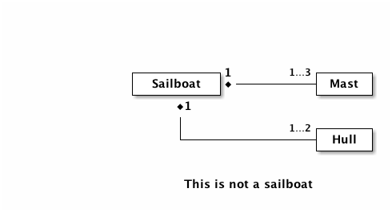
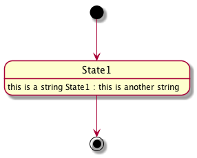
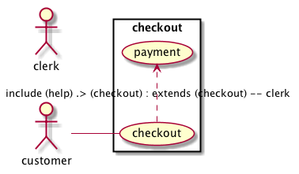
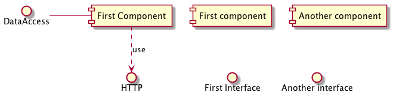
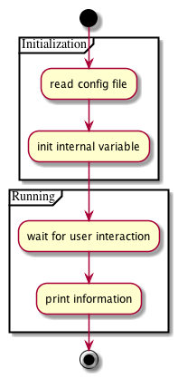
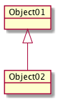

The care and conservation of computer files (TC3F)
Table of Contents
- 1. How to design a file conservator (HTDFC)
- 2. On the role of, and the need for, a personal philosophy
- 3. Decisions
- 4. Assembly
- 5. Usage
1 How to design a file conservator (HTDFC)
1.1 Audience 1
Who should be reading this? Possibly…
- Entire document: Software engineers who want to do the above 2
- If you are using this an excuse to learn Lisp, then know that it is really,
really simple. Here is how it goes:
- 3s to download Emacs
- 3m to learn how to run code
- 3h to learn the IDE
- 3d to master the language
- If you are using this an excuse to learn Lisp, then know that it is really,
really simple. Here is how it goes:
- Decisions & Assembly: Existing Emacs users… daily usage and non-trivial customization An interest in using cask and org-mode literate programming are the only thing that would motivate anyone to read this really.
This is an unfinished and experimental document. All successes with it may be attributed to all of the folks who provided these wonderful tools. All failures with it may be attributed to me.
Why should they be reading this?
The expectations of life depend upon diligence; the mechanic that would perfect his work must first sharpen his tools. 3
1.2 Cogito ergo sum 4
What was I thinking?
- creation
- "the act of producing or causing to exist" 5
- conservation
- "prevention of injury, decay, waste, or loss" 6
- computer files
- "a file maintained in computer-readable form" 7
Pursuing these goals, in the manner of literate programming, also serves to better myself, as captured here:
The expectations of life depend upon diligence; the mechanic that would perfect his work must first sharpen his tools. 8
1.3 Means 9
1.4 Madness 12
What about their raison detre? 13
- Wonderful, wonderful stock tooling, 80%
- Can tool-makers build it perfectly for us all? 14
- Either way:
Thinking is required.
1.4.1 Goal
What is my measure of success?
To provide a self-supportable environment in which the creation and conservation of computer files may occur with ease
1.5 Decision
GNU Emacs is an extensible, customizable text editor 15
1.6 Methodology 16
How will I customize it?
Agile 17
- Product Backlog
- Sprint Backlog
- Review, Refine, and Reiterate
- COTS libraries
- Capture rationale and reasons along with things I did or didn't do and why
- Includes links to everything
Note: How you break up the initialization of a system like Emacs is mostly personal preference. Although org-mode (Babel) lets you tell a story, I was coming from a pretty structured configuration file to begin with. In the future, it might be interesting to look at this system from scratch in terms of doing literate programming. Fortunately, it provides that freedom out of the box.
1.6.1 Medium
How will explain what I did?
- Audience-appropriate presentations
- Reproducible research
- Reusable data structures
1.7 Developmental Values
1.7.1 Traits
- ☑ Pleasing user experience
- ☑ Pervasive orthogonality 18
- ☑ Self-supportable
1.7.2 Coding
- ☑ Completion
- ☑ Debugging
- ☑ Templates
1.7.3 Editing
- ☑ Auto-indenting
- ☑ Binary file editing, hex editor
- ☑ Code folding
- ☑ Code formatting
- ☑ Diffing
- ☑ Heavily used languages:
- ☑ CSS
- ☑ Elisp
- ☑ HTML
- ☑ Graphviz
- ☑ JSON
- ☑ JavaScript
- ☑ Make
- ☑ Markdown
- ☑ R
- ☑ Scheme
- ☑ shell
- ☑ Lightly used languages:
- ☑ go
- ☑ OCaml
- ☑ SML
- ☑ Clojure
- ☑ Perl
- ☑ Python
- ☑ Ruby
- ☑ Incremental selection
- ☑ LaTeX
- ☑ SEXP Support
- ☑ Spell-checking
- ☑ Structured navigation
- ☑ Syntax highlighting
- ☑ Tab management
1.7.4 Development
- ☑ Build tools: make
- ☑ Copyright notice, analysis, and standards
- ☑ Dependency management
- ☑ Diagramming
- ☑ UML
- ☑ Version control: git, svn, bzr, cvs, rcs
- ☑ Workflow
1.8 Operational Values
1.8.1 Fonts
1.8.2 Images
- ☑ ASCII art
1.8.3 Spreadsheet
- ☑ Calculation
- ☑ Data management
- ☑ Import/Export
1.8.4 Files
- ☑ Auto-save & synchronize
- ☑ Encryption
- ☑ File-system/directory management
- ☑ Project structure
- ☑ Search everywhere
1.8.5 Commands
- ☑ Key recording
- ☑ Macros
- ☑ History of all things: files, commands, cursor locations
- ☑ Undo
1.8.6 Publishing
- ☑ Code
- ☑ Multiple formats: HTML, JavaScript, PDF
1.8.7 Terminal
- ☑ Cross-platform shell
- ☑ Games
1.8.8 Remote file access and management
- ☑ SSH
- ☑ SCP
1.8.9 Music
- ☑ LilyPond
1.8.10 Communications
- ☑ IRC
1.9 Observations
- Went stunningly well
- Stopped logging hours spent >200h
- This configuration was developed organically quite differently from the original idea
- Literate programming allowed an insanely flexible and freeing experience
- This one massive experience for me made a powerful, positive, life-changing impression on me
- My laziness and poor habits were made quite apparent going through the efforts to consider, realize, and support this system
- Before beginning I had no value system about testing this kind of artifact
- If this attribution, which is only about Wolfram's MathWorld 33, the you may be interested in this style of programming and literature:
Created, developed, and nurtured by Eric Weisstein at Wolfram Research
2 On the role of, and the need for, a personal philosophy
2.1 Audience
- Myself
- The scope of my approach is neither totally scientific nor entirely thought out or even remotely near perfected. Despite that, the show must go on, and I want to keep a record of how and why I have pursued this goal.
- Most of the work performed within this document will be more-so a work of art, and philosophy, then of science, though science will definitely play a part.
2.2 Keyboard usage strategies
2.2.1 Background
My personal keyboard layout has evolved quite slowly over the years. Beginning as a begrudging Emacs user, I quickly learned some basic manners and abandoned it. Problem was that I had no good reason to be using Emacs, and so, I failed. Instead of a solution, I saw it as an obstacle. Lesson learned. When I wanted to learn Scheme, Dr Racket worked out just fine. It wasn't until wanting to learn OCaml that I became smitten with our dear Emacs.
My usage was pretty basic, customizing the bare minimum and sticking with the defaults for everything. That approach is quite fine, for whatever point you are at because you are more or less guaranteed excellent documentation on your environment. This was my setup for years and it worked great. The more comfortable you become, the more you change, and the more changes you make to your configuration.
My configuration file grew, and grew, and grew. It had an ad-hock layout, and soon I even started to forget why, or where, or how. With additional and hacks and the usual, eventually I turned to literate programming with org-mode. That was and is pure joy, and I've barely scratched the surface. This was a turning point for me. At its simplest, I was then able to do everything that needed to be done in Emacs, and it was then that I started caring a lot more about how my keyboard was set up.
2.2.2 Version 001
The simplest and best place to start is to remap the control key to the center left of the keyboard. On most keyboards, this is directly next to the "A" key. This change alone served me quite well for years and years. It was after years of usage that I got curious about "better ways" to do; and I suppose that is the driving force behind thousands of Emacs packages. The change works well on Windows, Linux, and OSX. Lately I've read a lot of material published by bbatsov 38 and xahlee 39 about their quests to perfect Emacs and there is a lot of discussion about keyboard mappings that go so far as to talk about how to avoid repetitive strain injury 40 due to QWERTY 41. By "lately", I mean over the course of a few years. That alone will get any computer user interested in really thinking about their mappings and how to make things easier on their wrists.
2.2.3 Version 002
One of the simplest changes discussed is simply to never twist and contort your fingers into order to perform key chords that both the meta key itself and the key with which you are chording. At first blush, his seemed silly to me, but after trying it out for only a day or two, my wrists and hands simply felt less worn out at the end of the day. That was intriguing having such immediate results. All it took was swapping the enter key with one of the meta keys on the bottom row. The lack of balance though quickly became kind of a nuisance.
Reading a range of links about the topic, I settled on a simple goal of having meta key parity on both sides of the keyboard. That does take some work. The experience resulting from the goal set forth, over the course of a few months, morphed into the desire to grow the chording space into something much more manageable, and began a new phase.
2.2.4 α Version 003
In my minds eye, I see the key chording space in some broad, simple divisions, roughly something like:
- Emacs
- built in bindings, most common, documentation exists for all
- Packages
- separately installed, generally play nice with Emacs
- Personal
- my own key-bindings that try to play nice and adhere to the spirit but generally struggle due to lack of remaining name-space control-land
All of the good key-bindings are used up. The "good ones" are easy to use and easy on your hands and fingers. Even worse, sticking close to the native and package bindings results in having just too many chords to make it nice to use anymore (curiously remembering them is never an issue). The mental model that I am beginning to develop is quite simply to segregate all personal bindings into a new key-space, conceptually, so I generally know where to put thing and where to find things.
Articles on things like god mode 42 were my first thought on how to tackle this, but on further review it became clear pretty quickly that the best approach for me would be to follow Xah's advice and start using more meta keys.
2.2.5 β Version 003
My desire is to have a pleasant key binding approach that works on all keyboards and supports all meta keys 43 supported by Emacs 44. To get started I tracked down some examples of what I want to support for work, home, and other:
- A Macbook Pro Retina 15"
- A Thinkpad T42
- A Lenovo W540
- A Dell external USB keyboard
- A HP EliteBook 8570W
(Still not sure how to track down one of these 45
Staring at these for a while got me thinking about the "perfect" layout and it started to get a bit overwhelming so I set out to reduce the keys for consideration a bit:
- Total keys: 78
Yikes. That is a lot to chew on. Thinking about how I really use the keyboard, though, I now that some keys are not up for debate. Here is what I mean
Keys that will remain the unchanged
-
Fkeys, 12 - I expect them; that is what makes it a computer keyboard!
- Alphanumeric, 48
- Numbers, letters, Symbols, Space… they are self-evaluating!
- Permanent, 1
- This may never change. Ever. The power button!
- Frequently used, 3
- Delete. Tab: for bash completion. ESC.
- Arrow keys, 4
- leave the alone it is just right. It just feels wrong to remap it. Used in Finder. It stops videos from playing.
Remaining keys: 11. Now is when I start to look at what keys I really, really need, that I can't live with out. All it takes is a simple question: "How often do I actually use that key?". Additionally, because I want key balance for meta keys, I can drop the number down to 7 because 4 of them were listed twice, conceptually at least.
Next step is to look at the Dell keyboard and the T42 laptop to see what keys remain in what order, and where. Following the layout from top left, counter-clockwise, to top right looks like this. This does include keys that I won't re-map, but I want to list them just to get a sense of the location and remind me of how it "normally looks":
esc tab caps lock return shift shift fn control option command command option left up down right
The Dell:
esc tab caps lock return shift shift control alt command command option menu control
The T42:
esc tab caps lock enter shift shift fn control alt alt control left/down/up/right
Taking a peek at the more modern HP laptop and W540 I find 4 keys available on that bottom row, just like on the Mac. This is something to think about. I don't want to design around the past, but at the same time I would like to have the option of things being mapped nicely regardless of the machine and keyboard… it is just more flexible. At the same time I don't want to be trapped in the past… and at the very same time I do not want to be beholden to an external keyboard. Here is what I decided to do…
- Assumption
- there are only 3 usable keys on each side of the bottom row. This will work for perhaps all machines and hardware out there and the decision will be final. Now I need to figure out the plan.
Having had some really good experience with KeyMapper 46 on Windows and KeyRemap4MacBook 47 on OSX I am feeling very confident and adventurous on pursuing an quite aggressive remap that looks like this:
- Caps lock
- control
- Shift
- option (alt, meta)
- Command
- command, pretzel, windows
- Something
- hyper
That takes care of all of the meta keys but leaves stranded:
- Shift
- Return
- Caps lock
And I'm not sure what to do with:
- Fn
Then I actually tried setting this up, on OSX!
Working through this was quite educational, here is what worked and here is what didn't:
- Hyper
- I never figured out what key to use for this. Oops. Fn seemed like a good option until I reminded myself that I like to use the function key for stuff like volume and screen brightness, so that was out.
- Shift
- when I remapped shift to meta, sometimes it worked right in Emacs and sometimes it just inserted "control" into the buffer. There is an answer, but I chose not to pursue it right now. This alone felt too far off into a path too far off the mainstream.
- Enter
- it was horrible trying to use the tiny, bottom option key or enter
This has been a good experience and it led to my new/old/new configuration that was basically a slight improvement, that will basically work everywhere, and is in fact not very radical.
2.2.6 Version 003
The story is still simple, yet powerful… the definition of elegance!
First, leave every mapping alone, keep it fresh from scratch and an Emacs and OS perspective.
- Modifier keys:
- caps lock → control
- control → caps lock
- option/alt → option/alt
- command/windows → command/windows
Second, find a way to make enter key send enter when pressed act as control when held. We really lucked out here, and bbatsov already figured this out for us here 48. It is kind of cool that many of us will reach the same conclusion as him, and of course also that he graciously blogged the solution. Yet to be done is to find a good solution for Windows and Linux.
Third, super will be provided by option/alt… this is a good choice, as it is used elsewhere for a similar intent, at least in OSX and Windows (windows key). This symmetrical bindings supports quite easy and uniform access to a grand total of 46 keys. That is all with a single key chord! Great to know. Very nice. Doh!… as I never though to inquire about this before.
Fourth, that leaves hyper. Who wants to ditch hyper? I don't. We need a key for it. It would be nice to have symmetry, and by that measure alone I'm not sure where to put it. Fn lives on OSX and Windows keyboards, but I want that. All of the other keys I was looking at have their place and use, and I'm not ditching them. That leaves one place, the F keys. F1 and F12 are open. Would it nice to use them for super? Would it be horrible? Is it even possible? Well, not really. This article 49 explains the notion of reserved keys, and how F1-F4 are not available, thus negating the chance to have balanced hyper on each side using F keys. That is OK. That is sticking with my philosophy of "close to the original" and I feel like it is very OK since we have 46 keys available to find, and bind.
2.2.7 Version 004
- Beginnings
Being able to succed, at anything, requires a goal. During the pursuit of the goal, the pursuer changes, and thus, so does the goal itself. My goal in this section was to capture this iterative process so that I may see how it developed.
Two ideas had been lingering for me:
- How to automate key binding configuration and how
- How to define as simpler, and cleaner philosophy
The good things that keep coming to mind are simple:
- Stay close to the default bindings,
- Already know them
- Documentation is plentiful
- Others may use
- Honor the default bindings
- If possible, never alter them
- Inform the operator when they are changed
- Honor operator actions
- Recognize how they use the keyboard
- Conserve their energy
- Honor operator preferences
- Everyone is different
- Find a general approach that may work for all
With those values in mind, incluidng all of the exploration that came before it on this topic, providence stepped in.
- Studies
Providence, stepped in, kindly, and gently, to point me in the right direction.
- MASTERING KEY BINDINGS IN EMACS
First, Micky stepped in 50 with a potent summary 51 of where to begin mastering your key-bindings. This is critical.
- Grokking
self-insert-commandhelps grok the notion of compos-ability - 3 key categories
- undefined key
- does nothing
- prefix key
C-xandC-c, compose complete keys- complete key
- when input, executes
- Some useful key mod commands
define-keylocal-set-keyglobal-set-keyglobal-unset-keylocal-unset-key
- Use they
kbdmacro - Function and navigation keys require angle bracket wrappers
remapthoroughly replaces existing bindings- Reserved keys
- In theory,
C-c *is for you - In practice, who knows
F5+- Super
- Hyper
- In theory,
- Key-map look-up order, first-found, minor modes are first
- commands are interactive functions
- Key bindings may only invoke commands with no parameters
repeat-complex-commandis something that anyone who performs automation may love
Whether the topics are old news to you or new and fresh, that is a delightful post.
- Grokking
- Custom Global Emacs Bindings with Key Chord and the Semi-Colon Key
Justin posted this 54 his approach here, and I think that I understood his goals. His comment that:
learning Emacs and molding it with lisp is a great creative exercise
is spot on.
His advice on how to use key-chord mode 55 also struck a note with me:
this is basically an empty binding namespace… you can use the most memorable mnemonic letters… You don’t have muck around with overriding or conflicting with command prefixes between lisp packages or memorizing multi-command. You also don’t have to rely on bindings involving the super key (⌘ in OSX), which may conflict with system-level bindings… The biggest consideration to make when defining chords in general is to stray from key combinations you might accidentally fire when typing away.…
Justin shared a concise bit of wisdom that is, like most things you will find in this community, a pleasure to consume.
EmacsWiki shared some details 56, too:
- The term key chord
- Is specific to using this mode
- Is two keys pressed simultaneously
- Or is a single key pressed twice quickly
- Use the thumb a lot, it is strong!
- Avoid chords common to how you "write"
Of course, Magnar already knew 57, yet further evidence that all of his vlog are required viewing.
- The term key chord
key-chord.el58Many times, the source is required-reading, too
key-chord-define-globalkey-chord-define- Everything that I noted in the blog posts is started in the code itself!
- Recommends that chords only involve two fingers on one hand to keep it fast
- Interesting because I was asserting that two-hands would be fine since I use the control key plenty of times, and it would keep the key space open
- Wonder how important this one is
- You can't use function, control, or non-English letters
- Only 2 keys are supported!
- Emacs: How to Define Keys
This article 59 will serve many:
- One may define bindings of:
- A single key sequence of single keys
- Key combinations
- Sequence of single/combo keys
- Keys to Avoid (rebinding)
- Control characters
- that may be represented by a
C-? -
F1orC:h - they hep!
-
ESCorC:[ - complicated meanings
-
C:up S:letter] - doesn't work in terminals
-
C:morEnter - they are linked
-
C:iorTAB - they are linked
- There are so many keys that if you define your own then you are probably doing it wrong
- Good Key Choices
- Someone else has thought through all of this, too, then!
- F5-F9, F11-F12
- F1-F4, but not F10
- C:F1 - C:F12
- M:F1 - M:F12
- S:F1 - S:F12
- C-# and M-#
- all good
- So that is how you may enter diacritics
- One may define bindings of:
- A Curious Look at GNU Emacs's 1000+ Default Key-binding
Something of a diversion for me having covered stuff elsewhere, but this 60 is a nice to know, too:
- The fact that
F1is bound to help really reveals how thoughtful Emacs was provided for its users - Special symbols are nice to know about, I've always used
ucs-insertand this might be a nicer option, even for guillemots. - F
- 3 starts a macro recording
- 4 ends or runs it
- 10 opens the menu bar
- The fact that
- Emacs Key-binding: the Power of Key Sequences
More 61 from Xah's great pool of Emacs wisdom. Something great to think about when you design your layout:
- Yet another key-space
- Use these when there is discontinuity in your in your editing
- Choose F keys when you need a break
- MASTERING KEY BINDINGS IN EMACS
- Discussion
Wow. Learned so much. Thought a lot, too. Xah's list of god keys alone would be enough of a place to finish because it opens up the key-space so much without requiring anything more than the default Emacs setup. Sticking with that is really kind of intriguing, but for the fact that you are still always going to be using meta keys. Defining your own key sequences, though, opens the door for faster approaches. Combining the two sounds interesting, too. This is where key-chord starts to get really interesting in the sense that it opens up new venues for thoughtfully choosing, or defining, a sort of meta-key, any-how that you wish. Very cool.
- Assumptions
The key-chord package will just work in the same manner that every other built-in Emacs feature just works.
- The plan
- Tenets
- 99.999% of the time, leave stock bindings alone
- Never use
C-cC-xF1-F-4- asdf-→ or jkl;← gives 12x8=96 bindings!
- Upon thinking this through, decided not worth the trouble because typing quickly would trigger the chords
- Initially, focus on global mappings to "keep it easy"
- Proximity
- CLOSE (continuity keys)
- Use alphanumeric/symbol key-chords when
- The combination is obvious… like ".." → "…"
- There is no chance that it could inadvertently be pressed; recalling that both directions must be considered
- Excluding alphanumeric leaves;
` - = [ ] \ ; ' , . / - Likely offenders:
- = ; ' , . - Leaving:
` [ ] \ / - Left hand: 12x5
- Right hand only: 7x5
- 95 possible if this is right
- Preferences: [, ], \…
- Likelihood of usage? low
- Choosing a global mapping that works in all modes will involve a lot of work
- Tough to choose these when
METAkeys are easily within reach instead
- NEAR
- Goal is to minimize finger travel
- Keys used most frequently
- In order of preference:
- 10
- 6 (3 easily in reach on one hand)
- FAR (discontinuity keys)
- Super:any-one
- (12+10+11+26)=59
- FURTHER
- Use
[S|C|M|S]F:5+keys - 8x4=32 bindings
- Use
- CLOSE (continuity keys)
200+ bindings (stated C-F keys extra for easy reach
-ers), that is fine. - Tenets
- The result
- Preference in terms of frequent use, is ease of use:
C-#M-#C-FM-F- In the process, realized that I didn't consider using upper case letters to
chord with! One may argue that defeats the purpose. I argue that it makes
S serve as a quasi
METAkey and that is fine because for some reason, mentally, it makes more sense, and feels a bit different from aMETAkey which has a slightly different intent. - It might involve re-training the operator, because unlikely things, like
typing in all caps, can muck with desires for using key-chords like
META. - Chords exactly right next to each other are definitely just nice and pleasant to press.
- The ease of access becomes quite clear. For me it is
C-[123]and C-90[-] that are quite easy to reach. Good to know and note, note sure how though yet. - Choosing a place to map from, in terms of the distraction level, kind of
an odd experience. I had ideas about how the "disruption level" would be all
that was needed to figure out where/how to provide a mapping. That was mostly
true, and is still the case, but I just had a surprise where once I learned
about how useful ace-jump is all the time, I realized that I must somehow have
a home key chord. Previously, I had determined that there is no point because
of the assumptions to bother using English language keys. Staring at the
keyboard though, with this new understanding of the power of this mode, it
became really simple:
dandf(orfandd) are rarely if ever used together, so clearly that is the right place for a key-chord for ace-jump! - My ideas, some were good, some were not. Interesting to see how they pan out and develop in the log here. It almost does seem like anything not involving vowels may be a good candidate for a key-chord. I initially just didn't want to have to think about it, especially during an active touch-typing spoken-language even. Whatever happens, I'm trying to keep an open mind and let it develop organically.
- Realized today that since I use
vc-nextander/expand-regionso much that they should be even closer to home. Fixed that. - Looking at the version control mappings to s-d… that was a relatively easy key combo, and naturally it ended up with the choices all occurring on the right hand. That was almost without thinking.
- Another idea of name-spacing is to use sequences of letters that are meaninful. This 62 articles covers something that I never though to do: C-c word. Simple. Instead of limiting it to meta sequences, like C-x C-e, just do C-x ce!
- Just added a key-chord for =a'= because I do that all the time. Left-control and ' are already used, and this just popped into my mind. Perhaps it is obvious?
TABloves to be used by different modes. Better just leave it exlusively forauto-complete. That keeps things really, really simple.TABcompletes stuff. Other than inorgmode, everywhere else this remains true.- It is worth mentioning again that it it is a really good idea to keep your
keybindings pretty close to stock. When you are on someone else's machine,
or you are debugging your system, and you can't use your highly tweaked set
up, and still need to use
emacs, they knowing most of the default bindings really pays off! I always run into this when I want to use the lightweight and minimal system defined in this document for debugging. This has served me well because when I am using IntelliJ or VisualStudio I can still use use Emacs keybindings! The former is superb, the latter is not, though. - On OSX, option-command bindings are used for a lot of things by applications. Although it would be nice to use super-meta, it is not worth borking the built in bindings to do so.
- Using shift for hyper continues to be tantalizing, but then what is the simplest way to handle brackets that I hit a million times? That is a good question and perhaps I will some day have an answer.
- Recently read this 63
article. Not
having been sure how to manage the growing keybindings, I've been keeping my
eye out for a nice approach and I think that this is it. My previous idea was to
do a graphical rendering of bindings per mode to make sense of it, but this
seems to be a better and simpler approach. It is not urgent, but when the time
comes this is the approach that I will try. Here 64
is another discussion alluding to the same approach. Right now I do the same
thing with plain old bindings like
s-u dsrfor "unicode double-stroke R". - Lately I've refactored this document a bit to make it easier for me (the human)
to manage. Something really basic: tagging
noweb-refblocks with a disposable name likeignoreto make it easy to work with them in their source language without tangling. That change is not exactly a keyboard thing, but it is related. That slowed things down a tiny bit. However, it made things so much more flexible AND understandable. I guess this is my experiential proof? The only way I can make sense of the tangled document is becuase of this document. The context, the story, everything, is in here. Without it, the tangled document is nearly useless because no one could ever make sense of it. Making sense of it makes it very easy to change. When you have a map and a context, you can make changes very quickly. This makes it easy to make mistakes, which is a great way to learn. The key-chord map is one example. I erroneously chosedfforgoto-line. Actaully, when it chose it, it was perfect! That was beforeessand typingdffor datatframe all over in the code. Ouch. Well, life changes, and we adapt. That is what is so cool about this document; it lets you adapt easily! I make changes with no fear because I can make sense of things. I have my notes, my context, my reason, my idea, and a real biggie, results of previous experiements. It is easy to love this approach. Something that came out of playing, or experimentation perhaps sounds better, is seeing that for key chords it is a little easier to know what to do. Eg, I use English, so consonant-vowel combinations are easy to avoid. Once in a while ones likedfwill pop up and I will deal with it. A minor one to avoid perhaps are abbreviations from when you remove vowels, that has not me. Not a big deal, but identifying obvious chords one will never type likefgis a nice to do.
2.3 How to choose a font
Audience: Computer users. Programmers. User experience designers (UXD).
Every computer-user has a different strategy for choosing the best font for long periods working at the computer. They all involve many metrics, strategies, and rubrics. Based on that, they are probably all wrong. Well not really, they are right based upon experience, and experience is really all that matters.
I was curious about whether my experience had any basis in reality, and I really wanted to dig into what is the "right way" to choose a font for any particular user or situation. The following are notes and ultimately a decision on what is the best for me. Hopefully the notes alone are revealing and help you reach your own conclusion, too. At the very least you ought to be educated, informed, and probably surprised, too, about some of the factors involved in font selection.
What’s the most readable font for the screen?
Serifs are tips for the reader's eyes for flow.
San-serifs are better for low-res.
Simultaneously states that is no difference between serif and san-serif.
Rec: Helvetica/Arial
Comment recommendations:
Designed for digital, Hermann Zapf's Optima, or as a backup Verdana
Designed for digital, Open Sans
Both, Calibri
San-serifs are easier on the eyes as you get older, citing retinal tears specifically
Designed for screen: Verdana, Trebuchet MS, and (the serif) Georgia.
Easy to read, available on virtually all machines.
Let go of times new roman, Arial, and Helvetica.
Traditionally a serif font was used for the main body of a document, and sans-serif for headings. Today, those principles are often reversed.
The Best Fonts to Use in Print, Online, and Email
Popular serif fonts are Times New Roman, Palatino, Georgia, Courier, Bookman and Garamond.
Some popular San Serif fonts are Helvetica, Arial, Calibri, Century Gothic and Verdana.
It's been said that serif fonts are for "readability," while sans-serif fonts are for "legibility."
Best fonts for online: go with sans-serif.
2002 study by the Software Usability and Research Laboratory:
- The most legible fonts were Arial, Courier, and Verdana.
- At 10-point size, participants preferred Verdana. Times New Roman was the least preferred.
- At 12-point size, Arial was preferred and Times New Roman was the least preferred.
- The preferred font overall was Verdana, and Times New Roman was the least preferred.
For easiest online reading, use Arial 12-point size and larger. If you're going smaller than 12 points, Verdana at 10 points is your best choice. If you're after a formal look, use the font "Georgia." And for older readers, use at least a 14-point font.
Dr. Ralph F. Wilson, an e-commerce consultant, did a series of tests in
- He also came to the conclusion that the sans-serif fonts are more
suited to the computer screen.Some of the highlights of the test results were that at 12 points, respondents showed a preference for Arial over Verdana – 53% to 43% (with 4% not being able to distinguish between the two).Two-thirds of respondents found that Verdana at 12 points was too large for body text, but Verdana at 10 points was voted more readable than Arial at 10 points by a 2 to 1 margin.In conclusion, for the best font readability, use Arial 12 point or Verdana at 10 points and 9 points for body text. For headlines, he suggests using larger bold Verdana.
Comments: Good.
My comments: no links to cited papers
Which font is the most comfortable for on-screen viewing?
Post: Advice to use san-serif is outdated and inappropriate for today's high resolution screens. San-serif or not is irrelevant; instead the measure of success is to use a large font that was specifically designed for on-screen usage. For inspiration, look at the free fonts listed at the Google Web Fonts directory, especially Vollkorn or the Droid Serif font which was particularly developed with small font size in mind.
GCR: That post is confusing because he later explains that we are not there yet, but rather getting close.
Post: Sans-serif are best for on-screen.
The Design of a New Math Font Family
Interesting.
Legibility refers to being able to read a text in bad conditions. “Legibility is concerned with the very fine details of typeface design, and in an operational context this usually means the ability to recognize individual letters or words. Readability however concerns the optimum arrangement and layout of whole bodies of text”
Studies that contrast serif vs. non-serif fonts seem to be controversial.
There are some ground rules one can find, like:
- Don't make long lines nor too long paragraphs
- Use wide fonts such as Palatino or Verdana for small fonts
- Use spaces between lines, e.g. about 1.2 at least. E.g. in Word 2007, 1.15 is the default I believe. to be controversial.
Sans serif: Verdana (a humanist font) or Arial
Serif: Georgia
Some references for studies and research done on fonts.
“two roles for type: a functional role (relating to legibility) and an aesthetic/semantic role, which impacts the "apparent 'fitness' or 'suitability' for different functions, and which imbue it with the power to evoke in the perceiver certain emotional and cognitive response" (p. 38)””
In her study: Calibri came out as a winner against Courier New and Curlz.
GCR: Very exciting and interesting with good links
The Effect of Typeface on the Perception of Email
People take Calibri seriously via this study.
Know Your Typefaces! Semantic Differential Presentation of 40 Onscreen Typefaces
Study showing how people emotionally react to certain fonts.
The Academic Evidence Base for Typeface Readability
Study.
Young people like serif; older like sans-serif.
Bibliography on font readability
Links to papers on font readability.
Serif: Georgia. It was designed especially for screen. Other options are listed.
Sans-Serif: Tahoma. Geneva, Tahoma, and Verdana were designed especially for the screen. Tahoma in particular is cited for legibility. Another pick: Lucida Sans Unicode: Cited as remarkably legible for some reason.
Monospaced: Monaco/Lucida Console.
GCR: Great article.
A Comparison of Two Computer Fonts: Serif versus Ornate Sans Serif
Another study, unsure what to conclude from it.
A Comparison of Popular Online Fonts: Which Size and Type is Best?
Excellent details.
Tahoma and Verdana, sans-serifs, were designed specifically for viewing on computer screens. J, I, and 1 were made distinguishable. Tahoma is wider than Verdana.
Great article but leaves so many questions and stuff unanswered and explored.
A Comparison of Popular Online Fonts: Which is Best and When?
Big fonts generally don't matter and are easy to read.
Tahoma is well-read.
Verdana and Georgia have good legibility.
Whole other range of evaluations: personality, elegant, youthful and fun, business-like,
Most legible: Courier, Comic, Verdana, Georgia, and Times.
Design for Hackers: Why You Don’t Use Garamond on The Web
I only read this article months after reading the bulk of references in this section. It took time it to sink and for me to accept it. It is so easy to produce a letter in LaTeX, and just send a PDF. It should really be printed, though. So, what is the right medium and what is the right font? For formal things, things worth writng, I say paper.
2.3.1 Thoughts
- Ideals
- Current state of technology along with aging-eyes means that sans-serif is the best option
- Emacs suggest mono-spaced fonts for coding
- Experienced teaches me that Unicode support is mandatory
- Matching
- Prefer fonts that focus on legibility over emotional evocation
- Results: Verdana, Calibri, Tahoma, Lucida Sans Unicode, Lucida Sans Console
- Notes: Best Unicode Fonts for Programming
- DejaVu Sans Mono: best Unicode support
- Based on Andale Mono, a monospaced san-serif designed for coding
- What are the best programming fonts?
- Tons of coding related fonts. Why not for reading?!
- Source Code Pro is highest ranked, then Consolas, and Monaco
- Font Survey: 42 of the Best Monospaced Programming Fonts
- The options, although only 42, are insanely overwhelming.
- Comments
- There isn't a ton of digestible info available on Unicode support for the fonts that I listed.
- I am recalling now that my original selection of DejaVu Sans Mono was specifically for its excellent Unicode support; specifically that it had better support than Lucida Console which is monospaced but lacked characters and looks at least as nice.
- Seems like it is just haphazard and quasi-scientific how people are choosing fonts; and maybe even designing them.
- Founds evidence that Lucida is just fine for display; and thus DejaVu Sans Mono is fine for display.
- Conclusion
- DejaVu Sans Mono is the best available font for computer work.
2.4 Ponderings
2.4.1 Make things "secure by default" 65
Your artifacts may end up in use anywhere by anyone. Create an environment where the default configuration is also the most secure configuration. For example, provide HTTPS links over HTTP, and think about what code may run and what it may do. This approach, while admittedly valuable, is inherently at odds with the fundamental mission of a software developer: to enable. Respect both sides of the coin, and you will suffer less.
2.4.2 What it means to test
Testing is like flossing, everybody knows why it is important, agrees that it is important, and even wants to do it… yet does not. Your job is to create an environment where people want to test. The first step is to define a measure of success.
In order to succeed, one must have a measure. Although arbitrary, measures must be made. Think through the problem, the original goals, and the newly understood constraints. All of those things will define the measure of success.
Guided by that measure (or constraint), then you may go about creating an environment that is pleasant and facilitate the achievement of those goals. Practices like breathing practices and meditation will serve one well here.
2.4.3 Practice
The old tenet that practice makes perfect couldn't be any more true here. In the cycle of learning, you learn the tools, the problem, then apply them, and then, the tools and Tc problem change you, and the cycle repeats. Lisp programmers who have invested in code-generation (macros) know this well, and yet are constantly surprised when it occurs yet again. In the same style, working with literate programs grows and blossoms in unexpected directions. Though some are painful and irritating; the common thread among all of them is that they all lead somewhere wonderful. With time and practice, you will find yourself not only maintaining things you never intended, but simultaneously pondering and realizing things you had never intended, either. That trip is delightful.
2.4.4 Understanding how to use the tools
Tools alone are meaningless. Experience and knowing how to use those tools means everything. A simple example is doing GUi diffs before a commit. Often GUI tools are shunned quite needlessly here. They can make stuff quite focused and simple. For example, while doing a refactoring, comment out what is not needed, make the change, test it, then do the diff, to verify what you expect, and then do the commit. Remove the commented out code before that commit, or after, it is up to you. The GUI diff tool may be nice here in that it uses standard (to the tool) colors to indicate the type of change that has occurred making it very, very clear as to your intent, too. Is it a perfect approach? No, not at all, but it is very, very nice sometimes.
2.4.5 Audience
A question that every document author must both ask themselves, and consequently answer, "for whom am I creating this document?". At one's day job, it is easy: the stakeholder. In our personal life though, most of use don't get into habit of viewing ourselves as the stakeholder, or our family and friends, either. We would be well served to do so, though. One's personal life is a safe, non-trivial place to learn how to better ourselves. Starting with ones-self is a perfect place to start. That is not to say that starting with others isn't also great, it just wasn't the right place for me.
Originally I wanted to create a document explaining to others my goal for this document. That was a honest yet ultimately misguided effort, because I didn't know where it was going. At the beginning, I had a very different belief system. My intention of focusing on those things was good, it just needed to be simplifies and re-focused upon doing that work for myself. At delivery time, I am the single stakeholder and all efforts should be focused there. Where is there?
There is in me, a flawed, irrational, and illogical human being. Quite common, actually, but we still like them. The document that I must deliver has to account for all of those things, and help me to achieve my goals.
2.5 Philosophy
A favorite fable is that of the human who upon reaching the afterlife, meeting his Holiness, vented his frustration exclaiming "All this time… for my whole life I begged to you that I wanted to win the lottery! And you, you never let me win, it would have made my life so, so much better. You failed me". With a kind heart and a sweet voice, his Holiness explained "My child, I did let you win, you just never bothered to get off you ass to go and purchase the ticket". That is certainly a favorite of mine, it captures a specific idea quite succinctly and humorously: that effort is required.
These days, at least here in America, a land of great, great prosperity, the most prosperous people have grown lazy and selfish. A sense of entitlement abounds, surrounds, and consumes them. This disposition reveals itself in every action that they take ranging from beliefs on public policy and whether or not to donate money to the needy all they way down to their day jobs.
Nearly all of the great technologies on which the modern world is built, at least from a software perspective, occurred due to the efforts of great individuals, who may be broadly and perhaps unfairly lumped under the singular umbrella of The Free Software Foundation 66.
Sadly most computer professionals today, especially developers, make a non-trivial percentage of their income using the artifacts produced by the combined efforts of others, yet give little to nothing back to that community. From the simplest form of contributing money, all the way down the cheapest form of simply promoting its values, most people are too lazy and selfish. Honestly, I understand though, I used to be that way, too. The important thing is that it is never too late too change.
Our mind is here to be used; fight laziness. Our efforts are here, to help contribute to and serve others; always give back to your community no matter what it may be.
2.6 The desire
"I want". If only all conversations would start out with a clear goal in mind. All too often we waste our own, and other people's time talking and simply trying to figure out what it is what we want. For most of us, "it", is that thing that will solve all of our problems in life and make us happy. Technology is no exception.
The perfect integrated development environment is a topic of constant conversation. For good reason, for most of us it is our only tool. Unlike carpenters and wood-workers who have a bevy of interesting and delightful tools, we are stuck with but one. Fortunately for us, our singular tool allows limitless creation, of tools and more. Alan Kay said it so well 67:
The computer is a medium that can dynamically simulate the details of any other medium, including media that cannot exist physically. It is not a tool, although it can act like many tools. The computer is the first metamedium, and as such it has degrees of freedom for representation and expression never before encountered and as yet barely investigated. The protean nature of the computer is such that it can act like a machine or like a language to be shaped and exploited.
Even more succinctly, my measure of success is to:
To provide a self-suportable environment in which the creation and conservation of computer files may occur with ease
As of writing, although there are many nice options out there, none of them come within even light-years, of power that you are granted for working with a computer as that metamedium, that GNU Emacs 68. With that in mind, the following is what I actually want to do with it.
2.7 The preparation
Give me six hours to chop down a tree and I will spend the first four sharpening the axe. 69
Even better, configure Emacs properly and you will end up with a light-saber. It takes investment though, and it begins with preparation. For me, that meant getting some real life experience, learning new things, getting unpleasant phone calls when systems went down, and perhaps most importantly forcing myself outside my comfort zone.
We work so hard to become experts, yet as a result of it, we close our eyes to new possibility and techniques and approaches, that when combined with our existing experience, could help us to produce some really beautiful things. That experience is often reflected in the love, adoration, and respect held collectively for the Lambda papers 70.
At its simplest, reading about Emacs and org-mode are a perfectly fine place to start with this kind of a document.
2.8 Expressivity
Words are our fundamental form of persistent communication. Images and music are quite delightful for other kinds of communication, but usually not for data. At this point, Unicode is the best option for symbolic representation of ideas, and its use should be embraced, and expected by all programmers.
2.9 The story
The creativity that you apply and capture to assemble your system… this is where all of the fun stuff is. Let me elaborate, everything in your artifacts are valuable because they tell the story. Actually, they tell the story about a story, a story that has yet to occur and also a story that has previously occurred. It is here, where the actions lives, that all of those things are learned, practiced, suffered accordingly from, and reveled in! In other words, it is yet another story, a fun one.
If you haven't noticed by now, either by hearing rumors, reading accounts, or learning of it yourself: human beings are story-oriented. Your ability to successfully function in and contribute to society will be directly proportional to your ability to listen to stories, tell others' stories, live your life such that you have new stories to tell, and capture them in some form of persistent storage. Stories grant us the power to learn from others wisdom that was painfully acquired thousands of years ago, and it gives you a chance to contribute the results of your hard work, for the future of humanity, too. A belief system about the value of story-telling is essential, critical, and mandatory to successfully achieve your goals with literate programming.
As I change, the story will change, and the action will change. The cycle will never end.
Nevertheless, I will attempt to do my best here with the good part of me being a flawless, rational, and logical human being to:
- Deliver a supportable system
- Deliver an adaptable system
- Deliver an expandable system
2.10 Inspirations
- Eric Weisstein
- Creator of MathWorld 71
2.11 Analytics 72
2.11.1 Introduction
Analytics is the focused, integrated, and comprehensive application of mathematics, statistics, and computer science in order to facilitate making decisions. In the context for this document, the question that needs to be answered is simple:
How may I make better use of my time?
In particular while using Emacs.
How may I be using Emacs?
TC3F- Programming
- Time-tracking
- Web-browsing
- Emailing
So what is my plan for answering that question? First, I ought to consider or even define some scope.
This pursuit began out of the confluence of two events: studying Computational Science and mastering Emacs. Initally, they were disconnected but as time went on the opportunity for the latter to serve as the perfect laboratory for the former became quite obvious. In this single environment one may track everything that one does, when, and how from a very simple and consistent perspective.
More work needs to be done here:
- How to track?
- What analysis will be performed?
- What else may be captured here?
Always remember what Bob Dylan esposed to all data scientists:
You don’t need a weatherman To know which way the wind blows
– 73
2.11.2 The quantified self 74
- Fun article because it is great advertising
- Never claims wisdom from data, good man
- Emails stored revealing a lot
- Keystrokes logged revealing something
- Calendar entries
- Phone calls
- Footsteps via pedometer
- Studied: When he starts using new ideas via introduction of new words
- Also stored: GPS, room, inter-room movement, medical
- File modifications are visualized by type over time
2.11.3 Data collection
Xah posted here 77 on some approachs so I skimmed them.
selfspy 78
- UN*X, OSX, and Windows support
- Great links
- Looks like all your actions are stored in a local SQLite database
- It is a Python app using SqlAlchemy
- May answer questions:
- What can I use it for?
- Anything, it is your data
- Browser just threw away everything I wrote. What did I write?
- Look at text for the last 30m
- What is my password for a website?
- Search for what you typed into Chrome for a website
- What did I work on for the past few days?
- Searchwhat you did in Emacs and what buffers
- How much have I used this computer all week?
- Can do
- Effectivity?
- Looks at keays per active second
- What did I write about a printer and IP on some day to her?
- Can search that granulary
- What programs to I use the most?
- Can do
- "Which questions on the website Stack Overflow did I visit yesterday?"
- "How much have I browsed today?"
- "While we are at it, which cpp files have I edited the most this month?"
- What can I use it for?
- Remember that it is SQL so you can do whatever you please
- Data abouse mouse click coordinates and window geometry is also stored
- Author posits sending yourself email weekly on how much you moused versus how much you typed. Wow.
- Thoughts
- This is all Python
- Database is file based as assume it may be stored in Git
- Tracks everything
- How to handle across users?
logkeys 79
- It only works on GNU/Linux
keyfreq 80
- Elisp that runs inside of Emacs so portable and available
- Bare-bones page
- Thoughts
- Can read entire code
- Single file
- Scoped quite sharply to just commands which is what I wanted
Thoughts:
- There is such a difference between selfspy and keyfreq
- Good and bad difference
- Where to begin
- How to handle different accounts but same confi?
Emacs's Command Frequency Statistics
- Perfect
- Exactly what I wanted for one case
2.11.4 In use
In use this is really simple:
- It occurs for private, personal use
- And nothing more
This is the simplest humanly possible way to make this be right, just, and fair.
Other articles:
2.12 Reminders
- NEVER edit source blocks outside of their editor mode
- Guaranteed issues will occur if it is LISP
- Treat source blocks amazingly delicately and thoughtfully because if you don't then you will break your system
- The flow is
- First make the new changes directly in the code
- Verify that they work
- Then place them in this document
- Only use in-line footnotes unless your document is very very small
- Footnotes in org-mode are really, really great. Before you really get into using them, take a bit of time to think about how you want to use them.
- If you have 5 footnotes or less, then don't think anymore about it. If more then read on.
- This topic is not unique to org first of all, it just isn't something that you consider much until it is too late. Once you get into the org life-cycle, you start tossing and slinging document and code fragments with ease, especially while re-factoring. This is all find and well, until you realize that your footnotes will be left sad and alone, abandoned for some cruel fate. In particular, it will break your document.
- The better way is to define them all in-line; that will allow simple and easy re-factoring in a quite pleasant manner.
- No comments in generated source code ever; barring a few special cases.
- Always keep every kind of URL in a form that you may tell Ispell to ignore else you will get lose in the jungle of spell-checking and quit doing it.
- For key, always use a finger that doesn't require a stretch or hand reposition.
For example, I can use my "ring finger" to reach
-,=, andDELso I should never stretch to do that with my "pinkie". - There are modes like ergoemacs 81 for doing this gradually
3 Decisions
Given values and restrictions, review, identify, and evaluate available options.
Eventually I realized that the system itself needs to be self-supportable. In other words, stage the user for success by either leaving the system in a runnable and usable state or notify her when something is not happy. This lesson was learned when I spent a few hours setting up erc and somehow got the bizarre idea that I would remember where all support files belonged (or was it dired?). Big mistake, we don't have to remember things that computers remember for us (or rather persistent memory). This document is consequently set up in a manner that will provide a self-supportable user experience at nearly every level possible.
3.1 General stuff 82 , 83 , 84 , 85
A number of variables are generally important, and are also general. Yet again
my failure to RTFM has taught me a lesson; setq-defaul is for buffer local variables
and setq is for global variables. As the manual points out, you
probably only want to be doing the former in an initialization file. Be sure to read all
the links here as they are all important. To reiterate, the most general and
reusable setting should be done in the former, and the setting specific to a
particular mode or situation should be done with the latter. At this point
I think I understand the intent, but do not yet have a good strategy to follow
for when to use them other then a very broad: for stuff that is generally a
great setting for 80% of situations, do the former; and stuff that is great
80% but only for a specific mode for example, do them latter.
boundp and fboundp are useful here,
too. Initially I had thought that general variables were the place to put most
stuff, but as their simplest they should remain external and not be managed
by my initialization scripts, so I learn towards the more specific versions here.
(setq-default user-full-name "Grant Rettke" user-mail-address "gcr@wisdomandwonder.com") (setq-default eval-expression-print-level nil) (setq-default case-fold-search +1)
Another notable note that touches upon why cons cells shouldn't be directly
manipulated:
(info "(elisp) Rearrangement")
A common theme in the modes and before various operations is to save all buffers. This is a desire, to have all files persisted so that everything run just works. I'm not quite sure how to codify and automate this yet, but I am on the path.
Performance, give Emacs more RAM. 1 kibibyte (KiB) 86 is 1024 bytes. 1 mebibyte (MiB) 87 is 10242 bytes, aka 1 megabyte.
- 064 MiB we'll see
- 128 MiB was intermittently irritating with garbage collection
- And yet I come back to this because it seems to be OK
- And then it isn't again!
- 256 MiB made the garbage collection take forever
- 512 MiB because
esswas dog slow at times!- But sometimes I needs it
- Othertimes it causes 15 seconds hangs while the GC runs
- 1024 MiB
- Just curious
(setq gc-cons-threshold (* 128 1024 1024))
When I tangle this file, I run out of stack space. Err, Emacs does I mean. Probably a bug that I introduced into the document, but make it clear how much recursion may occur here.
(setq max-specpdl-size 1500)
Whenever this sytem runs I want error to be handled immediately. Elsewhere I do bind a key to disable this. It kind of depends where this should get tangled. In theory it should be the first line of the tangled file but I'm not going to worry about it until I need to. This approach has generally worked out fine, or rather had worked out fine. What I found is that not surprisingly errors do occur! And then… they are handled! Well, not really a shocker is it? You get the debugger starting a lot when it isn't really an exceptional situation. As such, this needs to be turned off until problem do occur.
(setq debug-on-error nil)
Be sure to pay homage to Zippy every once a while by invoking him with a call
to yow.
3.2 Environment
On OSX, I learned that when you start the GUI version of Emacs that it doesn't
inherit the ENVIRONMENT. This is the solution.
(require 'exec-path-from-shell) (gcr/on-osx (exec-path-from-shell-initialize))
For a while I went on a quest to get the Message buffer to include time-stamps
on each entry. EmacsWiki had some decent approaches but none of them worked
right for me and I didn't want to dig further. Eventually though I got tired of
having to pay close attention to the minibuffer or Messages for stuff and
just started looking for GUI options. The plan is to have Messages for most
stuff and if there are alerts by any definition then I want that to be an
option. First choice was todochiku 88 due to the high download count but
two issues, it didn't work and it is not used by anything else. Alert 89,
on the other hand, is, and also lives on Github meaning that it is maintainable.
(require 'alert) (setq alert-fade-time 10) (gcr/on-gui (gcr/on-osx (setq alert-default-style 'growl))) (setq alert-reveal-idle-time 120)
On Windows, you need to specify a specific shell so that Emacs can talk to other programs in the correct manner:
(gcr/on-windows
(setq shell-file-name "cmdproxy.exe"))
3.3 Time
There are time zones that I do care to know about:
(require 'world-time-mode)
3.4 Font (Appearance)
The studies cited above indicate that the two major factors that contribute to readability of a document are contrast and font-face. Sayre's law 90 however demands that any number of other things are critical to how your IDE looks! That is OK. This section captures some of the basics to getting the system looking how I like it.
This is a san-serif, portable, massively Unicode supported font. You may
easily change the font size using gcr/text-scale-increase and
gcr/text-scale-decrease; font information appears in the *Messages* buffer
and also the mini-buffer. The font size will be the same everywhere; as it is
easier to work between graphic and console mode with that consistency. You may
bypass that using the built in functions. The color theme seems to provide
excellent contrast, though I can't decipher what the creator is actually saying
about them. For a while I went between the light and dark solarized theme, and
finally accepted that I'm happy with light for documents and dark for programs.
That is not scientific, and I'm OK with that. Fortunately you can theme per buffer.
Unfortunately, it doesn't quite work perfectly. It wasn't a big deal until it
broke org's export to HTML. Since I needed that especially for right now, I
decided to stick with the dark theme, as it is more familiar. As of this writing
there are no less than 3 packages that provide solarized. After reading their
documentation quite closely it came down something relatively simple: face
support. Trying to set up help pop-ups to look decent I noticed that auto-complete
and popup looked horrible. Reading through the different versions, there was
only one 91 package that provided so many faces that I needed and the
others did not so the decision was easy.
Sometimes you don't like how a characters looks, or don't have access to
Unicode. In such cases, pretty-mode displays substitutions for certain
occurrences of flagged strings, for example replacing the world lambda with
the symbol λ.
Based upon the above research, use the DejaVu font family.
(defconst gcr/font-base "DejaVu Sans Mono" "The preferred font name.")
Months and months and months after that delightful research I was stunned to learn of 92 the unicode-fonts. It seems that it will make all of my Unicode dreams come true. Can't wait to fall asleep now! One thing I am actualy really excited about is to be able to use Emacs for Tamil and Sanskrit.
(require 'unicode-fonts) (unicode-fonts-setup)
Here are the Unicode fonts that I am using, with the specific download links that I used to install on my system:
| Name | Version | URL | Comments |
|---|---|---|---|
| DejaVu | 2.43 | . | Modern classic |
| Symbola | 7.17 | . | Neat |
| Quivira | 4.0 | . | Amazing |
| Noto | ? | 1 2 | Has morese code, and more |
To test it I ran view-hello-file and M-x list-charset-chars RET unicode-bmp RET.
It may not be the most scientific approach, but it is clear that there is more
character support then before! All of the Tamil letters are there, though I
wasn't able to download the font apparently OSX has font support built it.
Perhaps humorously, finally we have support for 💩.
Set a font size that may easily be read, on \(\frac{1}{2}\) of a high resolution screen, 80 columns wide.
(defvar gcr/font-size 10 "The preferred font size.") (gcr/on-osx (setq gcr/font-size 17))
The solarized theme is the perfec theme for everything, especially bozhidar's release.
(setq solarized-distinct-fringe-background +1) (setq solarized-high-contrast-mode-line +1) (setq solarized-use-less-bold +1) (setq solarized-use-more-italic nil) (setq solarized-emphasize-indicators nil) (load-theme 'solarized-dark)
Convert common ASCII values into Unicode representations for display only/.
(require 'pretty-mode)
When it is typing time, do not show the mouse cursor. Be at ease, it will return once you move it again. The mouse is a good thing, but it doesn't mean that you have to stare at it all of the time!
(setq make-pointer-invisible +1)
3.5 Postfix
Sometimes there are things that need to happen at the end of the configuration of this system. Since we are not bound to defining it in any particular order, the question must be answered as to where then to put it in here.
Since must be done at the end in regards to many areas within this document, I think that the best place is here, and this is how. I suspect that in time I will find a better way.
3.5.1 Permanent buffers
Emacs lets you set up buffers that won't be resized or moved. That is really a nice option because sometimes you actually don't care. For me, I end up writing Emacs Lisp and working in the shell so much that it finally dawned on me that I ought to make permanenet buffers for them.
The height of the buffer is:
- 1 row for the name of the mode
- 1 row for a space between the input and the mode name
nfor everything else- there is a mininum
The buffer height it set up in the functions right now and if I end up creating more then perhaps it would be time to refactor those hard codings.
For now, all of that code may be easily utilized via gcr/util-cycle.
3.6 UXO (Traits, user experience/orthogonality)
3.6.1 Analytics
keyfreq makes this very easy for common cases.
Its data file is under version control.
(defconst gcr/keyfreq-file "~/.emacs.keyfreq") (defun gcr/warn-keyfreq-file () "Warn of keyfreq misconfiguration." (interactive) (unless (f-exists? gcr/keyfreq-file) (warn "Can't seem to find a symlink at: %S. Keyfreq expeced it there, and will continue to function, but your data will probably be lost." gcr/keyfreq-file))) (gcr/warn-keyfreq-file) (require 'keyfreq) (setq keyfreq-file gcr/keyfreq-file) (keyfreq-mode 1) (keyfreq-autosave-mode 1)
3.6.2 Buffers 93
It is nice to have an indicator of the right column that indicates the maximum depth of the line. My favorite package is fill-column-indicator 94. Its use shows up in almost all of the modes. While working on this build though the export to HTML included junk characters, so I had to disable it, at least in Lispy modes. My final solution to be able to use this package was to generate two Emacs configuration files, one for general use and one just for doing exports.
Keep open files open across sessions. 95
You need to be really thoughtful here because desktop-mode stores all buffer
information. Most of the time this is exactly what you want and then you forgot
about it because it just works so well. The trouble comes when you reconfigure
the mode and restart Emacs and those old buffer settings are re-loaded when you
really wanted the new settings loaded.
(desktop-save-mode 1) (setq desktop-restore-eager 10)
Automatically save every buffer associated with a file 96. This is another IntelliJ holdover. The built in auto-save in Emacs wasn't something that I needed, and this does the right thing. There is a bit more though to it, namely because the interval is only 20s I still want/need to be sure that the file is saved before doing anything like running code or doing a build As such, before most operations, all buffers with files attached are saved first.
(require 'real-auto-save) (setq real-auto-save-interval 15)
Make two buffers with the same file name open distinguishable. 97
(require 'uniquify) (setq uniquify-buffer-name-style 'forward)
Support transparent AES encryption of buffers. 98 See also for library paths 99
(add-to-list 'load-path "/usr/share/emacs/site-lisp/ccrypt") (require 'ps-ccrypt "ps-ccrypt.el")
With modern VCS, backup files aren't required. 100
(setq backup-inhibited 1)
The built in auto save isn't required either because of the above. 101
(setq auto-save-default nil)
Ban white-space at end of lines, globally. 102
(add-hook 'write-file-hooks
(lambda ()
(gcr/delete-trailing-whitespace)))
The world is so rich with expressivity. Although Unicode may never capture all of the worlds symbols, it comes close. 103 , 104 , 105
(prefer-coding-system 'utf-8) (gcr/on-gui (setq x-select-request-type '(UTF8_STRING COMPOUND_TEXT TEXT STRING)) (gcr/on-windows (set-clipboard-coding-system 'utf-16le-dos)))
The value default-process-coding-system seems to be set automatically, and it is
worth noting here that two things need to be set namely buffer coding and
process coding and that both seem to be set 106.
Emacs has a powerful buffer tracking change system. Unfortunately, I don't understand any of it. Undo should "just work".
(require 'undo-tree) (global-undo-tree-mode 1) (gcr/diminish 'undo-tree-mode)
Sometimes it is a problem when you haven't got a newline ending a file with source code before it… org-mode is one such case. Require that every file have a final newline before saving it.
(setq require-final-newline t)
Speaking of line endings just read this 107. If I ever want to force line ending type based on file name, then that is how.
For a long time I wanted auto-revert everywhere and for some reason gave up on adding it. What the heck? I am human.
(global-auto-revert-mode 1)
How to jump to locations in a buffer in an easier way than by using the built in key bindings? Science… that is how.
This package 108 searches for the character for which you are searching at
the start of a word, highlights matches, and presents you with the letter to
press to jump to the match. You may also search in the middle of words. The key
to using this to utilize pop-mark to get back to where you were.
(autoload 'ace-jump-mode "ace-jump-mode" "Emacs quick move minor mode" t)
A long, long time ago I saw a neat feature in Sublime Text 109 (their zeal for their editor is great, very sweet) where you could see a miniature version of your buffer off to the side of the buffer itself. Wasn't totally sure what I would use it for, but it was really neat. Ended up on this 110 page but I didn't ant to depend upon CEDET 111. Then, Sublimity 112 showed up in a post somewhere. The timing was perfect because I was getting really curious about a "quiet mode" that didn't show the modeline or the line numbers or fringe, and I didn't feel like implementing it at that moment. It turns out that this package does it all already; very cool.
(require 'sublimity) (require 'sublimity-scroll) (require 'sublimity-map) (require 'sublimity-attractive)
By default, the map is hidden while scrolling and this makes it work in a responsive and pleasant manner 113. It makes Emacs quite slow actually. Unfortunately, having the map constantly disappear is really unpleasant, and the slow down is, too. Well, this will be a balance. I'll turn it on and live with it. The cool thing here is that you may imagine exactly how this is implemented if you've ever set your font manually and used indirect buffers.
(sublimity-map-set-delay nil)
Usually you actually need two scratch buffers, one for Emacs lisp and one for text:
(let ((text-buffer (get-buffer-create "*text*"))) (with-current-buffer text-buffer (text-mode) (insert "Shall we play a game?") (beginning-of-line)))
Navigating a buffer was never slow… until learning about ace-jump-mode 114. The idea is so deceptively simple, and when you grok it, you will be truly shocked. The author sums it up quite succinctly
(autoload 'ace-jump-mode "ace-jump-mode" "Emacs quick move minor mode" t) (autoload 'ace-jump-mode-pop-mark "ace-jump-mode" "Ace jump back:-)" t) (eval-after-load "ace-jump-mode" '(ace-jump-mode-enable-mark-sync)) (define-key global-map (kbd "C-x SPC") 'ace-jump-mode-pop-mark)
Perhaps an odd topic, but how you handle spaces when performing an interactive search is a choice:
(setq isearch-lax-whitespace +1) (setq isearch-regexp-lax-whitespace +1)
A lot of times you write things that involves quoting large chunks from other documents. I'm thinking this is more spur of the moment… like in emails. However, this may occur anywhere I suppose. Perhaps coding is another place? At least when you are not doing LP it would be more likely. This 115 seems like a nice way to make it obvious when I insert quoted text:
(require 'boxquote)
The more that I use this package, the more obvious it becomes how insanely useful it is.
How you move around lines in a file is configurable. My preference is that if I am on the end of a line, and I go up or down, then I want to go to the end of line on that new line. Specifically, I do not want to account for anything special about the character I am dealing with. This is what most folks would expect:
(setq track-eol +1) (setq line-move-visual nil)
Sometimes you want to swap two pieces of text within a buffer. This library makes it very simple to do that by selecting what you want to swap, starting the anchored transpose, and then choosing its destination.
(global-set-key [?\C-x ?t] 'anchored-transpose)
(autoload 'anchored-transpose "anchored-transpose" nil t)
For a long while I used tabbar 116
and found it to be quite nice. You may easily cycle through specific types of
files and specific types of buffers of your choice. It is a very easy to use
and nice feature. Years ago, it helped me out a lot for transitioning to Emacs.
Eventually, I just no longer felt the need for it… and still I think very
highly of it. For the longest time, I would only keep a handful of buffers open.
It was probably because of my VIMentality. That is what everyone says,
attributing everything to the editor that they are using. It was really my
choice though not the editor's choice! Nonetheless, with time, I was able to
leave more buffers open and got more curious about them, so I first turned
to buffer-menu, and soon wanted more. How much more? I didn't know, and I
still don't, but I will use ibuffer 117 , 118
to let me do it. Joking aside, purcell's approach 119
to group buffer's by their vc
root directory and show their vc status. This is kind of a dream come true, that
is exactly what I had wanted. Every time you need something good, purcell
already has a solution for it. This workflow is nearly identical to how I use
stathon 120, the only difference
being that the latter knows about all files rather than file just open in the
buffer. Perhaps projectile will grow to include something that reports vc
status? Let me check. projectile-vc is pretty close!
(require 'ibuffer)
Having the buffer move up and down one line at a time is generally nice and fine (especially with a mouse). It is really unpleasant though when you get up to or down into the next page while scolling with the cursor because the entire contents of you screen just jump quite uncomfortably. My preference here is to keep the cursor 10 lines or so from the top or the bottom. This is a preference that cycles over the years… but I always come back to turning it on again.
(require 'smooth-scrolling)
For some reason, linum relative turns on once loaded. Irritating. Turn it off.
(linum-relative-toggle)
Have some fun and keep things light working with nyan cat to show your bufer location.
(require 'nyan-mode)
Make it look like you are typing at light speed. I had to start calculator-mode
before running this in order for it to be happy.
(require 'highlight-tail)
Take "zoning out" to a whole new level.
(require 'zone)
Sometimes it is difficult to comprehend tabular data inside of a buffer, so make it easier.
(require 'stripe-buffer)
Dealing with markup that uses tags is pretty easy per-mode as you do it once and
you are done. In modes liks org though you tend to have more evolutionary steps
in your document so you end up wrapping things after the fact a lot.
wrap-region 121 makes this
easy, fast, and intuitive. Well it lets you do it, which is just as good!
Thoughts:
- Should mode setting be defined here?
- Will try for now
- Should
wrap-region-remove-wrapperbe specified?- Won't for now can just undo.
(require 'wrap-region) (gcr/diminish 'wrap-region-mode) (wrap-region-add-wrapper "*" "*" nil 'org-mode) ;; bold (wrap-region-add-wrapper "/" "/" nil 'org-mode) ;; italic (wrap-region-add-wrapper "_" "_" nil 'org-mode) ;; underlined (wrap-region-add-wrapper "=" "=" nil 'org-mode) ;; verbatim (wrap-region-add-wrapper "~" "~" nil 'org-mode) ;; code (wrap-region-add-wrapper "+" "+" nil 'org-mode) ;; strike-through ;; (wrap-region-add-wrapper "«" "»" "w" 'org-mode) ;; noweb blocks
- Line Wrapping 122 , 123 / Line breaking 124
A long time ago I disabled line-wrapping because I kept all of my files less than 80 lines and life was simple. This approach actually worked fine for a long, long time, that was until it quit working well, when I started working on Emacs a lot of the time on different machines with different resolutions. Perhaps there was more too it then this, but I really don't recall. Reading up on it now, it seems that there is a nice option built in and I didn't have much to consider other than to capture my decisions on how I want the wrapping to work. Basically I don't want indicators since I have line numbers it is obvious, and I will just make the mode global and disable it in cases where I need to do so. Reading up on it more I figured that enabling it for text modes was the simplest thing, and I'll tweak it from there.
(global-visual-line-mode 1) (gcr/diminish 'visual-line-mode) (gcr/diminish 'global-visual-line-mode)
Another option available to us is to simply break the line once it reaches a preset length using Auto fill mode. One might break all lines at 80 characters for example. Although that is a nice option, I prefer dealing with it manually so I know what is happening in any particular buffer, and visual line mode makes that loads easier.
3.6.3 Discoverability
Learning and mastering what is available and possible with Emacs takes time. This article 125 covers it quite well.
Possible libraries:
-
discover.el - 126
- Configuration type: Manual
-
discover-my-major.el - 127
- Configuration type: Auto
-
guide=key - 128
- Configuration type: Auto
- 129
-
emacs-achievements - 130
- Configuration type: Unknown
-
OneKey - 131
- Configuration type: Auto
-
OneTwoThreeMenu - 132
- Configuration type: Manual
(require 'guide-key) (setq guide-key/guide-key-sequence '("C-x r" "C-x 4")) (guide-key-mode 1) (gcr/diminish 'guide-key-mode)
Sometimes you just want to move a whole line or region up and down and this
package move-text is how 133.
(require 'move-text)
3.6.4 File-system management
Not quite sure where this should go yet. Finder is 134 is just fine (Fine-der?), and
the curiosity is still there for an in-Emacs solution. Speedbar 135 and
SrSpeedbar 136 look nice, as does 137. The thing is though that
with stuff like projectile, you really don't need to worry about hierarchical
filesystem navigation anymore. Instead, it is the familiarity that lingers, not
the need. Lately I've been using finder a lot to do file-system stuff. Is it
time to integrate here? Not sure yet. direx 138
also seems nice.
Finally I ran into real scenario. This will sound kind of trivial, but it is
valuable: I had 5-10 directories that I wanted to work with. I wasn't sure
which ones I would want to inspect so I had to dig around. I ended up keeping
3-5 of them open at a time as I was comparing their contents. This really wasn't
suitable for any combination of any command-line or Emacs tools. It is exactly
what I would need a GUI to do, so now I am curious about if or how I would do
this inside of Emacs. Is dired an option here? No, not right now. OIC there
are so many options 139! What about eshell?
That doesn't really suit the use case, either. Just watched this 140
and it seems like a fine place to start. Just used it for 5 minutes and I can
already see that it is wonderful for my use case.
(require 'neotree)
3.6.5 Frames 141
Make the title frame something special. 142
(setq frame-title-format '("the ultimate…"))
The scroll bars are actually quite nice. Despite that, I don't actually use them, so there they go. 143
(scroll-bar-mode -1)
The tool bars are not very nice. 144
(tool-bar-mode 0)
Let the mouse-wheel move the cursor in a sane manner. 145
(setq mouse-wheel-scroll-amount '(1 ((shift) . 1))) (setq mouse-wheel-progressive-speed nil) (setq mouse-wheel-follow-mouse +1)
If possible, use a better pop-up 146 . Pos-tip should help 147.
Have mixed feelings about this. First, glad it is here, and a lot of packages do
use it. Eventually I'll need to set up a larger font. My desire was to have
pos-tip use the current theme values, but I couldn't figure out how and the
folks online weren't quite sure either… it wasn't worth pursuing and I copied the
values straight out of the theme itself.
(require 'pos-tip) (setq pos-tip-foreground-color "#073642") (setq pos-tip-background-color "#839496") (gcr/on-windows (pos-tip-w32-max-width-height))
3.6.6 Keyboard
The user experience revolving around the keyboard is usually accounted for by the features built-in to Emacs. Along came something radical, though, in the form of key-chord 148.
(require 'key-chord) (key-chord-mode 1) (setq key-chord-two-keys-delay 0.1)
Just remember that if you are in another place via Emacs, like via Eshell for
example, and need to send a control D, then use quoted-insert to do it.
3.6.7 Mark and Region 149
When you start typing and text is selected, replace it with what you are typing, or pasting, or whatever. 150
(delete-selection-mode 1)
3.6.8 Minibuffer 151
You will want to configure this at some point.
Make it easier to answer questions.
(fset 'yes-or-no-p 'y-or-n-p)
It often displays so much information, even temporarily, that it is nice to give it some room to breath. 152
(setq resize-mini-windows +1) (setq max-mini-window-height 0.33)
Allow recursive commands-in-commands show help me keep track of the levels of recursion.
(setq enable-recursive-minibuffers t) (minibuffer-depth-indicate-mode 1)
Minibuffer preferences:
- Handle pasting from the clipboard to the minibuffer
(defun gcr/minibuffer-setup-hook () "Personal setup." (local-set-key "ESC y" 'gcr/paste-from-x-clipboard)) (add-hook 'minibuffer-setup-hook 'gcr/minibuffer-setup-hook)
3.6.9 Modeline 153
The modeline is capable of so many things. Though I use it for few, I value it greatly. Even the generic, optional options 154 are nice.
Show the file size.
(size-indication-mode)
It is nice to see the column number, if you are counting columns (not calories).
(column-number-mode 1)
Humans posess the technology to enable to track time and date in a watchpiece. For fear of damaging either the watchpiece or the computer itself, I quite wearing watches long ago. That was a mistake. Put on a time piece and turn off date and time status on the host OS and inside of Emacs. This source block is kept for reference, and excluded from the generated configuration.
(setq display-time-format "%R %y-%m-%d")
(display-time-mode +1)
When you load modes, most of them show up in the minibuffer. After you read their name a few thousand times, you eventually quite forgetting that you loaded them and need a diminished reminder. 155
(require 'diminish)
Over time you start to, as which everything else in Emacs, think about configuring it "better". Simple things like the file state indicator 156 is one of the first to jump out at you. In my case I've made some nice changes via the built-in mechanisms. Powerline 157 really got me thinking though just because it is so stunning with the use of XPM 158. Reading through it though, it would require some real digging in, and the documentation doesn't say much and I wasn't sure that I wanted to pursue that much right now. Simple mode line 159 says all the right things, I like their documentation and am not sure whether or not it knows the right things to highlight, or not. How does it know? Clearly there are many ideas 160 on how to customize the modeline. How may we be sure that they are doing it right and displaying everything that mode expects them to possibly be displaying? Like most things it is just trust, and verify. For now it is easier to stick with the built in, and grow it organically. Perhaps more importantly, I do like the built-in modeline style.
Make deleting an entire line work how you may expect 161
(defadvice kill-line (around kill-line-remove-newline activate) (let ((kill-whole-line t)) ad-do-it))
3.6.10 Operation, Keybindings, and Keymaps 162
This section is entirely defined adhering to the philosophy defined above.
Sometimes you want to temporarily bind keys. Haven't much of a need yet myself, but when the time comes, this 163 looks like a great option to have.
Generally disallow stomping of global key-mappings unless it makes sense to me (thank you Stefan Monnier for pointing out that referencing the map variable is all it takes):
(defadvice global-set-key (before check-keymapping activate) (let* ((key (ad-get-arg 0)) (new-command (ad-get-arg 1)) (old-command (lookup-key global-map key))) (when (and old-command (not (equal old-command new-command)) (not (equal old-command 'digit-argument)) (not (equal old-command 'negative-argument)) (not (equal old-command 'ns-print-buffer)) (not (equal old-command 'move-beginning-of-line)) (not (equal old-command 'execute-extended-command)) (not (equal new-command 'execute-extended-command)) (not (equal old-command 'ns-prev-frame)) (not (equal old-command 'ns-next-frame)) (not (equal old-command 'mwheel-scroll)) (not (equal new-command 'diff-hl-mode)) (not (equal new-command 'my-eval-expression)) (not (equal old-command 'list-buffers)) (not (equal new-command 'gcr/move-line-up)) ) (warn "Just stomped the global-map binding for %S, replaced %S with %S" key old-command new-command))))
Enable key-chording:
«uxo-keyboard-decision»
Enable the super key-space:
(gcr/on-osx (setq mac-control-modifier 'control) (setq mac-command-modifier 'meta) (setq mac-option-modifier 'super)) (gcr/on-windows (setq w32-lwindow-modifier 'super) (setq w32-rwindow-modifier 'super))
These key-bindings are custom for me and I've been using them for so long, and
that makes it rig+1ht. There are always opportunities for improvement, though.
Recently it dawned on me that it is poor-form to waste 3 function keys on
the same task, so I rebound F1 to different modifiers that I hope are
consistent, and free up space, too. My preference is to leave F5, F6, and
=F7 generally unbound and available for similar operations that are performed
in most programming modes. For example, F5 will execute code in any Lisp-like
environment.
Allow these commands:
(put 'upcase-region 'disabled nil) (put 'downcase-region 'disabled nil)
Guide:
- NON-DISRUPTIVE
- hands on home, no finger strain, C-[(2|3)|(9|0)]
- SLIGHTLY-DISRUPTIVE
- hands on home, slight finger strain, C-[1|-]
- DISRUPTIVE
- hands on keyboard, not home, palms are home
- VERY-DISRUPTIVE
- hands on keyboard, not home, palms are moved from home
M-x truly is the Emacs command line 164.
Echo keystrokes immediately:
(setq echo-keystrokes 0.02)
- NON-DISRUPTIVE
Save 3 bytes:
(key-chord-define-global "3." 'gcr/insert-ellipsis)Indent with spaces for the likely scenario:
(key-chord-define-global "4 " (lambda () (interactive) (insert " ")))
German umlauts for a, o, and u:
(key-chord-define-global (concat "A" "{") (lambda () (interactive) (insert "ä"))) (key-chord-define-global (concat "A" "}") (lambda () (interactive) (insert "Ä"))) (key-chord-define-global (concat "O" "{") (lambda () (interactive) (insert "ö"))) (key-chord-define-global (concat "O" "}") (lambda () (interactive) (insert "Ö"))) (key-chord-define-global (concat "U" "{") (lambda () (interactive) (insert "ü"))) (key-chord-define-global (concat "U" "}") (lambda () (interactive) (insert "Ü")))
Arrows, so many:
(global-set-key (kbd "C-,") (lambda () (interactive) (insert "←"))) (global-set-key (kbd "C-.") (lambda () (interactive) (insert "→")))
Nice for UML, and French?
(key-chord-define-global "<<" (lambda () (interactive) (insert "«"))) (key-chord-define-global ">>" (lambda () (interactive) (insert "»")))
ace-jumping is frequent, too, and this one is perfect all home keys same, dominant strong hand:
(key-chord-define-global "jk" 'ace-jump-mode)Using
ace-jumpwill introduce a new idea to you of easily jumping around within a buffer. From you, from wherever you jump to, you need jump back. Make it really really easy to do so.(key-chord-define-global "m," 'ace-jump-mode-pop-mark)Jumping to lines actually happens a lot. When you look at this layout, remember, or rather consider, that what you jump to, or navigate to, is layered in the sense that the granularity of your actions changes and all actions provided here are helpful for those different situations. This used to be
kc-dfbut I typeddffor data.frame so I had to change it, as well as the following which used to becv. That wasn't good either because it is a painful reach. I need to document the lessons learned above.(key-chord-define-global "fg" 'goto-line)In the same spirit of poppping the mark with
ace-jump, follow a similar appraoch forgoto-line.(key-chord-define-global "vb" 'pop-to-mark-command)Sometimes I want to jump to a line in the current buffer… sort of an ace-jump but just for a line that I can see. This 165 is the way to do it.
(require 'linum-relative) (key-chord-define-global "dk" 'linum-relative-toggle)
ace-window is frequent, is beginning to adhere to a pattern of dual approaches:
(key-chord-define-global "nm" 'ace-window)Do nearly a
IKJLstyle up/down/left/right arrow key, using using chords, saves a trip.You might wonder why I would use this when ace-jump-window is available? Good question. Sometimes you know exactly what buffer you want, so jump to it, and sometimes you just don't, and that is when you do it this way:
(key-chord-define-global "JK" (lambda () (interactive) (other-window 1))) (key-chord-define-global "KL" (lambda () (interactive) (next-buffer))) (key-chord-define-global "L:" (lambda () (interactive) (previous-buffer)))
Web-searches occur quite frequently once you've a nice work-flow established. The keys in that mode are:
- w
- word
- s
- symbol
- l
- line
- r
- region
(key-chord-define-global "ws" 'google-this-mode-submap)These actions appear in order of importance, and thus frequency of use
Do the right thing for getting to the start of the line!
(global-set-key (kbd "C-a") 'beginning-of-line-dwim)
I use VC quite frequently. This is easy to reach, and does what must be done:
(global-set-key (kbd "C-;") 'vc-next-action)Easily select regions:
(global-set-key (kbd "C-'") 'er/expand-region)multiple cursor mode… I kept these together because until I make an image, it would be too confusing to keep them in the non and slightly disruptive sections, as they are clearly that:
(global-set-key (kbd "M-9") 'mc/edit-lines) (global-set-key (kbd "M-0") 'mc/mark-next-like-this) (global-set-key (kbd "M--") 'mc/mark-all-like-this) (global-set-key (kbd "M-8") 'mc/mark-previous-like-this)
You don't moves lines or regions a ton, but when you do, you usually can't use the arrow keys per mode, so use chords instead.
(key-chord-define-global "yu" 'move-text-up) (key-chord-define-global "hj" 'move-text-down)
Surprisingly you swap lines enough to justify automating it.
(global-set-key (kbd "s-l i") 'gcr/move-line-up) (global-set-key (kbd "s-l k") 'gcr/move-line-down)
- SLIGHTLY-DISRUPTIVE
smex integration points:
(global-set-key (kbd "M-x") 'smex) (global-set-key (kbd "M-X") 'smex-major-mode-commands) (global-set-key (kbd "C-c C-c M-x") 'execute-extended-command)
Pop up help:
(global-set-key (kbd "s-p") 'gcr/describe-thing-in-popup)ace-window navigation:
(global-set-key (kbd "C--") 'ace-window)auto-completeness
(global-set-key (kbd "C-3") 'auto-complete)Code-folding:
(global-set-key (kbd "M-3") 'hs-toggle-hiding)Comment and uncomment anything:
(global-set-key (kbd "C-5") 'gcr/comment-or-uncomment)Do smart new line inside, indenting given the mode:
(global-set-key (kbd "s-<return>") 'gcr/smart-open-line)
A lot of times you have the need to just go to the next line, and indent it, and start typing. For years I just went to the end of the current like, hit return, and well there you are. Mentally I should have profiled it by now that it should be a simple action, so now it is.
(global-set-key (kbd "M-<return>") 'gcr/lazy-new-open-line)Anything having to do with version control differences:
(global-set-key (kbd "s-d h") 'diff-hl-mode) (global-set-key (kbd "s-d l") 'vc-diff) (global-set-key (kbd "s-d u") 'vc-revert)
Use a nicer
eval-expressionapproach.(global-set-key (kbd "M-:") 'my-eval-expression)Try to open a file just in this project:
(global-set-key (kbd "s-f") 'projectile-find-file)Switching buffers occurs so frequently that this needs to be here, and perhaps I will know I need a better binding later.
(global-set-key (kbd "C-4") 'ido-switch-buffer)List buffers in a more rich way.
(global-set-key (kbd "C-x C-b") 'ibuffer)Make it easy to unter Unicode stuff.
(global-set-key (kbd "s-u dse") (lambda () (interactive) (insert "𝔼"))) ;; if there is magic, then the x goes here → (global-set-key (kbd "s-u dsr") (lambda () (interactive) (insert "ℝ")))
- DISRUPTIVE
These do get used a lot believe it or not:
(global-set-key (kbd "M-7") 'gcr/insert-datestamp) (global-set-key (kbd "s-7") 'gcr/insert-timestamp*) (global-set-key (kbd "C-7") 'gcr/insert-timestamp)
Make auto-complete easily accessible because sometimes other modes bork it just like yas:
(global-set-key (kbd "s-<tab>") 'auto-complete)I used to use
F5to run code. Probably because of various editors that I had used before. I do want that familiarity, because I use those functions a lot for a certain style of developing. I will useC-F5. - VERY DISRUPTIVE
Manage every font size:
(gcr/on-gui (global-set-key (kbd "s-<f7>") 'gcr/text-scale-increase) (global-set-key (kbd "M-<f7>") 'gcr/text-scale-decrease))
Helper stuff:
(global-set-key (kbd "C-<f2>") 'emacs-index-search) (global-set-key (kbd "S-<f2>") 'elisp-index-search) (global-set-key (kbd "C-<f3>") 'imenu-anywhere)
Re-size the current windows 166:
(global-set-key (kbd "s-<up>") 'enlarge-window) (global-set-key (kbd "s-<down>") 'shrink-window) (global-set-key (kbd "s-<right>") 'enlarge-window-horizontally) (global-set-key (kbd "s-<left>") 'shrink-window-horizontally)
Always leave
F5open. It is discussed above.Update the world clocks:
(global-set-key (kbd "<f7>") 'list-world-time)Check
gitstatus:(global-set-key (kbd "<f8>") 'magit-status)Toggle utility buffers
(global-set-key (kbd "<f9>") 'gcr/util-cycle)F10 should be left alone.
Change windows. This exists for when I haven't got my hands at home.
(global-set-key (kbd "<f11>") 'other-window)Start NeoTree:
(global-set-key (kbd "<f12>") 'neotree-toggle)
3.6.11 Speed
As of , there is, as one would expect, quite a focus on speeding
up Emacs. What is the definition of speeding it up? Well, that depends. Like any
UX designer knows, it is all subjective. Is a lazy-load to make startup feel
fast making it faster? It depends. What struck me is the trend for the last few
years to autoload basically everything in packages. That is a curious step
because I prefer require to make it obvious what we are doing. Either way,
speed matters and all of these topics got me wanting at least to know what is
going on with Emacs in terms of speed… by some measure.
Emacs Start Up Profiler (ESUP) 167
does just what it says, and I use it here. For now I do not want to
record startup times becase I've got no question that I want to be answered yet.
As of the startup is 3.181sec.
(autoload 'esup "esup" "Emacs Start Up Profiler." nil)
3.6.12 Windows 168
Menu bars are not required. 169 . Curiously, I've come to like the menu bar specifically when working with other people!
(menu-bar-mode +1)
Make it really obvious where the 80th column sits. 170
(setq-default fill-column 80)
The cursor should not blink. 171
(blink-cursor-mode 0) (gcr/on-gui (setq-default cursor-type 'box)) (setq x-stretch-cursor 1)
Show line numbers everywhere. 172
This may slow things down somewhere, sometime, and if it does, I will deal with
it then. Well, at least this is how I used to do it. Some modes didn't handle
things well and for some reason this mode wouldn't turn off. Oh well, I will
menually enable it for desired modes! OOTB it will dynamically adjust the
number gutter, and this irritating to have that shift occur. Fix it to 5 numbers,
and if I start working with files that have 100K+ lines then I will change it.
Set linum-format via customize.
(global-linum-mode -1)
Activate syntax highlighting everywhere. 173
(global-font-lock-mode 1)
Visualize parentheses a certain way. 174
(setq blink-matching-paren nil) (show-paren-mode +1) (setq show-paren-delay 0) (setq show-paren-style 'expression)
Don't use audible bells, use visual bells. 175
(setq ring-bell-function 'ignore) (setq visible-bell +1)
This post 176 got me thinking that perhaps it was wrong of me to be happy with simply re-positioning all of my windows after their layout gets changed. Probably, I'm just a simple user and never run into this problem, or perhaps my layout is so simple that restoring it is not a big deal. That said, I've been having a nagging feeling about how exactly I plan to utilize ERC now that I've got it set up and simply avoided the topic for a while. Now is the time to address it. Reading more about winner-mode 177 , 178, though, has sort of got me wondering why I never pursued something like this before now.
(winner-mode +1)
Window navigation isn't something that I do a ton of… but I still want it to be a nice option when I use IRC and want separate windows. ace-window makes this easy:
(setq aw-keys '(?a ?s ?d ?f ?g ?h ?j ?k ?l))
For some reason, on OSX dialogues don't work and essentially end up locking up Emacs! Here 179 is the solution:
(gcr/on-osx (defadvice yes-or-no-p (around prevent-dialog activate) "Prevent yes-or-no-p from activating a dialog" (let ((use-dialog-box nil)) ad-do-it)) (defadvice y-or-n-p (around prevent-dialog-yorn activate) "Prevent y-or-n-p from activating a dialog" (let ((use-dialog-box nil)) ad-do-it)))
Add this 180 to the list of things to maintain your sanity… how to re-size windows. My bindings are in the key-bindings section.
3.7 Primary usage
The purpose of this section is to put some visiblity on the modes, how they are used, and where. After configuring a bunch of modes you may find that you want global defaults, don't be afraid of making such changes (and reverting them too).
3.7.1 Custom variables
This must come before manually set variables
This approach needs further research as it seems to work but I am not sure what kind of trouble I could cause by doing this so I know that it may cause some such trouble!
For example, sometimes values I set in here get stomped on. That is probably
because the call to custom-set-variables occurs after the packages are loaded
specifying them. Right now I am still not totally sure because of
eval-after-load blocks.
(custom-set-variables ;; custom-set-variables was added by Custom. ;; If you edit it by hand, you could mess it up, so be careful. ;; Your init file should contain only one such instance. ;; If there is more than one, they won't work right. '(custom-safe-themes (quote ("8aebf25556399b58091e533e455dd50a6a9cba958cc4ebb0aab175863c25b9a4" default))) '(display-time-world-list (quote (("America/Chicago" "Chicago") ("Asia/Kolkata" "Kolkata") ("Asia/Kuala_Lumpur" "Kuala Lumpur")))) '(linum-format "%5d") '(osx-browse-guess-keystrokes (quote ("s-b k"))) '(osx-browse-url-keystrokes (quote ("s-b u")))) (custom-set-faces ;; custom-set-faces was added by Custom. ;; If you edit it by hand, you could mess it up, so be careful. ;; Your init file should contain only one such instance. ;; If there is more than one, they won't work right. )
3.7.2 Configuration
- Binary file editing 183 , 184
Long ago it was quite common to edit binary files if not for adding lots of cheats to games then to see CAFEBABE written in Java class files (if you can't enjoy either of those things then you are too serious). Hexl mode comes built into Emacs, and it is great to know that it is there.
- Code folding 185 , 186
Code folding really isn't a hugely important function. You just use it once in a while and you notice it when you don't have it. For years I used this 187 and it is fine, but I figured I ought to stick with a more feature rich option, just to give it a try. Here are some of the other options: 188, 189, 190, 191. If you know org-mode, then using that style of control makes it easier to use then the built in bindings for hideshow 192, on which hideshow-org is built. After using this for a while, it came not to be the right thing for me. There is no mode hook. It failed when I wanted to bind it to something other than
TAB. So, using the built in hideshow turned out to be the best option.(setq hs-hide-comments-when-hiding-all +1) (setq hs-isearch-open +1) (defun display-code-line-counts (ov) "Displaying overlay content in echo area or tooltip" (when (eq 'code (overlay-get ov 'hs)) (overlay-put ov 'help-echo (buffer-substring (overlay-start ov) (overlay-end ov))))) (setq hs-set-up-overlay 'display-code-line-counts) (defadvice goto-line (after expand-after-goto-line activate compile) "How do I get it to expand upon a goto-line? hideshow-expand affected block when using goto-line in a collapsed buffer." (save-excursion (hs-show-block)))
- Color visualizing 193
Nothing against the multitude of RGB hex value web finder web pages… it is just convenient to have it built right in.
(require 'rainbow-mode) (condition-case nil (gcr/diminish 'rainbow-mode) (error nil))
- Command execution helper 194
When I call commands, I usually end up running the same commands over and over. There are of course key-bindings to deal with this, and also command history. What I really prefer though is just being able to type an abbreviation for the command to access it, like
org-html-export-to-htmlfor example. Smex makes it happen.(require 'smex) (smex-initialize)
- Copyright 195
Copyright management includes only two problems: keeping the near up to date and choosing the right one. The built in functions will insert a generic copyright and also update the year, and that is pretty nice. It would be nice to have something like this 196 created, though. Even an OSS license chooser would be nice 197, but I haven't found a nice option yet.
- Expression Management 198
There are a lot of nice options 199 , 200 , 201 , 202 , 203. For the longest time,
pareditwas all that I used, but then I started using Emacs for everyone else besides Lisp and was kind of stymied not having great expression management tools. Smartparens seems to have emerged as king, so here it sits. While I was setting up the new configuration I set this up last… that was a major mistake. After using a good symbolic expression management tool, you quickly forget the nightmare of having to keep expressions balanced yourself. Sure we did fine with VI… but it is so nice to have the tool do it for you. Remember what Olin Shivers said?I object to doing things that computers can do.
You get a lot of niceties that you would expect like balanced brackets and since there is a strict mode it acts just like Paredit. Additionally you may wrap selections with pairs, auto-escape strings that occur within other strings, and showing matching pairs (of any supported form).
sp-show-pair-from-insideis kind of interesting. How it works is that normally when your cursor is to the right of a bracket, then the entire expression is highlighted. My assumption is to make it easy for you to see the scope of the s-exp. When you move forward, to the right of that opening bracket, then that highlight goes away. When you set this flag to non-nil, you get a different behavior where just the bracket is highlighted. Not sure how this would help, but still it is kind of interesting to me because it keep your focus. My use case is that you find an s-exp that you want to edit and start doing it, and in that case I wouldn't use this flag. However, say you had wanted to edit and moved the cursor one char forward and were interrupted. Perhaps you would this kind of highlight so when you come back there is still some indicator. From a user-perspective, it just seemed interesting.(require 'smartparens-config) (show-smartparens-global-mode +1) (gcr/diminish 'smartparens-mode) (setq sp-show-pair-from-inside nil)
- File-system/directory management 204
The last file or file-system management tool that I used wast Norton Commander 205 and then Midnight Commander 206, but my usage was pretty basic. Beyond those basics, I can do even more, basic stuff, in
bash. Lately I've wanted something a little more consistent, powerful, and memorable, and that led me here. Dired is a user-interface for working with your file-system; you select files and directories and then choose what to do with them. The ability to customize what you see is included out of the box, and there are additional helper packages 207, too.You can use the usual machinery to work with the files. Highlight a region and operation selections occur for all files in that region. Commands are scheduled, and then executed, upon your command. Files can be viewed in modify or read-only mode, too. There is an idea of =mark-in files, which is to select them and perform operations on the marked files. There are helper methods for most things you can think if like directories or modified-files or whatever, meaning you can use regexen to mark whatever you like however you like. If that suits you, then don't be afraid of using the regular expression builder 208 that is built into Emacs. Bulk marked file operations include additionally copying, deleting, creating hard links to, renaming, modifying the mode, owner, and group information, changing the time-stamp, listing the marked files, compressing them, decrypting, verifying and signing, loading or byte compiling them (Lisp files).
gupdates the current buffer;sorders the listing by alpha or date-time.find-name-diredbeings the results back into Dired, which is nifty.Wdired lets you modify files directly via the UI, which is interesting. Image-Dired lets you do just that.
+creates a new directory.dired-copy-filename-as-killstores the list of files you have selected in the kill ring.dired-compare-directorieslets you perform all sorts of directory comparisons, a handy tool that you need once in a while but definitely do need.(setq dired-listing-switches "-alh") (setq dired-recursive-deletes +1) (require 'dired-details+) (setq-default dired-details-hidden-string "") (defun gcr/dired-mode-hook () "Personal dired customizations." (local-set-key "c" 'gcr/dired-copy-filename) (local-set-key "]" 'gcr/dired-copy-path) (diff-hl-dired-mode) (load "dired-x") (turn-on-stripe-buffer-mode) (stripe-listify-buffer)) (add-hook 'dired-mode-hook 'gcr/dired-mode-hook)
After dabbling, something happened that really changed my mind. These three articles changed everything: 209 , 210 , 211. They just made the power of Dired so obvious, and so easy to use, that it instantly because delightful to use. That was very, very cool. Even though I was really, really happy with Finder and Explorer… suddenly it just became so obvious and pleasant to use Dired. That is so wild.
Key notes when executing shell commands on file selection…
Substitution:
-
<cmd> ? - 1* calls to cmd, each file a single argument
-
<cmd> * - 1 call to
cmd, selected list as argument - =<cmd> *""=
- have the shell expand the * as a globbing wild-card
- Not sure what this means
Synchronicity:
-
<cmd> … - by default commands are called synchronously
-
<cmd> & - execute in parallel
-
<cmd> ; - execute sequentially, asynchronously
-
<cmd> ;& - execute in parallel, asynchronously
Key notes on working with files in multiple directories… use the following:
Use
findjust like you would at the command line and all of the results show up in a single Dired buffer that you may work with just like you would any other file appearing in a Dired buffer. The abstraction here becomes so obvious, you may ask yourself why you never considered such a thing before now (as I did):(require 'find-dired) (setq find-ls-option '("-print0 | xargs -0 ls -ld" . "-ld"))
Noting that:
-
find-dired - is the general use case
-
find-name-dired - is for simple, single string cases
And if you want to use the faster Elisp version, that uses lisp regex, use:
-
find-lisp-find-dired - for anything
-
find-lisp-find-dired-subdirectories - for only directories
Key notes on working with editable buffers…
As the author notes, you probably already instinctually knew what is possible. After reading his brief and concise exposition, it would be hard not to intuit what is possible! The options are big if you make a writable file buffer. Think about using multiple cursors. Done? Well, that is a no-brainer. Once you grok multiple cursors just
find-diredwhat you need and then do what you need to do to it. Very cool.-
dired-toggle-read-only, C-x C-q - cycle between dired-mode and wdired-mode
-
wdired-finish-edit, C-c C-c - commit your changes
-
wdired-abort-changes, C-c ESC - revert your changes
(require 'wdired) (setq wdired-allow-to-change-permissions t) (setq wdired-allow-to-redirect-links t) (setq wdired-use-interactive-rename +1) (setq wdired-confirm-overwrite +1) (setq wdired-use-dired-vertical-movement 'sometimes)
Today I just learned about
image-dired, why didn't I think to ask before now?When you selected a bunch of files or directories, you may want to communicate somewhere your selection somehow. The simplest way to do this is to utilize
dired-copy-filename-as-kill. What a nice idea, and its default binding isw.Since I started using a menu bar again, and wanting to get Imenu really exercised, Dired in Imenu seems like an obvious choice.
(require 'dired-imenu)
-
- Games 212
Sometimes you need a break, and you aren't a gamer any more, but that doesn't mean you can't have fun.
lifeanddoctoralone will give you something to ponder and practice not taking too seriously. - Intellisense (Auto Completion) 213
Can you thrive and profit without auto-completion? Surely. The feature is kind of a comfort blanket for most of us; you will never fail to build a system without it (unless you are using Java, then you need IntelliJ). Still it is quite nice to have popup documentation. Still wanting a nice documentation popup, I think that yet again Purcell and friends make our lives easier.
Thus far, auto-complete has worked fine. More than a few blog-posts do mention company-mode 214, so I read up on it. It seems quite nice, but right now I haven't got a reason to explore it further though.
Still having some mixed feelings about what engine to use to display the popups. Popup itself is quite easy for me to read since it uses the same font as everything else. That alone makes it perfect. Still, the idea of having real popups is intriguing. Either way, both do work, so I will customize as needed. Until I customize the pos-tip font to make it bigger, though, I will stick with the old-fashioned style.
(require 'fuzzy) (require 'auto-complete) (require 'auto-complete-config) (setq ac-quick-help-prefer-pos-tip nil) (ac-config-default) (setq ac-auto-start nil) (ac-set-trigger-key "TAB") (gcr/diminish 'auto-complete-mode)
- Location awareness
The idea of reporting to you the current logical location within in the current file via information in the modeline 215 sounds very interesting to me. However, when I really think about it, I have no good answer to the question: "If you didn't know how you got there, then how does it help to know that you are where you are?". That holds true at least, when it comes to maintaining files.
- Project management 216
Not everyone likes projects, but I do. There is no perfect middle ground though, that is until this library came along. It is such a joy to use. Somehow I forgot how much I liked it because it is so easy to just use
ido-find-filefor things. After reading a blog post, I revisited the difference between that and =projectile-find-file=… well the latter has its place as it makes it much simpler only to deal with files that are known to be project files.(projectile-global-mode 1) (gcr/diminish 'projectile-mode)
- Rectangle / Cursors 217 , 218
Once in a very long while I have the need to modify rectangles. Only once in a while because one may use the key recorder to do most of the same work. There are a few options 219, and that bothers me, so I didn't choose any of them.
Working here thought got me thinking about other folks perspectives, and I ended up here 220. This is a strangely intriguing feature. It is quite versatile as long as you have got a mental model for things. The difference is that if you are OK with key macros, imagine that multiple-cursors is kind of a way to use keyboard macros while making it very visible and dynamic and also using the cursor location along with that interactivity.
(require 'multiple-cursors)
- Remote file access 221
TRAMP stands for "Transparent Remote (file) Access, Multiple Protocol". It is really, really beautiful.
(setq tramp-default-user "gcr") (setq tramp-default-method "ssh")
- Save history of all things 222 , 223 , 224
It is nice to have commands and their history saved so that every time you get back to work, you can just re-run stuff as you need it. It isn't a radical feature, it is just part of a good user experience.
This file keeps track of everything that
savehiststores for us and doesn't need to be version controlled so it is checked as a real file.The file that
savehiststores its stuff in is not under version control.(defconst gcr/savehist-file-store "~/.emacs.d/savehist") (defun gcr/warn-savehist-file-store () "Warn of savehist misconfiguration." (interactive) (unless (gcr/file-exists-not-symlink gcr/savehist-file-store) (warn "Can't seem to find a savehist store file where it was expected at: %S. Savehist should continue to function normally; but your history may be lost." gcr/savehist-file-store)))
savehistconfiguration follows.(gcr/warn-savehist-file-store) (savehist-mode +1) (setq savehist-save-minibuffer-history +1) (setq savehist-additional-variables '(kill-ring search-ring regexp-search-ring)) - Searching / Finding 225 , 226
There are many ways to easily find what you need, for a command, for a file, and this mode seems to be a quite nice way. Something I had been curous about but forgotten and stumbled upon again was vertical ido listing, and I added that back to see how it goes. My initial reaction was that I had wanted this all along, though the transition from looking left-right to top-down was a little unsettling.
(require 'ido) (require 'flx-ido) (ido-mode 1) (require 'ido-hacks nil +1) (require 'ido-ubiquitous) (ido-ubiquitous-mode +1) (setq ido-create-new-buffer 'always) (flx-ido-mode +1) (setq ido-use-faces nil) (require 'ido-vertical-mode) (ido-vertical-mode +1) (setq ido-vertical-define-keys 'C-n-C-p-up-down-left-right)
- Selection style 227
IntelliJ Idea is yet again to blame for being awesome; even the author of this library suffers, or rather enjoys, this phenomenon. When you make a selection of text you typically want to do it in a smart way, selecting the first logical block, then expanding logically outwards, and so on. It could mean selecting a variable, then its definition statement, and then the entire code block for example. Before now I really never had many uses for the
C-uuniversal argument functionality for method calls, but if you pass in a negative value before callinger/expand-regionit will have the nice feature of reversing its incremental selection.(require 'expand-region)
- Spell-checking 228 , 229 , 230 , 231
There are two ways to spell-check: run-at-a-time or interactive. Both delegate the actual checking to aspell, ispell, and hunspell. Both styles are quite nice options, and flyspell will even integrated with compilers to help report those kinds of errors to you, too, but my personal preference for now is run-at-a-time. The taxpayers didn't pay so much to make flyspell have to do all the hard work for me. aspell is there most UNI*, running
ispellfrom Emacs just does the right thing.Even after reading this later, I agree with it despite the fact that I constantly wax and wane between wanting to use it and finding something better despite having no criteria by which to truly judge in the first place.
The
aspelldirectionary is version controlled.(defconst gcr/aspell-dict "~/.aspell.en.pws") (defun gcr/warn-aspell-dict () "Warn of aspell misconfiguration." (interactive) (unless (f-exists? gcr/aspell-dict) (warn "Can't seem to find an aspell dictionary where it was expected at: %S. aspell should continue to function normally; but your personal dictionary will not be used." gcr/aspell-dict))) (gcr/warn-aspell-dict)
- Syntax checking
It is a great feature. Flyspell never interested me though because of so many negative reports and it just didn't seem that important. Well, that was before breaking this document for the Nth time! There is a need, and Flycheck 232 seems to be the best of the best out there.
(require 'flycheck) (add-hook 'after-init-hook #'global-flycheck-mode) (gcr/diminish 'flycheck-mode)
- Templating 233
Code completion is nice to have; but the second you install it and learn how to use it, you will never find the need to again. Accept it and move on.
yassnippets directory is not version controlled.(require 'yasnippet) (defconst gcr/yas-snippet-dir (concat (cask-dependency-path gcr/cask-bundle 'yasnippet) "/snippets")) (defun gcr/warn-yas-snippet-dir () "Warn of Yas misconfiguration." (interactive) (unless (f-directory? gcr/yas-snippet-dir) (warn "Can't seem to find the Yas snippet dir where it was expected at: %S. Yas should continue function but without its standard snippets loaded." gcr/yas-snippet-dir))) (gcr/warn-yas-snippet-dir)
Remaining configuration follows.
(yas-load-directory gcr/yas-snippet-dir) (yas-global-mode 1) (gcr/diminish 'yas-minor-mode)
yasshouldn't useTAB.(defun gcr/yas-minor-mode-hook () "Personal customizations." (define-key yas-minor-mode-map (kbd "<tab>") nil) (define-key yas-minor-mode-map (kbd "TAB") nil) (define-key yas-minor-mode-map (kbd "s-4") 'yas-expand)) (add-hook 'yas-minor-mode-hook 'gcr/yas-minor-mode-hook)
- Very large files
Emacs will warn you if you open "large files" into a buffer. Thankfully, I have never had such an issue. However, surely I will have the need at some point in the future, and when I do I will look at vlfi 234
- White-space management 235
Do you need to see tabs and other control characters? Usually, yes.
(require 'whitespace) (setq whitespace-style '(trailing lines tab-mark)) (setq whitespace-line-column 80) (global-whitespace-mode 1) (gcr/diminish 'global-whitespace-mode) (gcr/diminish 'whitespace-mode)
3.7.3 Modes 236 , 237
When I set about on this project, I had ideas about how this document would look. The decent ideas worked out well. The good ideas were bad, and the unexpected ideas were delightful. I had though that a this section would be very graphical, but the more I work on it, the simpler it seems to be when you split it up in the respective sections. Originally I had wanted to use org tables for nearly everything, but now I question that desire (thought it is a great feature). The mistake that I made was not new to me and is suffered by all macro writers… the solution instead of waiting for experience and extracting it from there. As it turns out, I am human.
- Monolith
- ! All
Anything that should always happen goes here.
In the last setup, I went back and forth about where to do a and of line white-space cleanup, if at all. The con is that with real-mode-autosave enabled, when you are typing your cursor keeps jumping, and that is not nice. An idle timer to do cleanup wouldn't be any different, because I really want saves to constantly be occurring. My final decision is to just call
whitespace-cleanupas needed rather than tracking down or writing some code to do it myself.fancy-narrow-to-region238 is a nice to have. Their approach is kind of worth noting, simply in that;;;###autoloadcommands are utilized so that the library is not required to be specified for use. Is this convenience without downside or just a bad idea from a support perspective? Unknown, at least for now. I'll err on the side of explicitness (when I'm paying attention at least).(require 'fancy-narrow)
Auto-completion for .-separated words 239 seems like a good idea, so I will put it here and not worry too much about what header this lives in. The source explains how to use this feature… it must be specified what is allowed per-mode
- which makes sense.
(require 'auto-complete-chunk)
- Apropos
Why did I wait to long to learn how pleasant this is to use?! There is of course a mode for it, with a hook/
- C Language Integrated Production System (CLIPS) 240
CLIPS is a very special thing. OSS, expertly developed and used. Truly a hidden gem among the muck.
clips-mode241 has had a long life behind it, and only some time ago the folks at MELPA helped me to get it in there as the original maintainers were not to be found nor did the folks at that university reply to emails about licensing and lineage.(require 'clips-mode)
- Comint
comint-mode is only maybe the second most important thing for making Emacs really, really special.
(setq comint-scroll-to-bottom-on-input 'this) (setq comint-scroll-to-bottom-on-output 'others) (setq comint-show-maximum-output t) (setq comint-scroll-show-maximum-output t) (setq comint-move-point-for-output t) (setq comint-prompt-read-only t)
- CSS
(defun gcr/css-modehook () (fci-mode) (whitespace-turn-on) (rainbow-mode) (visual-line-mode) (gcr/untabify-buffer-hook) (turn-on-real-auto-save) (local-set-key (kbd "RET") 'newline-and-indent)) (add-hook 'css-mode-hook 'gcr/css-modehook)
- DocView 242
This is an Emacs document viewer for PDF, PS, DVI, and PNG files.
- Emacs Lisp
Make it obvious whether or not it is lexically scoped 243 or not and don't show that message whenever you enter a scratch buffer 244.
You may read more about Lisp Doc here 245.
You may read more about default console messages here 246.
eval-expressiongets really, really handy once you get into the Emacs lifecycle. My goal was to enablesmartparensin the minibuffer, and it didn't work. I posted a question on it, and Drew Adams drew.adams@oracle.com explained howicicleprovides a better version ofeval-expression, and how in lieu of that,pp-eval-expressionis even better. Michael Heerdegen shared his solution 247 for a rich modeline evaluator.(defun gcr/elisp-eval-buffer () "Intelligently evaluate an Elisp buffer." (interactive) (gcr/save-all-file-buffers) (eval-buffer)) (defun gcr/elisp-mode-local-bindings () "Helpful behavior for Elisp buffers." (local-set-key (kbd "s-l eb") 'gcr/elisp-eval-buffer) (local-set-key (kbd "s-l ep") 'eval-print-last-sexp) (local-set-key (kbd "s-l td") 'toggle-debug-on-error) (local-set-key (kbd "s-l mef") 'macroexpand) (local-set-key (kbd "s-l mea") 'macroexpand-all) (local-set-key (kbd "s-p") 'gcr/describe-thing-in-popup) (local-set-key (kbd "M-:") 'my-eval-expression)) (require 'lexbind-mode) (defun gcr/emacs-lisp-mode-hook () (gcr/elisp-mode-local-bindings) (lexbind-mode) (turn-on-eldoc-mode) (gcr/diminish 'eldoc-mode) (endless/activate-aggressive-indent)) (add-hook 'emacs-lisp-mode-hook 'gcr/emacs-lisp-mode-hook) (setq initial-scratch-message nil)
- Email
My approach for managing email for years and years was to use MUTT 248 at school and I didn't care about archiving it. Then I tried Hotmail and it was fine. Then I heard Gmail was better so I switched to that. Gmail is where I started to take email a little more seriously, but not too seriously. It was the mail lists that got me interested in email.
My current workflow with Gmail is really nice, I like it a lot. Needless to say though the more you use Emacs the more you just want to do everything inside of it. After specifically avoiding the pursuit of using Emacs for email, I finally caved a tiny bit after hearing so many pleasant stories of org-mode users who use GNUS 249.
It seems that setting up GNUS to work with Gmail 250 is quite straight-forward. Specifically, it looks like GNUS can handle Gmail's use of tags, which I use for a lot and do not want to lose them.
Tha is where I have left it for now. Since I keep revisiting the topic though, I needed to capture thoughts and feelings on it here to get it off my mind.
- Emacs Speaks Statistics (ESS) 251 , 252 , 253 , 254 , 255 , 256
Get
ESSloaded before doing anything with it in here or out there.(require 'ess-site)
For a minimalist release history, read the news file 257.
For a brief, brief overview and release history, read the readme 258.
For a comprehensive overview, read the manual 259.
In it:
Srefers to any language in the family.- ℝ is what I'm interested in.
- First 2.5 pages do some nice expectation-setting.
- Generally seems like a highly rich development environment with support for editing, debugging, and support with everything that you would expect from the best of Emacs.
- Manual covers most requested variables for configuring, but the customize
facility covers more, and mentions that either way you should avoid doing so
until you have used
ESSfor a while. - Check that
essis installed with a call toess-version.
(defconst gcr/ess-version "14.09") (defun gcr/warn-ess-version () "Warn of ess misconfiguration." (interactive) (when (not (version= ess-version gcr/ess-version)) (warn "Insufficient ess-mode requirements. Expected %S. Found: %S " gcr/ess-version ess-version))) (gcr/warn-ess-version)
ℝ first notes:
- ℝ will start ℝ via
Emacs - Multiple
ESSprocesses may run simultaneously, and may be selected by a specific language via their buffer name that has a number appended, or may be accessed via a menu usingess-request-a-process. ESSworks transparently on remote machines usingTRAMPto manage a remote ℝ instance. An example is provided for Amazon. Means exist for supporting remote graphical displays or redirecting to a file. Excellent support seems to exist to quite flexibly support unexpected things like starting anESSsupported program in a plain old shell and being able to convert it to anESSsupported buffer.
Various user interaction stuff:
- Return sends the input from wherever you hit return, nice.
M-{andM-}cycle through commands you ranM-hselect a whole "paragraph", a block in their termsC-x [moves through the previous ESS sessions,C-x ]forward.C-c C-pandC-c C-ncycle through previous commands.- How is this differet than the other one?
C-c RETcopies an old command to the prompt without running it- Great idea
- Keep your session transcript pruned
ess-transcript-clean-regionremoves non-commands from a transcript for you
- Previous command look-up can be done by completion via
comint-*-matching.M-pandM-nseem to work just fine though.
- Previous command execution, by name, offset, or just the last one, are by
!- This feature is actually quite rich and a real regexen style system.
Always show eldoc for ℝ stuff, everywhere it may.
(setq ess-eldoc-show-on-symbol t)
Various session interaction stuff
- Show objects in the work-space:
C-c C-x - Search for what libraries are available to the work-space:
C-c C-s - Load file with source:
C-c C-l - Visit errors: =C-c '= and =C-x '=
- Show help on an object:
C-c C-v - Quit:
C-c C-q - Abort:
C-c C-c - Switch between the console and the most recent file buffer:
C-c C-z
Sending code to the ESS process
ess-eval-region-or-line-and-step: Eval the region, or the line, move to next lineC-M-x: Eval the current region, function, or paragraphC-c C-c: Do that and then go to the next lineC-c C-j: Eval the current lineC-c M-j: Eval line and jump to the consoleC-c C-f: Eval the currently selected functionC-c M-f: Eval the currently selected function and jump to the consoleC-c C-r: Eval the regionC-c M-r: Eval the region and jump to the consoleC-c C-b: Eval the bufferC-c M-b: Eval the buffer and jump to the console- You can do all this stuff from transcript files, too.
- My thought is that I never, ever will and if I do need to, I'm looking up the commands again as I don't want to make a habit of doing that kind of thing (running old transcripts).
Editing objects and functions:
C-c C-e C-d: Edit the current objectC-c C-l: Load source file into the ESS processTABIndents/re-formats or completes code.M-;: Correctly indents the current comment
Help mode inside of ESS:
C-c C-v:ess-display-help-on-object: Get help on anything?: Show commands available in help modeh: Show help for a different object. Currently focused object defaults.nandp: Cycle through sectionsl: Eval the current line in the console; usually sample code.r: Eval current region, tooq: Quit out of that bufferk: Kill that bufferx: Kill that buffer and return to ESSi: Get info on a packagev: Show vignettesw: Show current help page in browser
Completion:
TAB: Complete anythingM-?: Show completions availableess-resynch: Refreshes the completion cache
ess-tracebug start
(setq ess-use-tracebug t)
For all
ess-tracebugstuff, the map prefix isC-c C-tBreakpoints
ess-dev-map:- b
ess-bp-set - Set BP (repeat to cycle BP type)
- B
ess-bp-set-conditional - Set conditional BP
- k
ess-bp-kill - Kill BP
- K
ess-bp-kill-all - Kill all BPs
- o
ess-bp-toggle-state - Toggle BP state
- l
ess-bp-set-logger - Set logger BP
- n
ess-bp-next - Goto next BP
- p
ess-bp-previous - Goto previous BP
Note:
C-prefixed equivalents are also definedDebugging
ess-dev-map:- `
ess-show-traceback(also on C-c ) - Show traceback
- ~
ess-show-call-stack(also on C-c ~) - Show callstack
- e
ess-debug-toggle-error-action - Toggle error action (repeat to cycle)
- d
ess-debug-flag-for-debugging - Flag for debugging
- u
ess-debug-unflag-for-debugging - Unflag for debugging
- w
ess-watch - Watch window
Note:
C-prefixed equivalents are also defined)Interactive Debugging
ess-debug-minor-mode-map:- M-C
ess-debug-command-continue - Continue
- M-C-C
ess-debug-command-continue-multi - Continue multi
- M-N
ess-debug-command-next - Next step
- M-C-N
ess-debug-command-next-multi - Next step multi
- M-U
ess-debug-command-up - Up frame
- M-Q
ess-debug-command-quit - Quit debugging
Navigation to errors (general emacs functionality):
-
C-x `, =M-g n next-error-
M-g p previous-error
ess-tracebug stop
- Be sure to specify this per-project.
(setq ess-tracebug-search-path '())
- Make error navigation simpler
(define-key compilation-minor-mode-map [(?n)] 'next-error-no-select) (define-key compilation-minor-mode-map [(?p)] 'previous-error-no-select)
- The font size for watched variables.
(setq ess-watch-scale-amount -1)
Data viewing:
- Never rely upon on the REPL for data viewing
- Will mix up exploratory code with data
- Can't easily distinguish between code and data
- Distracting you
- Breaking your flow
- Will mix up exploratory code with data
- Sometimes
- You end up somewhere
- And the
essbuffer cursor is at the top! - No problem, call
ess-switch-to-end-of-ESS
- And the
- You end up somewhere
- Make it easier to know what object values are.
ess-describe-object-at-point
(setq ess-describe-at-point-method 'tooltip)
- Visualize just about anything.
ess-R-object-popup
(require 'ess-R-object-popup)
- Rdired is another way to work with object
ess-rdired- View, delete, plot, and update buffer (ala revert) are single key commands
(autoload 'ess-rdired "ess-rdired")- Visualize data frames better.
ess-R-dv-ctableess-R-dv-pprint
(require 'ess-R-data-view)
- inlineR
- Not a competitor to
org-mode - Ultra lightweight LP, really
- Not a competitor to
(require 'inlineR)
Documentation:
- Whole section on native documentation; I'll re-visit as needed.
- Roxygen, too.
ess-developerhelps you to easily work within specific name-spaces.Rutils: key-bindings to aid real usage
C-c C-. l: List all packages in all available libraries.C-c C-. r: List available packages from repositories listed bygetOptions(‘‘repos’’)
in the current R session.
C-c C-. u: Update packages in a particular library lib and repository repos.C-c C-. a: Search for a string using apropos.C-c C-. m: Remove all R objects.C-c C-. o: Manipulate R objects; wrapper foress-rdired.C-c C-. w: Load a workspace file into R.C-c C-. s: Save a work-space file.C-c C-. d: Change the working directory for the current R session.C-c C-. H: Usebrowse-urlto navigate R HTML documentation.
ess-mode-silently-saveis worth a million bucks; usually I have to hand code this.As of , you need to manually load ESS when you pull it from MELPA 260. That is totally fine with me, that is really the best way to load stuff. Out of curiosity, I read more about it here 261, but that occurred before this previous post made by the maintainers. Even the source code in
ess-autoloads.elhas a license from 2012, which is before the aforementioned post. As such, this configuration step seems correct and necessary for now. Additionally, this how the user manual expects a typical manual setup to be configured.Looked a tiny bit at how R hackers are formatting their code 262 , 263. The simple (dumb) part of me suspects that C++ formatting is generally just fine 264.
There is strangely nice discussion about where temp files may be stored; specifically for cases where you edit identically-named objects and want to keep them in the same directory but per-project. That is not the need now, and it is nice to know that it is an option.
Store history files and dump files in a single known location. If that location doesn't exist, then make it.
(setq gcr/r-dir "~/.R/") (defun gcr/make-warn-R-dir () "Handle of R directory misconfiguration." (interactive) (unless (f-directory? gcr/r-dir) (progn (message "Couldn't find %S… creating it." gcr/r-dir) (f-mkdir gcr/r-dir)))) (gcr/make-warn-R-dir) (setq ess-history-directory gcr/r-dir) (setq ess-source-directory gcr/r-dir)
Since I'm using ℝ for everything, configure everything to be using ℝ.
(setq inferior-ess-program "R") (setq inferior-R-program-name "R") (setq ess-local-process-name "R")
Handle the custom ℝ prompt in
ess. Don't use custom here.(setq inferior-S-prompt "[]a-zA-Z0-9.[]*\\(?:[>+.] \\)*ℝ+> ")
Always start
esswithin the curentemacsframe, it doesn't need to be separate.(setq inferior-ess-same-window nil) (setq inferior-ess-own-frame nil)
Help buffers all belong in the same frame.
(setq ess-help-own-frame nil)
When
essstarts, or when ℝ starts, it takes the current directory as its working directory. This is totally fine; so don't ask what the working directory should be.(setq ess-ask-for-ess-directory nil)
My preference is for ESS to quit and not ask me whether or not I am sure. There is an intentional line-break after the closing round bracket because that is the approach of the original value here.
(setq inferior-ess-exit-command "q('no') ")
When commands are executed, display their output within the current buffer, rather than to a new dedicated buffer for them.
(setq ess-execute-in-process-buffer +1)
When you cycle between a the ℝ buffer and the script, you get to the process buffer, you will go to the end of the buffer. This setting is specifically to handle a buffer that is scrolling when you want to see the last result and will scroll back after the fact to see the history.
(setq ess-switch-to-end-of-proc-buffer t)
Use typical auto completion in buffers here, but don't do it when the next char is a symbol or closed paren.
(setq ess-tab-complete-in-script +1) (setq ess-first-tab-never-complete 'symbol-or-paren-or-punct)
Use
idocompletion whenever possible.(setq ess-use-ido t)
Handle rdoc and rmd files, though I have never used them… yet.
(add-to-list 'auto-mode-alist '("\\.rd\\'" . Rd-mode)) (add-to-list 'auto-mode-alist '("\\.Rmd$" . r-mode))
Use
eldocfor this mode. Always show it when the point is on a symbol. Try to keep help strings at 10 chars or less.(setq ess-use-eldoc t) (setq ess-eldoc-show-on-symbol t) (setq ess-eldoc-abbreviation-style 'normal)
Make it really easy to search the ℝ archives for anything.
(local-set-key (kbd "C-c C-. S") 'ess-rutils-rsitesearch)Make it really easy to do common stuff for ℝ with good keybindings.
(require 'ess-rutils) (setq ess-rutils-keys +1)
r-autoyasdoes argument completion. I had it working nice, and didn't use it for a while, and now it doesn't work. This needs some TLC.(require 'r-autoyas) (setq r-autoyas-debug t) (setq r-autoyas-expand-package-functions-only nil) (setq r-autoyas-remove-explicit-assignments nil)
These functions are metioned, and I am not sure where or how to use them yet, but Vitalie Spinu mentioned them as being useful:
comint-previous-matching-input-from-inputcomint-history-isearch-backward-regexp
Personal customizations for this mode. For some currently unknown reason,
smartparensonly runs when you callsmartparens-strict-modeand notturn-on-smartparens-strict-modelike it does everywhere else.For a while I used
ess-eval-buffer-and-go, but now I know that it is insanely faster to useess-eval-bufferinstead. Previously I've read people saying that, and it is true.Save two spaces showing function information in the mini-buffer.
(setq ess-ac-R-argument-suffix "=")When I started to standardize arrows across modes, I recalled teh
essdocumentation and was also reminded 265 here how easy it is to customize it.(defun gcr/ess-mode-hook () (local-set-key (kbd "s-e") 'ess-switch-to-end-of-ESS) (local-set-key (kbd "s-x") 'r-autoyas-expand) (local-set-key (kbd "s-p") 'ess-R-object-popup) (local-set-key (kbd "s-v o") 'ess-describe-object-at-point) (local-set-key (kbd "s-v d") 'ess-rdired) (local-set-key (kbd "s-v cc") 'ess-R-dv-ctable) (local-set-key (kbd "s-v cp") 'ess-R-dv-pprint) (setq ess-S-assign-key (kbd "C-,")) (ess-toggle-S-assign-key t) (ess-toggle-underscore nil) (local-set-key (kbd "C-.") (lambda () (interactive) (insert " -> "))) (local-set-key (kbd "C-M-,") (lambda () (interactive) (insert " <<- "))) (local-set-key (kbd "C-M-.") (lambda () (interactive) (insert " ->> "))) (local-set-key (kbd "C-8") (lambda () (interactive) (insert " %<>% "))) (local-set-key (kbd "C-9") (lambda () (interactive) (insert " %>% "))) (local-set-key (kbd "C-0") 'ess-eval-buffer) (ess-set-style 'RRR 'quiet) (turn-on-pretty-mode) (r-autoyas-ess-activate) (visual-line-mode) (smartparens-strict-mode) (rainbow-mode) (turn-on-real-auto-save) (gcr/untabify-buffer-hook) (fci-mode) (hs-minor-mode) (linum-mode) (gcr/turn-on-r-hide-show) (endless/activate-aggressive-indent) (lambda () (add-hook 'ess-presend-filter-functions (lambda () (warn "ESS now supports a standard pre-send filter hook. Please update your configuration to use it instead of using advice."))))) (add-hook 'ess-mode-hook 'gcr/ess-mode-hook) (defun gcr/turn-on-r-hide-show () "Attribution: SRC https://github.com/mlf176f2/EmacsMate/blob/master/EmacsMate-ess.org" (when (string= "S" ess-language) (set (make-local-variable 'hs-special-modes-alist) '((ess-mode "{" "}" "#" nil nil))) (hs-minor-mode 1) (when (fboundp 'foldit-mode) (foldit-mode 1)) (when (fboundp 'fold-dwim-org/minor-mode) (fold-dwim-org/minor-mode)))) (defun gcr/Rd-mode-hook () (gcr/ess-mode-hook)) (add-hook 'Rd-mode-hook 'gcr/Rd-mode-hook) (defun gcr/inferior-ess-mode-hook () (gcr/ess-mode-hook)) (add-hook 'inferior-ess-mode-hook 'gcr/inferior-ess-mode-hook) (defun gcr/ess-rdired-mode-hook () "Personal customizations." (interactive) (turn-on-stripe-buffer-mode) (stripe-listify-buffer)) (add-hook 'ess-rdired-mode-hook 'gcr/ess-rdired-mode-hook)
Tell ESS how to handle my custom prompt:
(setq inferior-ess-primary-prompt "ℝ> ")This 266 post shares a nice setup for the assignment key; primarily if you use underscores in your variable names, which I do on occasions. After coding like this for just 10 short minutes it drove me nuts and that is totally counter intuitive to me; I never would have expected that having to type two characters to do an assignment would give me nuts. Anyway, the default behavior is just fine; hit underscore twice gives you an underscore, and one gives you an assignment!
Philosophy
The current
ESSmaintainers philosophies about how to maintain an ℝ code-base make sense to me and are virtually the same as my own. Quite simply, the rule is that the code artifacts are the single source of system definition. Consequently, the system should be configured in this manner:We want to keep dump files after loading them; never delete them. The idea is that if we use them, then they are a valid part of the system definition and need to be kept.
(setq ess-keep-dump-files +1)
ESSallows us to quite easily modify liveSobjects and functions. It provides this functionality viaess-dump-object-into-edit-buffer. These changes are considered to be experimental, and not part of the master record according to our philosophy. As such, we don't care to know that these new versions ever existed and their record will be forgotten from history. In other words, that new, modified version of the object or function, is never saved to a file for later reuse.(setq ess-delete-dump-files nil)
Since our systems are entirely file-based, the entirety of the system most likely lives in different files. Before loading any file for sourcing, save any ESS source buffers. This approach is in addition to two other things: (1) Emacs is auto-saving every file buffer quite frequently and (2) there is advice before every manual
evalcall so that the buffers and their files stay in sync. Yes, it is really that important.(setq ess-mode-silently-save +1)
During the experimental mode of system development, you are likely to hack on things using an ESS buffer associated with a file. Things can happen quite unexpectedly, and it is easier to know that the code that you have
eval'd is the value that is actually currently saved on-disk. You get it by now, that is my personal preference. It is just a lot easier IMHO to know that your files are persisted and my be stored in your VCS and that things "look are right".(defadvice ess-eval-region-or-line-and-step (before before-ess-eval-region-or-line-and-step activate) (gcr/save-all-file-buffers)) (defadvice ess-eval-region-or-function-or-paragraph (before before-ess-eval-region-or-function-or-paragraph activate) (gcr/save-all-file-buffers)) (defadvice ess-eval-region-or-function-or-paragraph-and-step (before before-ess-eval-region-or-function-or-paragraph-and-step activate) (gcr/save-all-file-buffers)) (defadvice ess-eval-line (before before-ess-eval-line activate) (gcr/save-all-file-buffers)) (defadvice ess-eval-line-and-go (before before-ess-eval-line-and-go activate) (gcr/save-all-file-buffers)) (defadvice ess-eval-function (before before-ess-eval-function activate) (gcr/save-all-file-buffers)) (defadvice ess-eval-function-and-go (before before-ess-eval-function-and-go activate) (gcr/save-all-file-buffers)) (defadvice ess-eval-region (before before-ess-eval-region activate) (gcr/save-all-file-buffers)) (defadvice ess-eval-region-and-go (before before-ess-eval-region-and-go activate) (gcr/save-all-file-buffers)) (defadvice ess-eval-buffer (before before-ess-eval-buffer activate) (gcr/save-all-file-buffers)) (defadvice ess-eval-buffer-and-go (before before-ess-eval-buffer-and-go activate) (gcr/save-all-file-buffers))
Don't save the workspace when you quit ℝ and don't restore ANYTHING when you start it, either. This adheres to the philosopy that the system is file based. Period.
(setq inferior-R-args "--no-save --no-restore")Indent curly brackets correctly:
smartparensis serving me well. In this mode it is for curly, round, and square brackets.ESShandles indenting mostly right, too. One thing was unpleasant, though. When you define a new function, hitting return brings the curely bracket down to the newline but doesn't give it an empty line and indent the cursor one indentation over so that you may begin implementing the function. That is a big hassle; 4 unnecessary keystroke, it is really distracting and takes you out of the flow. It is such a little thing yet it is so powerfully distracting. It is like a mosquito in your tent! Searching for a solution revealed that I am not alone here.This post 267 handles brackets, indentation quite well 268 but doesn't provide the behavior that I want. This post 269 captured exactly what I was facing, yet didn't end with a solution which was kind of shocking. Searching some more I ended up here 270, and this seems like the ideal solution by the author of smartparens himself. This is probably a common thing as I found another post with exactly my situation referencing that aforementioned solution, too 271. This is a nice generalizable approach that should serve me well for just about everything in this solution-area. Here 272 is a post showing a more advanced usage that handles context which is nice to know is an option.
(sp-local-pair 'ess-mode "{" nil :post-handlers '((gcr/indent-curly-block "RET")))
ESSexecutes code in another process. That is no secret. When displaying output from that code running in another process though, it can look like Emacs is locking up. That is not the case 273. What is happening that Emacs is waiting for the output. Configure this mode to continue to accept user input, which is obviously critical, but don't wait for the process to provide its output. Instead, all output is printed after the last input lines. What we gain is perceived speed, and what we lose is the nice sequential this/that/this/that we get from a typical REPL interaction. As I write this, I'm not totally sure how this will work, but the documentation and post are consistent and describe what I had wanted here so I will give it a try and see how it goes.(setq ess-eval-visibly 'nowait)
Michael explained how to use a richer
eval-expression, and then showed how to do the same thing in ℝ. This is the original post, and it will work once I am on the next version ofemacsthat has the new advice library. Until then, I won't include this.(advice-add 'debugger-record-expression :around (lambda (f exp) (interactive (list (read (my-read--expression "Record Eval: ")))) (funcall f exp)) '((name . use-my-read--expression)))- Control Files
.Rprofile
«rprofile-def» .First <- function() { gcr <- new.env() «rfirst-defs» base::attach(gcr, name="gcr", warn.conflicts = FALSE) } fortune().Renviron
«renviron-def»
- .Rprofile 274
- When you install packages, R needs to know which repository it should use. If
you don't tell it, then it will ask you every time. It is just doing its job.
Make it easier for yourself and specify a repo for once and for all.
- Via 275
- Built-in docs explain that
localshould be used here - This could also be a one-liner:
options("repos" = c(CRAN = "http://cran.r-project.org/"))
local({ r = getOption("repos") r["CRAN"] = "http://cran.r-project.org/" options(repos = r) })- By default, hitting enter in the
browserwill submit acfor "continue execution at the next statement"- It is too easy to hit enter when you didn't mean it
- It just feels imprecise
- Never let this happen, disable that feature
options(browserNLdisabled = TRUE)
Show timestamps to 3 sub-seconds:
options("digits.secs"=3)Make the ℝ prompt stand out (be sure to tell ESS how to handle this):
options(prompt="ℝ> ")
Do not allow automatic coercion of strings into factors, as you can specify this by argument to make it real obvious. Looks like the best way is to leave it alone globally and always do it by hand though. hwickam commented that it is bad, bad idea to make this option global not because of your code, but because of everyone else's that you are using which relies on the option being set to
TRUE.options(stringsAsFactors=TRUE)
This might be too much, but always show a call stack when any warnings or errors occur
options(showWarnCalls=TRUE) options(showErrorCalls=TRUE)
Be highly conservative about errors and warnings: handle the former immediately and cause the latter to be errors. However, only do this after your workspace has initialized correctly. Do so too soon and most things won't work because this approach is only to handle my issues. Imagine of the whole work just handled their own issues! Anway, the safe values are set here, leave them alone. Making them more aggressive will break your startup. When you are ready to set things to be more aggressive, turn it on yourself
options(error=NULL) options(warn=0)
Don't print more than 500 lines. If you can grok more than 500 lines then please teach me. Be at ease, there is a helper to remove that restriction, just in case.
options(max.print=500)
Partial matching is a neat and flexible feature for objects. In theory, it is quite powerful and convenient. In practice it seems like a really bad idea to me. It is a personal preference. It only makes sense from that perspective. This could bork 3rd party code.
options(warnPartialMatchDollar = TRUE)
Locale:
- Make sure that the language is set correctly. I couldn't find anything specific about setting it this way other than various posts. In practice you would really put all of this in your system environment configuration, but I'm wanting to be a little more particular here because it affects operations on data structures, in particular sorting.
- Error messages are mostly useful when they are displayed in English, so make
sure that the locale is always English 276.
"Note that the LANGUAGE environment variable has precedence over
LC_MESSAGESin selecting the language for message translation on most R platforms." 277 - Note:
- My previous approach was to define a top level binding for the locale string
and pass that reference to bind each of the following settings. That was fine
until I wanted to be able to easily clear out all of the top-level bindngs to
"reset" it with a
rm(ls())kind of thing. For that reason, I just use the manifest strings here.
- My previous approach was to define a top level binding for the locale string
and pass that reference to bind each of the following settings. That was fine
until I wanted to be able to easily clear out all of the top-level bindngs to
"reset" it with a
Sys.setenv(LANG = "en_US.UTF-8") Sys.setlocale("LC_COLLATE", "en_US.UTF-8") Sys.setlocale("LC_MESSAGES", "en_US.UTF-8")- Packages
- assertthat
Design-by-contract 278 is a great, great thing. Make it much easier with valuable functionsand useful messages!
Cheatsheet:
- Always use
assert_that - Use
- ℝ built ins to check tests
- Additionally via
assertthat:is.flagis.stringhas_namehas_attris.countare_equalnot_emptynoNAis.diris.writeableandis.readablehas_extension
library(assertthat)
- Always use
- testthat
Design-by-contract and unit-tests 279 go hand-in-hand.
Expectations:
equals() :: usesall.equal()to check for equality with numerical tolerance- Shorthand:
expect_equal(x, y)
- Shorthand:
- uses
identical()to check for exact equality- Shorthand:
expect_identical(x, y)
- Shorthand:
- is a more relaxed version of
equals()that ignores attributes- Shorthand:
expect_equivalent(x, y)
- Shorthand:
- checks that an object
inherit()'s from a specified class- Shorthand:
expect_is(x, y)
- Shorthand:
- matches a character vector against a regular expression.
- The optional all argument controls where all elements or just one element need to match.
- Shorthand:
expect_matches(x, y)
- matches the printed output from an expression against a
regular expression
- Shorthand:
expect_output(x, y)
- Shorthand:
- checks that an expression shows a message
- Shorthand:
expect_message(x, y)
- Shorthand:
- expects that you get a warning
- Shorthand:
expect_warning(x, y)
- Shorthand:
- verifies that the expression throws an error.
- You can also supply a regular expression which is applied to the text of the error
- Shorthand:
expect_error(x, y)
- is a useful catchall if none of the other expectations do what
you want - it checks that an expression is true
is_false()is the complement ofis_true()- Shorthand:
expect_true(x) - Shorthand:
expect_false(x)
- Notes
- "Each test is run in its own environment so it is self-contained."
- Plain old code so you can modify the global environment FYI
- "Each test is run in its own environment so it is self-contained."
library(testthat)
- stringr
Make it really easy to work with strings 280. That is indeed a good goal, and the reason that I installed this initially was because
testthatmentions that it is used.library(stringr)
- sqldf
How you extract data from a dataframe is flexible and everyone can and may do it differently. One option available is to use
SQL281, so make it available.Comments taken from 282
- "This [using SQL] is a skill that every analyst should possess"
- "Being able to write SQL will save you time and provide you with a way of getting repeatable results so that you don't have to focus on doing the calculations all the time and worrying about errors in Excel"
- "[instead] You can focus on the task of actually analyzing your data"
Notes from the user manual 283
- Interesting package info
- "Title Perform SQL Selects on R Data Frames"
- "Author G. Grothendieck <ggrothendieck@gmail.com>"
- "Description Description: Manipulate R data frames using SQL."
- "Depends R (>= 2.14.0), gsubfn (>= 0.6), proto, RSQLite (>= 0.8-0),RSQLite.extfuns"
- Google group mentioned 284, joined it
- Official site mentioned and it has good docs
- Seems to uses SQLLite
read.csv.sql- "Read a file into R filtering it with an sql statement. Only the filtered portion is processed by R so that files larger than R can otherwise handle can be accommodated."
- Parms
- Handles
httpandftpURLs filter- "If specified, this should be a shell/batch command that the input file is
piped through. For read.csv2.sql it is by default the following on
non-Windows systems: tr , .. This translates all commas in the file to
dots."
- Why is that specific example mentioned?
- "If specified, this should be a shell/batch command that the input file is
piped through. For read.csv2.sql it is by default the following on
non-Windows systems: tr , .. This translates all commas in the file to
dots."
field.types- State the SQLite types for the column names
- Rarely needed
dbname- "As in
sqldfexcept that the default istempfile(). SpecifyingNULLwill put the database in memory which may improve speed but will limit the size of the database by the available memory."
- "As in
- Handles
- Details
- "Reads the indicated file into an sql database creating the database if it does not already exist. Then it applies the sql statement returning the result as a data frame. If the database did not exist prior to this statement it is removed."
- "Note that it uses facilities of SQLite to read the file which are intended for speed and therefore not as flexible as in R. For example, it does not recognize quoted fields as special but will regard the quotes as part of the field. See the sqldf help for more information."
- "
read.csv2.sqlis likeread.csv.sqlexcept the default sep is ";" and the default filter translates all commas in the file to decimal points (i.e. to dots)."
- Value
- "If the sql statement is a select statement then a data frame is returned."
sqldf- Description
- SQL select on data frames
- (no term)
- Arguments
- =stringsAsFactors does what you think
row.namescould be usefulenvircould make it safermethoddetermines how to type the data from the database into a dataframe- Looks like a powerhouse feature
- Could greatly simplify data brokering
file.formateolhandling mentioned across platforms- Ran into this with the built-in reader
dbname- SQLite creates an in-memory database!
- (no term)
- Details
- The typical action of sqldf is to
- in memory
- used in the select statement. This is done by scanning the select statement to see which words in the select statement are of class "data.frame" or "file" in the parent frame, or the specified environment if envir is used, and for each object found by reading it into the database if it is a data frame. Note that this heuristic usually reads in the wanted data frames and files but on occasion may harmlessly reads in extra ones too.
- getting the result as a data frame
- of the returned data frame’s columns if method = "auto". This is done by checking all the column names in the read-in data frames and if any are the same as a column output from the data base then that column is coerced to the class of the column whose name matched. If the class of the column is "factor" or "ordered" or if the column is not matched then the column is returned as is. If method = "auto.factor" then processing is similar except that "factor" and "ordered" classes and their levels will be assigned as well. The "auto.factor" heuristic is less reliable than the "auto" heuristic. If method = "raw" then the classes are returned as is from the database.
- If the database was created by sqldf then it is deleted; otherwise, all tables that were created are dropped in order to leave the database in the same state that it was before. The database connection is terminated.
- Although sqldf is usually used with on-the-fly databases which it automatically sets up and destroys if you wish to use it with existing databases be sure to back up your database prior to using it since incorrect operation could destroy the entire database.
- (no term)
- Value
- The result of the specified select statement is output as a data frame.
- If a vector of sql statements is given as x then the result of the last one is returned.
- If the x and connection arguments are missing then it returns a new
connection and also places this connection in the option sqldf.connection.
- Great to know that the connection is cached!
- (no term)
- Notes
- Big FYI: Commas in columns will be parsed as column separators!
- Recommends using
read.tableif this matter
- Recommends using
- Big FYI: Commas in columns will be parsed as column separators!
- (no term)
- Examples
- They all demonstrate how to do it in R and then again with SQL
- Super helpful
- You seem to be able to do everything that you would expect possible
- (no term)
- Thoughts
- Need to grok both R and SQL to use this safely
- Using temp tables is kind of huge
- Via 285
- Use
_instead lf.in column names from a R call- Where is this in the documentation?
- Use
Notes from the official site 286
- Opening
- How it works
- The user simply specifies an SQL statement
- in R using data frame names in place of table names
- and a database with appropriate table layouts/schema is automatically created,
- the data frames are automatically loaded into the database,
- the specified SQL statement is performed,
- the result is read back into R
- and the database is deleted all automatically behind the scenes making the database's existence transparent to the user who only specifies the SQL statement.
- Supports
- SQLite
- H2
- PostgreSQL
- MySQL
- The FAQ mostly talks about SQLite
- How it works
- Overview
- with sqldf the user is freed from having to do the following, all of which
are automatically done:
- database setup
- writing the create table statement which defines each table
- importing and exporting to and from the database
- coercing of the returned columns to the appropriate class in common cases
- It an be used for
- learning R if you know SQL
- Doing it faster than R
- Load portions of a really large file
- with sqldf the user is freed from having to do the following, all of which
are automatically done:
- Troubleshooting
- Set the driver expicitly
- "error messages regarding a data frame that has a dot in its name. The dot is an SQL operator. Either quote the name appropriately or change the name of the data frame to one without a dot."
- FAQ
- Column class conversion touched upon
- Dots in names
- Dots are SQL operators so can't use them
- See
?SQL92Keywords
- See
- For columns
- Either use underscore
- Or simply remove them
- For tables
- Double quote the name
- Dots are SQL operators so can't use them
- H2 supports date types, which seems quite helpful
- Name a column ending with two underscores and a type and the library will
convert the type to R correctly
- Mentioned in the docs
- SQL is case insensitive
- Don't rely on casing to differentiate column names
- We may examine the in-memory database table structure
- Be quite careful about CSV data that contains commas again as this lib won't handle it
- Good examples of cleaning data gettig int into a R friendly format
- Be sure to specify numeric values as integers or doubles so you get expected results from division
- Examples
- Example 1. Ordering and Limiting
- Example 2. Averaging and Grouping
- Example 3. Nested Select
- Example 4. Join
- Example 5. Insert Variables
- Hugely convenient
- Example 6. File Input
- Example 7. Nested Select
- Example 8. Specifying File Format
- Example 9. Working with Databases
- Example 10. Persistent Connections
- Example 11. Between and Alternatives
- Example 12. Combine two files in permanent database
- Example 13. read.csv.sql and read.csv2.sql
- Uses SQLite's import facility to create an in-memory database
- Then it reads the results of the query into R
- The import does not involve R so it can handle larger files than R can assuming that the query results in a size that does fit
- Example 14. Use of spatialite library functions
- Example 15. Use of RSQLite.extfuns library functions
- Example 16. Moving Average
SQLite, SQL As Understood By SQLite:
- Core Functions
- Aggregate Functions
- Date And Time Functions
- These previous are all provided by RSQLite.extfuns
library(sqldf)
- MASS
"Functions and datasets to support Venables and Ripley, 'Modern Applied Statistics with S' (4th edition, 2002)." Also,
sqldfrecommended it be installed, so it is the right time. 287library(MASS)
- jsonlite
Make it easy to work with JSON [37138455: http://cran.r-project.org/web/packages/jsonlite/index.html]. Reading the vignette's, it does a lot more, for example
rbind.pages.library(jsonlite)
- data.table
data.table288 is quite nice.library(data.table)
- xlsx
Read and write Excel files 289.
library(xlsx)
- XML
Make ℝ truly enterprise 290.
library(XML)
- magrittr
This is a add from the most understated package definition of the year department.
magrittr291 is, much like every Scheme library ever, deceptively simple in its power and ease of use that it provides.devtools::install_github("smbache/magrittr")library(magrittr)
- devtools
devtools: Tools to make developing ℝ code easierThat is a bit too terse. Intro to the README follows
The aim of devtools is to make your life as a package developer easier by providing R functions that simplify many common tasks. R packages are actually really simple, and with the right tools it should be easier to use the package structure than not. Package development in R can feel intimidating, but devtools does every thing it can to make it as welcoming as possible. devtools comes with a small guarantee: if because of a bug in devtools a member of R-core gets angry with you, I will send you a handwritten apology note. Just forward me the email and your address, and I'll get a card in the mail.
Excellent.
At the very least, just know of this package, as you will be installing it if you want to us
tidyr.install.packages("devtools") devtools::install_github("devtools")library(devtools)
- reshape2
- tidyr
tidyr: Easily tidy data with spread and gather functions for ℝtidyr is an evolution of reshape2. It's design specifically for data tidying (not general reshaping or aggregating) and works well with dplyr data pipelines.
Not on CRAN yet so install via
devtools::install_github("hadley/tidyr")library(tidyr)
- lubridate
lubridate: Make dealing with dates a little easier in ℝ
Lubridate makes it easier to work with dates and times by providing functions to identify and parse date-time data, extract and modify components of a date-time (years, months, days, hours, minutes, and seconds), perform accurate math on date-times, handle time zones and Daylight Savings Time. Lubridate has a consistent, memorable syntax, that makes working with dates fun instead of frustrating.
library(lubridate)
Perhaps in some time there will be a unified approach to time-management among all programming languages.
- plyr
plyr: Tools for splitting, applying and combining data in R
plyr is a set of tools that solves a common set of problems: you need to break a big problem down into manageable pieces, operate on each pieces and then put all the pieces back together. For example, you might want to fit a model to each spatial location or time point in your study, summarise data by panels or collapse high-dimensional arrays to simpler summary statistics. The development of plyr has been generously supported by BD (Becton Dickinson).
Readme. Manual. Home page. Github.
library(plyr)
- dplyr
dplyr: a grammar of data manipulation in R
A fast, consistent tool for working with data frame like objects, both in memory and out of memory.
Readme. Manual. Introduction to dplyr.
library(dplyr)
- testit
- knitr
knitr: A general-purpose package for dynamic report generation in R
Read the home page. It has great resources.
Watched the video. Very nice to see; comfortable and familiar. Need to set up RStudio for it. Clearly a critical tool. Cites Knuth.
Features are amazingly understated. If you've worked with all of these tools, you will appreciate the importance of the author's effort!
Objects,Options,Hooks, andPatterns… what is this, Emacs?There are demo links. There is a project for examples. This showcase has links to websites, book reviews, solutions, R packages, courses, workshops and presentations, books, papers and reports, wrappers, and blog posts on
knitr.Here is the GitHub project. Read the motivations and see the hours and days and weeks that you have had spared! Uses
testit, so read up on that and added it.Read the Frequently Asked Questions. Joined the mailing list.
esssupports it. Sure that I can configure the custom prompt. GreatREADME.CRAN as expected. Much better summary eg HTML, Makrdown, reStructuredText, and AsciiDoc are mentioned. Curious about the cacheing, and how I would do it in
org. Custom code to run before and after a hunk are another thoughtful touch one would expect coming fromorg. Also support Python and shell. The LaTeX and LyX support is also pretty neat. Same README. Reference.Somehow missed the reference card initially.
How to build package vignettes with knitr.
library(knitr)
- fortunes
- assertthat
- When you install packages, R needs to know which repository it should use. If
you don't tell it, then it will ask you every time. It is just doing its job.
Make it easier for yourself and specify a repo for once and for all.
- .First
Reading:
- Startup
- mandatory reading, the definitive source
- Kickstarting R
- I just like this tutorial
- (no term)
attachis a powerfuly convenient function. Sure, it can make you and your program go bonkers, but you know, it is worth it for the convenience. Joking aside, it has its place, so it should not go away completely. However, it ought not be used much, and if you do need to use it, the it should be really really obvious.- Eg: 292
gcr$attach.unsafe <- attach gcr$attach <- function(...) { warning("NEVER USE ATTACH! Use `unsafe.attach` if you must.") attach.unsafe(...) }libraryreports issues immediately, and by design,requiredoes not… remind the useR that they may want the former not the latter- Via 293
- Just like everything else here, this is a personal preference thing!
gcr$require <- function(...) { warning("Are you sure you wanted `require` instead of `library`?") base::require(...) }Sometimes you only want to list everything but functions 294:
gcr$lsnofun <- function(name = parent.frame()) { obj <- ls(name = name) obj[!sapply(obj, function(x) is.function(get(x)))] }Make it really simple to specify how to handle errors in a given session:
gcr$recoveronerror <- function() { options(error=recover) } gcr$recoveronerroroff <- function() { options(error=NULL) }Make it really simple to specify how to handle warnings in a given session:
gcr$erroronwarn <- function() { options(warn=2) } gcr$erroronwarnoff <- function() { options(warn=0) }sqldfshould always useSQLite.options(sqldf.driver = "SQLite")
Save your fingers from having to type
headthe nextnthousand times 295 because I can't.ess-rdiredand friends use the dataframe print function, so I didn't make dataframes print using it.gcr$printdf <- function(df) { if (nrow(df) > 10) { print(head(df, 5)) cat("---\n") print(tail(df, 5)) } else { print(df) } }Sometimes you want to see all of the data in a dataframe, and sometimes you don't. Make it really easy to change whenever you feel like it.
gcr$printlen <- function(len=500) { options("max.print" = len) }When you've got
n-thousand rows of data, make it easier to get a sample from it, just make it specific and keep it simple.gcr$hundred <- function(df, idx=0) { df[idx:(idx+100),] } - .Renviron
Install all packages to my home directory 296
- Call
.libPaths()to verify - The directory must exist otherwise ℝ will ignore it
- Solution:
- Manual for now
- Unsure of best way to generalize it
- Solution:
R_LIBS=~/.RpackagesFor the time being, GUI work will only be performed on OSX so utilize OSX's renderer [91578029: http://emacs.1067599.n5.nabble.com/unable-to-start-device-X11-td330804.html].
R_INTERACTIVE_DEVICE=quartz
- Call
- .Rprofile 274
- Eshell 297 , 298 , 299
If you've never learned bash or Korn or c-shell, then you are missing out on having some good fun… I mean work, getting work done. That said, I'm a baby when it comes to really using them. It seemed like a good idea to learn some of them well, and one that works seamlessly with Emacs seems like a great idea. Since it is just another Elisp program, it has access to the same scope as everything else running inside Emacs. The resources on this tool are a bit varied and all valuable so I included all of them. The big takeaway is that you've got a "normal" looking shell interface whose commands work transparently with Elisp commands… and that can bey very pleasant.
Command completion is available. Commands input in eshell are delegated in order to an alias, a built in command, an Elisp function with the same name, and finally to a system call. Semicolons desperate commands.
whichtells you what implementation will satisfy the call that you are going to make. The flageshell-prefer-lisp-functionsdoes what it says.$$is the result of the last command. Aliases live ineshell-aliases-file. History is maintained and expandable.eshell-source-filewill run scripts. Since Eshell is not a terminal emulator, you need to tell it about any commands that need to run using a terminal emulator, like anything using curses by adding it to toeshell-visual-commands.- Control Files
alias clear recenter 0 alias d 'dired $1' alias g git $* alias gb git branch $* alias gco git checkout $* alias gpom git push origin master alias gst git status alias la ls -lha $* alias ll ls -lh $* alias s ssh $* alias top proced
- Configuration 300 , 301
(setq eshell-prefer-lisp-functions nil eshell-cmpl-cycle-completions nil eshell-save-history-on-exit t eshell-cmpl-dir-ignore "\\`\\(\\.\\.?\\|CVS\\|\\.svn\\|\\.git\\)/\\'") (eval-after-load 'esh-opt '(progn (require 'em-cmpl) (require 'em-prompt) (require 'em-term) (setenv "PAGER" "cat") (add-hook 'eshell-mode-hook (lambda () (message "Protovision… I have you now.") (setq pcomplete-cycle-completions nil))) (add-to-list 'eshell-visual-commands "ssh") (add-to-list 'eshell-visual-commands "tail") (add-to-list 'eshell-command-completions-alist '("tar" "\\(\\.tar|\\.tgz\\|\\.tar\\.gz\\)\\'"))))The
eshellconfiguration is a version controlled directory(defconst gcr/eshell-dir "~/.emacs.d/eshell") (defun gcr/warn-eshell-dir () "Warn of eshell misconfiguration." (interactive) (unless (and (f-symlink? gcr/eshell-dir) (f-directory? gcr/eshell-dir)) (warn "Could not find the eshell directory at: %S. Eshell will continue to function albeit without your customizations." gcr/eshell-dir))) (gcr/warn-eshell-dir)
(setq eshell-prompt-regexp "^.+@.+:.+> ") (setq eshell-prompt-function (lambda () (concat (user-login-name) "@" (system-name) ":" (eshell/pwd) "> ")))
- Control Files
- Graphviz 302 , 303 , 304
(defun gcr/graphviz-dot-mode-hook () "Personal mode bindings for Graphviz mode." (fci-mode) (rainbow-mode) (visual-line-mode) (turn-on-real-auto-save)) (add-hook 'graphviz-dot-mode-hook 'gcr/graphviz-dot-mode-hook)
The
graphvizlibrary file is not version controlled.(defconst gcr/graphviz-via-cask (concat (cask-dependency-path gcr/cask-bundle 'graphviz-dot-mode) "/graphviz-dot-mode.el")) (defun gcr/warn-graphviz-via-cask () "Warn of graphviz misconfiguration." (interactive) (unless (gcr/file-exists-not-symlink gcr/graphviz-via-cask) (warn "Could not find a Graphviz library. Expected it to be here: %S." gcr/graphviz-via-cask))) (gcr/warn-graphviz-via-cask)
(load-file gcr/graphviz-via-cask)
- ibuffer
(defun gcr/ibuffer-hook () "Personal customizations" (interactive) (ibuffer-vc-set-filter-groups-by-vc-root) (unless (eq ibuffer-sorting-mode 'alphabetic) (ibuffer-do-sort-by-alphabetic))) (add-hook 'ibuffer-hook 'gcr/ibuffer-hook) (setq ibuffer-formats '((mark modified read-only vc-status-mini " " (name 18 18 :left :elide) " " (size 9 -1 :right) " " (mode 16 16 :left :elide) " " (vc-status 16 16 :left) " " filename-and-process)))
- IELM 305 , 306 , 307
my-eval-expressionmakes that task pretty pleasant. The*scratch*buffer is also really nice, too.eval-last-sexpobviously is a great option, too. Sometimes, though, you want a REPL. Typically it is because you want to play with stuff or have a record of the results that doesn't involve usingeval-print-last-sexp. Because I have the utility buffer set up in here, it makes it quite unobtrusive and pleasant to useielm.My setup here tries to re-use as much as possible for the standard
lispymode setup. That means I use my return handler, so when you want to evalute code in here useielm-send-inputinstead.This 308 is a must-read article.
Joseph G. Gay explained that what makes IELM so powerful is that you may execute commands within the scope of a different buffer. Using
ielm-change-working-bufferchanges the current working buffer to something else.That character is "MATHEMATICAL DOUBLE-STRUCK CAPITAL E".
(defun gcr/ielm-mode-hook () "Personal customizations." (interactive) (gcr/ielm-auto-complete)) (setq ielm-noisy nil) (setq ielm-prompt "𝔼LISP> ") (add-hook 'ielm-mode-hook 'gcr/ielm-mode-hook)
- Imenu 309 , 310
For a while I didn't use the menu bar. Then I started using Imenu via IDO.
Make it real easy to utilize the things that imenu provides, but make it keyboard driven and available anywhere 311. This is a little bit different than
idomenu312 which is also very nice. The difference between them is that the latter collects tags across all open buffers of the type as the current buffer which is very nice.(require 'imenu-anywhere)
That was really nice. It got me curious again about how it might fit since I am using the menu bar again and it seems like a nice thing when working with other people.
Configure Imenu to my preference:
(setq imenu-sort-function 'imenu--sort-by-name)
It was pretty clear even before trying it out that
imenu+was a good idea 313.(require 'imenu+)
I had originally set up Imenu my making request to add its menu in every mode hook so I had it appearing in a bunch of places. That worked fine until the first time I tried tangling a file… which didn't work. The error message was kind of revealing
The mode `' does not support Imenuwhich was interesting because I had recently addedimenubefore which tangling worked fine. Testing it out with my simple org init file by removing the Imenu calls revealed the problem. What cause the problem, I'm still not sure, but the solution is only to use Imenu to modes that support it viafont-lock-mode.(defun gcr/try-to-add-imenu () "Add Imenu to modes that have `font-lock-mode' activated. Attribution: SRC http://www.emacswiki.org/emacs/ImenuMode" (condition-case nil (imenu-add-to-menubar "Imenu") (error nil))) (add-hook 'font-lock-mode-hook 'gcr/try-to-add-imenu)
- Info 314
Once you accept Emacs and learn to enjoy Info files you may want to be able to navigate them quickly, even if you haven't read the user manual as I have not. ace-link 315 is really a nice way to do that.
(ace-link-setup-default)
- IRC 316 , 317 , 318 , 319 , 320
For a while I used MIRC 321, and then Irssi 322 and both are very nice. Since I hang around in Emacs all day though, I figured I ought to take a look at ERC. The documentation is highly modular, reflecting how the application itself is implemented. Patience may be required, but the reward for it is brilliant.
The main configuration is quite straightforward, with many ways to do it.
The IRC credentials file is not version controlled.
(require 'erc) (setq gcr/erc-after-connect-hook-BODY nil) (defun gcr/erc-after-connect-hook () (gcr/erc-after-connect-hook-BODY)) (add-hook 'erc-after-connect 'gcr/erc-after-connect-hook) (defconst gcr/irc-freenode-credentials "~/.irc.el") (defun gcr/warn-irc-freenode-credentials () "Warn of misconfigured Freenode credentials." (interactive) (unless (f-exists? gcr/irc-freenode-credentials) (warn "Can't seem to find an ERC credential file at: %S. ERC should continue to work; but you will be unable to log in to IRC automatically." gcr/irc-freenode-credentials))) (gcr/warn-irc-freenode-credentials) (defun gcr/irc () "Connect to my preferred IRC network." (interactive) (gcr/warn-irc-freenode-credentials) (with-temp-buffer (insert-file-contents gcr/irc-freenode-credentials) (let ((grettke-irc-freenode-net-password (buffer-string))) (erc :server "irc.freenode.net" :port "6667" :nick "grettke" :password grettke-irc-freenode-net-password :full-name "Grant Rettke") (let ((gcr/erc-after-connect-hook-IMPL (lambda () (message "It ran…") (erc-message "PRIVMSG" (concat "NickServ identify " grettke-irc-freenode-net-password))))) (setq gcr/erc-after-connect-hook-BODY gcr/erc-after-connect-hook-IMPL))))) (define-key erc-mode-map (kbd "C-c C-RET") 'erc-send-current-line)
The remaining configuration areas for modules that provide additional ERC functionality. Some of them are automatically loaded for you, some are not.
Autoaway 323 automatically marks you away or present after a desired time-span.
(require 'erc-autoaway) (add-to-list 'erc-modules 'autoaway) (setq erc-autoaway-idle-seconds 600) (setq erc-autoaway-message "autoaway just demanded that I step out now") (setq erc-auto-set-away +1) (erc-update-modules)
Autojoin 324 automatically joins you to your preferred channels
(require 'erc-join) (erc-autojoin-mode +1) (setq erc-autojoin-channels-alist '((".*freenode.net" "#emacs" "#org-mode" "#scheme" "#r")))
Button 325 gives you clickable button-based events for various types of objects.
(require 'erc-button) (erc-button-mode +1) (setq erc-button-wrap-long-urls nil erc-button-buttonize-nicks nil)
Completion 326 for various fields is provided by pcomplete and requires no configuration.
Wrap 327 long lines in the buffer.
(require 'erc-fill) (erc-fill-mode +1) (setq erc-fill-column 72) (setq erc-fill-function 'erc-fill-static) (setq erc-fill-static-center 0)
IRC control characters 328 may be made visible.
(erc-irccontrols-enable)
List 329 lists channels nicely and requires no configuration.
Match 330 highlights things that you care about.
(setq erc-current-nick-highlight-type 'keyword) (setq erc-pals '("leppie")) (setq erc-fools '("lamer" "dude")) (remove-hook 'erc-text-matched-hook 'erc-hide-fools)
Netsplits 331 occur when an IRC server is disconnected.
(require 'erc-netsplit) (erc-netsplit-mode 1)
Noncommands lets you ignore command output of non-IRC related commands. For now I don't uses any, but wanted to note this feature.
Notify 332 notifies you when you are messaged.
(add-to-list 'erc-modules 'notify) (erc-update-modules)
Handle paging 333 from other users.
(add-to-list 'erc-modules 'page) (require 'erc-page) (erc-page-mode 1) (erc-update-modules)
Ring 334 gives you a command history.
(require 'erc-ring) (erc-ring-mode 1)
Scrolltobottom 335 keeps your prompt line at the bottom.
(add-to-list 'erc-modules 'scrolltobottom) (erc-update-modules)
Timestamp 336 nicely shows you when messages occurred.
(add-to-list 'erc-modules 'stamp) (require 'erc-stamp) (erc-stamp-mode 1) (setq erc-insert-timestamp-function 'erc-insert-timestamp-left erc-timestamp-only-if-changed-flag t erc-timestamp-format "[%H:%M] " erc-insert-away-timestamp-function 'erc-insert-timestamp-left erc-away-timestamp-format "<%H:%M> ") (erc-update-modules)
Tracking 337 of channels helps you know what is happening on closed windows.
(add-to-list 'erc-modules 'track) (require 'erc-track) (setq erc-track-switch-direction 'importance) (setq erc-track-exclude-types '("324" "329" "332" "333" "353" "JOIN" "NAMES" "NICK" "QUIT" "PART" "TOPIC")) (setq erc-track-position-in-mode-line +1) (defvar erc-channels-to-visit nil "Channels that have not yet been visited by erc-next-channel-buffer") (defun erc-next-channel-buffer () "Switch to the next unvisited channel. See erc-channels-to-visit" (interactive) (when (null erc-channels-to-visit) (setq erc-channels-to-visit (remove (current-buffer) (erc-channel-list nil)))) (let ((target (pop erc-channels-to-visit))) (if target (switch-to-buffer target)))) (erc-update-modules)
Tweet 338: Show inlined info about youtube links in erc buffers.
(require 'erc-tweet) (add-to-list 'erc-modules 'tweet) (erc-update-modules)
Image 339: Show inlined images (png/jpg/gif/svg) in erc buffers.
(require 'erc-image) (add-to-list 'erc-modules 'image) (erc-update-modules)
Youtube 340: Show inlined info about youtube links in erc buffers.
(require 'erc-youtube) (add-to-list 'erc-modules 'youtube) (erc-update-modules)
Highlight nicks 341: ERC Module to Highlight Nicknames.
(require 'erc-hl-nicks) (add-to-list 'erc-modules 'hl-nicks) (erc-update-modules)
Turn on DCC 342.
(require 'erc-dcc)
- Libraries
- Generally nice
- Dash / Dash-Functional
Not totally sure where this belongs, but dash 343 is something that a lot of the packages I use require, and it is an excellent library, so it needs recognition in this document, and the Cask file, too.
(eval-after-load "dash" '(dash-enable-font-lock))
- f 344
Use the API to indicte things to the reader:
f-exists?vs.f-symlink?
Because I can't seem to remember this critical and key detail on how files work, here is an example. It says:
- Every symlink is a file
- Every file is not a symlink
(setq a-tmp-file (make-temp-file "~/")) (setq a-tmp-link (concat a-tmp-file "-LINK")) (make-symbolic-link a-tmp-file a-tmp-link 'overwrite) (print (setq no-file "/infinity")) (print (f-exists? no-file)) (print a-tmp-file) (print (f-exists? a-tmp-file)) (print (f-file? a-tmp-file)) (print (f-symlink? a-tmp-file)) (print a-tmp-link) (print (f-exists? a-tmp-link)) (print (f-file? a-tmp-link)) (print (f-symlink? a-tmp-link))
"/infinity" nil "/Users/gcr/3655Wbk" t t nil "/Users/gcr/3655Wbk-LINK" t t t
- s 345
Starting to think that I might want a "useful library" section, because I just added the
xml-rpc346 library here because it is clearly useful:(require 'xml-rpc)
metaweblog is necessary for org2blog, too:
(require 'metaweblog)
- Various
uuid- Make it easy to get some. Somes you really need them!
(require 'uuid)
- Built-in
pcase 347 provides pattern-matching macros. This is very nice whether you've already used something like this before, or not!
- Characters / Unicode
unidecode 348 does its best to convert UTF-8 to ASCII; then I found that it wouldn't load so I removed it.
If you've verused a character terminal then you already know that figlet 349 is a mandatory tool. This 350 package makes it nice to use. It has all the stuff you would want to do, like figletify stuff. It even has a little helper function to show you how the fonts look… beccause you know that you would have ended up writing something like that yourself if it wreren't here:
(require 'figlet)
Make sure
figletmay be found on OSX via Brew.(add-to-list 'figlet-fonts-dir-candidates "/usr/local/bin/")
- Generally nice
- Libraries
- Javascript 351 , 352
auto-completeoften needs a symlink fromjavascript-modetojs-modeadded. That link is not version controlled, nor is it created via the API as it makes the check simpler.(defun gcr/js-mode-hook () (local-set-key (kbd "RET") 'newline-and-indent) (setq js-indent-level 2) (turn-on-real-auto-save) (fci-mode) (visual-line-mode) (gcr/untabify-buffer-hook) (linum-mode)) (add-hook 'js-mode-hook 'gcr/js-mode-hook) (defun gcr/warn-autocomplete-js () "Warn of auto-complete JS misconfiguration." (interactive) (let* ((ac-dir (cask-dependency-path gcr/cask-bundle 'auto-complete)) (js-mode-f (concat ac-dir "/dict/js-mode"))) (unless (f-exists? js-mode-f) (warn "Can't seem to find the auto-complete library where it was expected at: %S. You might fix it with: ln -s %s/dict/javascript-mode %s" ac-dir ac-dir js-mode-f)))) (gcr/warn-autocomplete-js)
- LilyPond 353
All of my experience with musical notation is through GuitarPro 354 and even there I'm a baby user. Despite that, I've been curious about music theory for a long time and this seems like a good way to take a dip. At first, it didn't seem to work. then I "rebooted" and it seemed to work, but not in org HTML export. This will require further research.
- Lispy
A lot of people have downloaded
rainbow-delimiters, 25377 as of . The documentation is nice.solarizedhas support for it. The documentation says something very specific:The default colors are intentionally subtle; they are unobtrusive enough to make the mode worth looking at even if you usually don’t like rainbow parentheses modes.
Well, that is me, so I am going to install it too.
(require 'rainbow-delimiters)
(defconst lispy-modes '(clips-mode-hook emacs-lisp-mode-hook geiser-repl-mode-hook ielm-mode-hook lisp-interaction-mode-hook scheme-mode-hook)) (dolist (h lispy-modes) (add-hook h 'rainbow-mode) (add-hook h 'turn-on-smartparens-strict-mode) (add-hook h 'gcr/newline) (add-hook h 'gcr/disable-tabs)) (dolist (h lispy-modes) (when (not (member h '(ielm-mode-hook))) (add-hook h 'turn-on-pretty-mode) (add-hook h 'turn-on-real-auto-save) (add-hook h 'gcr/untabify-buffer-hook) (add-hook h 'fci-mode) (add-hook h 'hs-minor-mode) (add-hook h 'linum-mode) (add-hook h (function (lambda () (add-hook 'local-write-file-hooks 'check-parens))))))
- Make 355 , 356 , 357
(defun gcr/make-modehook () (fci-mode) (whitespace-turn-on) (rainbow-mode) (turn-on-real-auto-save) (visual-line-mode) (local-set-key (kbd "RET") 'newline-and-indent)) (add-hook 'makefile-mode-hook 'gcr/make-modehook)
- Markdown 358
I used to think that since org-mode exports to just about everything, that my Markdown usage will be mostly limited to working with files on Github so I turned on Github Flavored Markdown 359 mode for README.md files that are likely to appear on Github. That is fine and it doesn't interfere with normal Markdown and also I'm getting more interested in Pandoc so it is nice to have normal Markdown available easily here. GFM seems is in the release now.
(autoload 'markdown-mode "markdown-mode" "Major mode for editing Markdown files" +1) (add-to-list 'auto-mode-alist '("\.markdown'" . gfm-mode)) (add-to-list 'auto-mode-alist '("\.md'" . gfm-mode)) (defun gcr/markdown-mode-hook () "Markdown mode customizations." (interactive) (fci-mode) (rainbow-mode) (visual-line-mode) (turn-on-real-auto-save) (local-set-key (kbd "RET") 'newline-and-indent)) (add-hook 'markdown-mode-hook 'gcr/markdown-mode-hook)
- Multimedia
Until today I never would having about using Emacs to play multimedia files 360.
- Occur
Make it really easy to read search results!
(defun gcr/occur-mode-hook () "Personal customizations." (interactive) (turn-on-stripe-buffer-mode) (stripe-listify-buffer)) (add-hook 'occur-mode-hook 'gcr/occur-mode-hook)
- Pandoc 361
- Polymode 364
Object oriented framework for multiple emacs modes based on indirect buffers
The status quo for LP with ℝ is
knitrand my goal is to get first-class support here. Started by reading the home page, I started initial setup and a TODO. The literature on the page is seemingly directed more at someone developing new modes. That seems pretty useful from any perspetive, and I am going to include important points following.it is worth emphasizing the distinctions between chunks and chunkmodes. Chunks are fragments of text and there might be multiple chunks of the same type in the buffer. In contrast, there is only one chunkmode of some specific type and multiple chunks of this type "share" this chunkmode
and also
things like
poly-XXX-mode-mapandpoly-XXX-mode-hookwork just as expectedPerhaps a path do understanding the nature of the mode is in "Defining New Polymodes"
In order to define a new polymode
poly-cool-modeyou first have to define or clone a chunkmode object to represent the hostmode, and one or more chunkmodes to represent innermodes. Then define the polymode objectpm-poly/coolpointing to previously defined host and inner chunkmodes.The example given is of a latex and noweb system:
- Define a host mode of a
pm-bchunkmodeforlatexwhich is capable of containing embedded languages - Define a
pm-hbtchunkmodefornowebinner language- Defines regexen for identifying a block of this type ala noweb syntax
- Define a
pm-polymode-oneusing bo them
Another example is given showing how you can re-use a host mode. Say you wanted a mode for noweb that could contain chunks of ℝ instead of latex. You can clone the noweb inner-mode definition and then define a new plymode. The vagueness here is intentional because I didn't try it myself. Although I didn't dig deep at all into the details, it is clearly a rich and powerful library. At the very least, it is nice documentation to be read. The next ste is to set it up.
The functionality that I'm primarily interested in seems to be here 365. Skimming it a few things jump out:
- There is a base language definition
- Therer are many host modes for seemingly every markup out there
- Noweb, Markdown, Rapport, Yaml, HTML, Knitr, Brew, RC++, C++R, R-Help, Rd, R shell, ESS combinations
It is not obvious to me how to set it up. This 366 seems to indicate that one should do as I have done, read the home page, and then go online for tips. Now, I have. This 367 post was very helpful. A little unsure where to go from here, this https://stat.ethz.ch/pipermail/ess-help/2014-May/009926.html post indicates that there are, just as the code said, 4 weaves that may be important:
- knitR
- knitR-ESS
- Sweave
- Sweave-ESS
Opened up a .Rmd document. Called
polymode-weaveand choseknitR-ESS. It generated the corrent.mdfile.Opened up a ℝ help buffer and the Examples section was formatted correctly.
Later I saw that I should have also read:
- 368
- Release post
- Good discussion, provides both context and ideas
- 369
- Read this back then and it only makes sense now after reading the documentation
- Very thoughtful and flexible and good
- Other potentially interesting discussions
Load and specify file auto modes:
(require 'poly-R) (require 'poly-markdown) (add-to-list 'auto-mode-alist '("\\.Rmd" . poly-markdown+r-mode))
Specify some keymaps that are nearly what I have for
orgfor the same tasks:(define-key polymode-mode-map (kbd "s-e E") 'polymode-set-exporter) (define-key polymode-mode-map (kbd "s-e e") 'polymode-weave) (define-key polymode-mode-map (kbd "s-w s") 'polymode-set-weaver) (define-key polymode-mode-map (kbd "s-w w") 'polymode-weave) (define-key polymode-mode-map (kbd "s-w p") 'polymode-show-process-buffer) (define-key polymode-mode-map (kbd "s-j") 'polymode-previous-chunk) (define-key polymode-mode-map (kbd "s-k") 'polymode-next-chunk) (define-key polymode-mode-map (kbd "s-o k") 'polymode-kill-chunk) (define-key polymode-mode-map (kbd "s-o i") 'polymode-insert-new-chunk) (define-key polymode-mode-map (kbd "s-o m") 'polymode-mark-or-extend-chunk) (define-key polymode-mode-map (kbd "s-o t") 'polymode-toggle-chunk-narrowing)
- Define a host mode of a
- Presentations
- Ruby 374
My first setup of Ruby is primarily for Vagrant, so I didn't dig super deep into the options. The defaults will be just fine. The stuff that I commonly use may eventually want to end up in
prog-mode, but I'm still not sure what really uses that and how I may being re-factoring.(defun gcr/ruby-mode-hook () (fci-mode) (rainbow-mode) (gcr/untabify-buffer-hook) (turn-on-real-auto-save) (visual-line-mode) (fci-mode) (turn-on-smartparens-strict-mode) (local-set-key (kbd "RET") 'newline-and-indent)) (add-hook 'ruby-mode-hook 'gcr/ruby-mode-hook)
- Scheme 375
You should probably only use Geiser, forever. 376 Some day I would like to explore
ac-geiser377.(require 'geiser) (setq geiser-active-implementations '(racket)) (defun gcr/scheme-eval-buffer () "Save and then evaluate the current Scheme buffer with Geiser." (interactive) (gcr/save-all-file-buffers) (geiser-mode-switch-to-repl-and-enter)) (defun gcr/scheme-mode-local-bindings () "Helpful behavior for Scheme buffers." (local-set-key (kbd "<f5>") 'gcr/scheme-eval-buffer)) (add-hook 'scheme-mode-hook 'gcr/scheme-mode-local-bindings) (add-to-list 'auto-mode-alist '("\\.scm\\'" . scheme-mode)) (add-to-list 'auto-mode-alist '("\\.rkt\\'" . scheme-mode)) (add-to-list 'auto-mode-alist '("\\.ss\\'" . scheme-mode)) (add-to-list 'auto-mode-alist '("\\.sls\\'" . scheme-mode)) (add-to-list 'auto-mode-alist '("\\.sps\\'" . scheme-mode))
- Sh(hell)
"Major mode for editing shell scripts."
(defun gcr/sh-mode-hook () "Personal customizations." (interactive) (rainbow-mode) (turn-on-smartparens-strict-mode) (turn-on-pretty-mode) (turn-on-real-auto-save) (gcr/untabify-buffer-hook) (gcr/disable-tabs) (fci-mode) (whitespace-turn-on) (visual-line-mode) (hs-minor-mode) (local-set-key (kbd "RET") 'newline-and-indent)) (add-hook 'sh-mode-hook 'gcr/sh-mode-hook)
- Shell
"Major mode for interacting with an inferior shell."
(defun gcr/shell-mode-hook () "Personalizations." (interactive) (rainbow-mode) (turn-on-smartparens-strict-mode) (turn-on-pretty-mode) (gcr/disable-tabs) (fci-mode) (whitespace-turn-on) (visual-line-mode) (hs-minor-mode) (local-set-key (kbd "RET") 'newline-and-indent)) (add-hook 'shell-mode-hook 'gcr/shell-mode-hook)
- Standard ML (SML) 378
sml-modehas its documentation here 379 and package here 380.I am not shy about including stuff that defaults fine in the mode when its purpose is to educate the reader who doesn't bother to read the mode definition.
(require 'sml-mode) (defun gcr/sml-mode-hook () "Personal settings." (interactive) (turn-on-pretty-mode) (rainbow-mode) (turn-on-smartparens-strict-mode) (local-set-key (kbd "RET") 'newline-and-indent) (turn-on-real-auto-save) (gcr/untabify-buffer-hook) (gcr/disable-tabs) (fci-mode) (hs-minor-mode) (visual-line-mode)) (add-hook 'sml-mode-hook 'gcr/sml-mode-hook) (setq sml-indent-level 2) (setq sml-rightalign-and t) (setq sml-electric-pipe-mode t) (setq sml-program-name "sml")
pretty-modewill give us Unicode symbols for arrows and stuff, so this mode doesn't need to handle it.(setq sml-font-lock-symbols nil)
When SML starts up, it loads
sml-config-fileby default. Perhaps some day I would have such a prelude.sml-max-name-componentsis kind of interesting… I will assume that it is fine for now because until I know better, it is.Like all programming modes… save everything before evaluating code.
(defadvice sml-prog-proc-load-file (before beforesml-prog-proc-load-file activate) (gcr/save-all-file-buffers))
- Structured Query Language (SQL) 381
Sometimes it is really nice to have SQL keywords written all upper-case. Seriously. Although it is kind of a learning-phase where you must do that, you really grow out of it at some point. Despite that, sometimes it is nice to have.
slqup-mode382 does just this for you. I love the package definition:Its sole purpose is to make your life easier when writing SQL.
What a great goal!
(require 'sqlup-mode)
There is a
sql-mode383 of course, and surely I will need to set it up one day. - Table
Tables don't sound that exciting, but try running the world without a tabular data representation! Not so easy huh?
SAKURAI Masashi has made it easy for us in Emacs with
ctable.(require 'ctable) (defun gcr/ctbl:table-mode-hook () "Personal customization" (interactive)) (add-hook 'ctbl:table-mode-hook 'gcr/ctbl:table-mode-hook)
- Tag
Blogs use tags to add metadata to posts. The idea is not unique, but it is used specifically in blogs. This document specified information to help to post to a blog, but it doesn't work right now. Even if it did, I would still want some way to manage tag data. Right now, all I know is that I've got the need and I'm tired of doing it manually. The work done here is a first-attempt to manage all of my tags, and I look forward to the ideal solution, and also the process, and so it begins.
The Milwaukee Data Science meetup uses the following tags that were quite specifically chosen given the goals of the group and limitations in the tags and number of them that we may use. I will probably use the same tags for blog posts, too, as some focus must be maintained.
(setq gcr/tags/milwaukee-data-science '( "Algorithmic Trading" "Big Data" "Business Intelligence" "Data Analysis and Modeling" "Data Mining" "Data Science" "Data Visualization" "Financial Engineering" "Machine Learning" "Mathematical Modelling" "Predictive Analytics" "Quantitative Analysis" "Quantitative Finance" "Risk Management" "Statistical Computing" ))
- TeX 384 / LaTeX 385 / ConTeXt 386
AUCTEX is the mode that makes it possible to work with all of these fine tools. Visiting their website I took their advice of reading the Info document in Emacs by first installing it via Homebrew. That was my mistake since the prerequisites page starts by explaining that this mode is 100% Elisp and that you should use ELPA to install it. I started over again with the setup. When you read the documentation, the first page explains how to load the mode and associate files with modes but you should ignore that because when you configure it via ELPA, everything "just works". Installation mostly involved the prerequisites.
This version of Emacs is modern. For TeX, on Linux, I've always used TeX Live 387 and on OSX I've always used MacTeX 388. Ghostscript comes with both either via
apt-getorhomebrew.texinfodidn't seem necessary so I did not pursue installing it.Enable most of the stuff we need, given that I don't yet know what we need but the manual helps us here.
(setq TeX-auto-save t) (setq TeX-parse-self t)
The "Quick Start" lists the most frequent operations, and I think that I will get the PDF for them. Looking at just this tiny, tiny bit of effort to get AUCTeX working… it is just so inspiring to see the plethora of amazingly wonderful tools out there free for all to use.
For a start, I will just do some basic stuff that I do for most modes.
(defun gcr/TeX-mode-hook () "Settings applicable to every AUCTeX supported mode." (interactive) (turn-on-smartparens-strict-mode) (turn-on-real-auto-save) (gcr/disable-tabs) (fci-mode)) (add-hook 'TeX-mode-hook 'gcr/TeX-mode-hook)
Enable parse on load.
(setq TeX-parse-self t) ;Enable parse on save.
(setq TeX-auto-save t) ;Never save tabs because AUCTeX has a hard time with them.
(setq TeX-auto-untabify t)
Before letting this mode process any file, save all buffers:
(defadvice TeX-command-master (before before-TeX-command-master activate) (gcr/save-all-file-buffers))
My typical preference is to easily work with XDVI during development and PDF for deployment. My want had been to turn PDF generation on, while at the same time still producing a DVI file. To do that, I did something like this:
(setq TeX-PDF-mode +1) (setq TeX-DVI-via-PDFTeX +1)
- Text
(defun gcr/text-mode-hook () (rainbow-mode) (turn-on-real-auto-save) (fci-mode) (visual-line-mode) (gcr/untabify-buffer-hook)) (add-hook 'text-mode-hook 'gcr/text-mode-hook)
- Vagrant 389
Vagrant is quite nice. Perhaps a bit preemptively, I'm trying to get Emacs setup nice for what I already know I must do.
This belongs in this heading I believe:
(add-to-list 'auto-mode-alist '("Vagrantfile$" . ruby-mode))Nice package 390 for working with Vagrant; hundreds of people already using it. No configuration even necessary.
This package 391 is also quite nice:
(eval-after-load 'tramp '(vagrant-tramp-enable)) - Version control / Git 392 , 393
All version control systems basically work fine in Emacs version control (VC) abstraction layer, and I like it a lot.
What made me focus on Git and how I work with it though was two things: 1-I use that for hours and hours at work and home and 2-I had been using a standalone Git UI and I felt like it was kind of stupid not to use something built into Emacs. This will require further research.
One thing that I did find that I wanted though was that despite having set auto save to occur quite frequently, it was still possible to initiate a VC action without the buffering being saved. My solution for that is that before every VC action, at least the current buffer must be saved. This is OK because I believe that VC actions only occur on a per-file basis, versus command line VC operations. Then I added he same thing for diff.
(defadvice vc-next-action (before save-before-vc first activate) "Save all buffers before any VC next-action function calls." (gcr/save-all-file-buffers)) (defadvice vc-diff (before save-before-vc-diff first activate) "Save all buffers before vc-diff calls." (gcr/save-all-file-buffers)) (defadvice vc-revert (before save-before-vc-revert first activate) "Save all buffers before vc-revert calls." (gcr/save-all-file-buffers))
Something that I never missed from Idea was version control status info in the fringe, just never used it. Then when I saw it 394 in Emacs, I got curious about how it may be used. So, I installed it. Curious to see how it will facilitate communicating the status of this document. Initial experiences has me thinking that it is actually much nicer than I figured, so I will enable it globally for a while.
(global-diff-hl-mode)
The log edit buffer is only used in VC mode I think, and needs to some configuration.
(defun gcr/log-edit-mode-hook () "Personal mode bindings for log-edit-mode." (gcr/untabify-buffer-hook) (gcr/disable-tabs) (fci-mode)) (add-hook 'log-edit-mode-hook 'gcr/log-edit-mode-hook) (defun gcr/log-edit-mode-hook-local-bindings () "Helpful bindings for log edit buffers." (local-set-key (kbd "C-;") 'log-edit-done)) (add-hook 'log-edit-mode-hook 'gcr/log-edit-mode-hook-local-bindings)
magitalso should have a similar configuration.(defun gcr/git-commit-mode-hook () "Personal customizations." (local-set-key (kbd "C-;") 'git-commit-commit)) (add-hook 'git-commit-mode-hook 'gcr/git-commit-mode-hook)
This current configuration that kind of maximizes speed, doesn't account for multiple changes that need to be committed. Learning more about
magitby using it I thought that I should change the currentvcworkflow over to usemagitfor committing. Comparingvcandmagit, I decided that the current approach is still fine because it works so quickly, because I mostly change single files at a time, and when I don't,magitis so fast and intuitive, that there is no need to port over my mappings or something intomagit. At least, that is my current plan for now. Magit is a really, really nice tool. It is pretty clear to me though that my assessment of it says more about my ability to use Emacs than it says aboutmagit. Only after skinning my knuckles on Emacs, in a more painful way, am I finally able to appreciate stuff like this.asdfGit ignore files are just text files.
(add-to-list 'auto-mode-alist '(".gitignore$" . text-mode))vc-annotateis a fine way to see history.git-timemachineis another if you are used to typical git UIs. It is especially kind of nice if you had wanted a rich GUI diff. Instead, this just shows the entirety of the file at that point, and sometimes that is just perfect.(require 'git-timemachine)
- Web 395
JSON support is included here, too. As you go about your business you read about features that seem nice or you really didn't actively think about. One such opportunity/mistake I am guilty of is using various web-based tools to accomplish thing for example formatting a JSON string, like this
{"foo":10, "bar":20, "baz":50}example. For whatever reason, that is always just the way that I had done it. Reading irreal a nice option/reminder was posted for a JSON formatter 396(require 'web-mode) (setq web-mode-enable-block-partial-invalidation t) (setq web-mode-engines-alist '(("ctemplate" . "\\.html$"))) (defun gcr/web-mode-hook () (whitespace-turn-off) (rainbow-turn-off) (visual-line-mode) (local-set-key (kbd "RET") 'newline-and-indent) (setq web-mode-markup-indent-offset 2) (setq web-mode-css-indent-offset 2) (setq web-mode-code-indent-offset 2) (setq web-mode-indent-style 2) (setq web-mode-style-padding 1) (setq web-mode-script-padding 1) (setq web-mode-block-padding 0) (gcr/untabify-buffer-hook)) (add-hook 'web-mode-hook 'gcr/web-mode-hook) (require 'json-reformat) (add-to-list 'auto-mode-alist '("\\.html\\'" . web-mode)) (add-to-list 'auto-mode-alist '("\\.json\\'" . web-mode))
- Web browsing
Browse URLs in a real browser; nothing against W3C. 397
EWW looks interesting, too 398
(setq browse-url-browser-function 'browse-url-generic) (gcr/on-gnu/linux (setq browse-url-generic-program "chromium-browser")) (gcr/on-osx (require 'osx-browse) (osx-browse-mode 1)) (gcr/on-windows (setq browse-url-generic-program "chrome"))
Searching for things on the world wide web is a daily occurrence. There are a lot of helper functions out there to search Google, but there is a package that does it all, and this is it:
(require 'google-this) (google-this-mode 1) (gcr/diminish 'google-this-mode)
- ! All
- Module
- Diagramming, UML creation, Workflow
How you perform these tasks is entirely up to you. There are a lot of good options both inside and outside of Emacs. For the general cases, I like the ones that are built in and play nice, especially with org-mode. At its simplest, artist-mode 399 is plenty fine for diagramming and stuff. Graphviz also works well 400. Ditaa is sort of the next level up 401, and finally PlantUML 402. They are all good options at different times, and they all work with org-mode. Everything I will publish will go through org-mode. org-modes just shines so, so brightly.
As of writing, I'm undecided NOW how best to standardizing on a solution in this area. The good thing is that each tool is a good fit depending upon what you want to accomplish:
- artist-mode: Anything in ultra portable text, ASCII or UTF-8, just works.
- Graphviz: Graphically and lays things out automatically.
- Ditaa: Graphical but based on ASCII diagrams.
- PlantUML: Includes full breadth of UML options, everything: sequence,
use case, class, activity, component, state, and object.
- This may help
ditaa was my first pick for usage for the blaring simplicity and power of it. org-mode provides a setup 403document that I followed. It required installing a JRE and that was about it. artist-mode is automatically loaded for the source block. The example below; thank you 404 Craig Larman

This 405
ascii-art-to-unicodetool also is interesting.Sparkline graphs 406 look interesting. Although I'm not sure where or how I will use them right now, I want them to be available when the time is right. Also I am curious about where they may fit in
org.(require 'sparkline)
- Setup
- ditaa
The
ditaalibrary file is not version controlled.(defconst gcr/ditaa-jar (concat (getenv "EELIB") "/ditaa0_9.jar")) (defun gcr/warn-ditaa-jar () "Warn of ditaa misconfiguration." (interactive) (unless (f-exists? gcr/ditaa-jar) (warn "Can't seem to find a ditaa jar where it was expected at: %S. Ditaa will not function without it. Download a copy here: http://sourceforge.net/projects/ditaa/" gcr/ditaa-jar))) (gcr/warn-ditaa-jar) (setq org-ditaa-jar-path gcr/ditaa-jar)
(add-to-list 'auto-mode-alist '("\\.asc" . artist-mode)) (add-to-list 'auto-mode-alist '("\\.art" . artist-mode)) (add-to-list 'auto-mode-alist '("\\.asc" . artist-mode))
- plantuml
plantumlneeds a full directory path. It is easier to address it here.(defconst gcr/plantuml-jar (concat (expand-file-name (getenv "EELIB")) "/plantuml.8008.jar"))
The rest of the configuration is vanilla.
(defun gcr/warn-plantuml-jar () "Warn of plantuml misconfiguration." (interactive) (unless (f-exists? gcr/plantuml-jar) (warn "Can't seem to find a plantuml jar where it was expected at: %S. Plantuml will not function without it. Download a copy here: http://plantuml.sourceforge.net/" gcr/plantuml-jar))) (gcr/warn-plantuml-jar) (setq plantuml-jar-path gcr/plantuml-jar) (require 'plantuml-mode) (eval-after-load "ob-plantuml" (setq org-plantuml-jar-path gcr/plantuml-jar)) (defun gcr/plantuml-mode-hook () "Personal settings." (interactive) (turn-on-pretty-mode) (rainbow-mode) (turn-on-smartparens-strict-mode) (local-set-key (kbd "RET") 'newline-and-indent) (turn-on-real-auto-save) (gcr/untabify-buffer-hook) (gcr/disable-tabs) (fci-mode) (hs-minor-mode) (linum-mode) (wrap-region-mode t) (turn-on-stripe-table-mode)) (add-hook 'plantuml-mode-hook 'gcr/plantuml-mode-hook)
Just read the user manual:
Note to self, for any image generation keep in mind how this
(org-display-inline-images nil t)
is being used.
orghas hook for post rendering so Emacs is always up to date. In this mode I have no such solution, so I will probably forget while inside.- Sequence diagrams
- Very feature rich
- Images immediately convey a lot of information about the tool here
- Chose a simple example, no all encompassing
- Tested, worked

- Use case diagrams
- Actor variable aliasing, very thoughtful
- Tested, worked

- Class diagram
- Value this greatly for all sorts of ideas not just classes
hode,show, andincludeare mentioned- Could be a great reuse mechanism combined with noweb and tangling
- Spotted characters might be useful to indicating other things
- Example is data which is clearly a first-class citizen
- Six package visualization types
- Packaging vs. namespaceing is nice
- Good support for splitting large images among output pages
- Tested, works, added TODO for
org-display-images-callafter generation

- Activity diagrams
- May indicate top to bottom flow using
top - May label arrows
- May force arrow direction
- Sweet if/else structure for branching
- Partition construct looks very useful
- New syntax 407 seems good and there are more examples
- Next chapter covers the new syntax, so using that
- Tested, works
- May indicate top to bottom flow using

- Component diagrams
- Might be good to use the names to define all of the diagram entity types
- Need to find out what is "modern" UML, or at least, modern for me
- Might be a nice summary tool
- Tested, works
- State diagrams
- Such a sweet tool
- Works OK
- Object diagrams
- How different from class?
- Works, all stuff is there but I didn't bring it

- Commands
- Header and footer values
- Zoom level
- Creole markup for most text elements
- Lists, and sub-lists
- Horizontal lines, will appears in most containers
- Headings
- Plain old HTML
- Tables, LaTeX style
- OpenIconic icons 408 anywhere
- For fonts and colors
- You can change just about everything
- You may nest definitions, nice
monochrome trueoption- Nice if you are printing
- Or just don't want any colors anyway
- Internationalization
- Full Unicode character support
- Sequence diagrams
- ditaa
- Org
- Discussion
Late into the development process I ran into some export to HTML issues. After tracking down the source, I learned that tracking down the source of the issue in the source itself was out of scope for me. My solution was to break out the org-mode configuration into its own block so that I could generate two Emacs configuration files. Doing so with a different section was easier, so that is how I did it.
Tangling can take more than a few minutes; so there is some advice to report on it just to me understand what is happening and that it is working. Another way to perform this monitoring would have been to use around advice. What I ran into is that on HTML export around works fine, but on tangling it did not. This is something that I chose not to investigate; instead I reverted the tangling advice to two separate commands and that seems to work fine.
Org mode, like most of Emacs more powerful modes, slowly grows on you, in pleasant and intuitive ways. Pretty soon, you fall in love with it. After using it for 50+ hours or so you start wanting some easier way to navigate then by typing in the commands over and over (doesn't matter how you re-run them). Reading the miscellaneous section, I learned about speed keys 409 , 410. Wonderful, just wonderful.
Visualizing hierarchical lists in a flat manner has been fine for me. Sometimes though I wanted to depth-based view, but didn't think much more of it. Reading abouto org-mode, I came upon
org-indent-mode411, and decided to give it a try for a while because it is kind of easier to read. Both modes are nice, and thus far I'm switching back and force as I feel like it. Once I opened my eyes and learned aboutorg-hide-leading-starsthough, I really found happiness.One topic relating to color themes is that of how code should look within a source block in an org file. There was a thread asking about how to make the block coloring "better". It was interesting because it revealed my preference to myself namely that source blocks should be a muted Gray in the document because it shouldn't draw much attention, but in the editor of course you get the highlighting that you want. That is really my personal preference, nonetheless,
org-src-fontify-nativelyis still always an option. Over the past six months I think, this approach has worked out well. Nonetheless I got curious about how things might be with coloring turned on. Generally, it looks fine. Strangely though, even with thesolarizedthese it is kind of distracting. Beyond sharing that observation, I won't quantify it any more than that. The biggest thing for me is that I only want to edit source blocks in their "real" mode because:- The real mode is present and as such
- All mode specific bindings are present
- Worth mentioning twice because if I don't have helpers on then I will not
match brackets manually!
- I've broken code so many times making "quick fixes" and breaking the bracket matching it is exhausting
- Sending code to REPLs
- May not sound like much, but those three things are very, very huge in my work-flow
The good news is that for doing code reviews and stuff, I can always turn on that fontification.
On a somewhat similar thread,
(setq org-src-tab-acts-natively t)would make it easier to edit source blocks outside of the vehicle offered byorg-edit-src-code. Since my intent is never to edit blocks outside for their proper mode though, I will not enable that.(setq org-edit-src-code nil)
This approach of mine, I think I touch upon it elsewehre… at some point I would like to refactor this whole document.
This 412 article is really fascinating in that crams a ton of information into a tiny space. It also is kind of fun to read because it simultaneously teaches you so many new things, yet at the same time re-teaches or re-educates you about things that you already knew but didn't know that you could or should be using in these additional manners.
org2blog/wpis a nice to have and its customization will be used exclusively for Wisdom&Wonder.The HTML export of org documents has an optional JavaScript supported display 413. Not sure how I ended up on this, but it is actually a very nice option. The info style view is nice once you read the directions. The folding interface is also interesting; I tried out all 3 generation options but didn't find anything that I specifically liked. Perhaps it is a familiarity or comfort level with GNU styled docs or the key-bindings.
Don't use
orgfor time-tracking, but if I ever do then 414 this is nice to know of. - Configuration
For this feature to work, it must come before any
orgload statements(setq org-list-allow-alphabetical +1)
- Org
orgintelligently chose not toautoloadeverything. The most noticeable things in the require statements fororgare that:- Only a few exporters come built in hence the need to require them
htmlizeis required for pretty HTML export of code
(require 'org) (require 'ox-beamer) (require 'ox-md) (require 'htmlize)
htmlizeshould eventually be moved out of thisorgblock into its own re-usab.e section. It does need confguring both fororgand also for general use. I like to be able to copy-and-paste its generated HTML into other documents, andcssis the easiest way to achieve it. At some future date, it would be nice to developer a proper style sheet to handle any situation. The problem is that right now I don't have enough situations to based a design upon, just the desire to do so. My preference for styling HTML documents has been the same as all printable documents: black and white. When you do ahtmlizeexport in batch-mode, there is no bufer style information to be exported, so you get nice black-and-white code formatting. This is an acceptable approach, but I am getting close to setting up a style to product just what I want for HTML export. It is close enough to almost require investment to address it.(setq htmlize-output-type 'inline-css) (setq org-html-htmlize-output-type htmlize-output-type)
org-showneed special handling, see the install for details.(let ((pkg 'org-show)) (if (not (el-get-package-is-installed pkg)) (warn "You wanted %S to be installed, but it isnt. Fix this." pkg) (let ((fil (concat (el-get-package-directory pkg) "org-show.el"))) (if (not (f-exists? fil)) (warn "You wanted %S to exist, but it doesn't. Fix this." fil) (load fil)))))
Building
orgdocuments is intimately tied to:- The
orgversion - The
initversion used to configure org - Check the former
- Perhaps someday the latter should be checked?
(defconst gcr/org-version "8.2.8") (defun gcr/warn-org-version () "Warn of org misconfiguration." (interactive) (when (not (version= (org-version) gcr/org-version)) (warn "Insufficient org-mode requirements. Expected %S. Found: %S " gcr/org-version (org-version)))) (gcr/warn-org-version)
Make sure that exported files are Unicode UFT-8.
(setq org-export-coding-system 'utf-8)
Do not preserve line-breaks when exporting instead let the destination format handle it as it sees fit.
(setq org-export-preserve-breaks nil)
Load everything necessary to run
org2blog.(require 'org2blog-autoloads)
My personal TODO workflow is pretty tame, and it is defined below.
(setq org-todo-keywords '((sequence "TODO" "IN-PROGRESS" "WAITING" "REVIEW" "DONE")))When running in a GUI, I would like linked images to be displayed inside of Emacs.
(setq org-startup-with-inline-images (display-graphic-p))
When exporting anything, do not insert the exported content intto the kill ring.
(setq org-export-copy-to-kill-ring nil)
Use
idocompletion inorg.(setq org-completion-use-ido +1)
orglets you use single letter commands to do stuff on headers. I like to usecfor cycling the header expansion.(setq org-use-speed-commands +1)
Ask before execution of shell links. This may look inconsistent given that I allow evaluation. It just looks inconsistent.
(setq org-confirm-shell-link-function 'y-or-n-p)
Ask before execution of emacs-lisp links. This may look inconsistent given that I allow evaluation. It just looks inconsistent.
(setq org-confirm-elisp-link-function 'y-or-n-p)
Make sure that incomplete TODO entries prevent the enclosing parent from every turning to DONE.
(setq org-enforce-todo-dependencies +1)
Allow the mouse to do
orgthings like expand and collapse headings.(gcr/on-gui (require 'org-mouse))
Use unicode characters to visualize things like right arrow eg →.
(setq org-pretty-entities +1)
Use a real ellipsis to render an ellipsis for
orgstuff like showing that a header is collapsed.(setq org-ellipsis "…")It is easy to see indentation of headlines without having to count asertisks, so don't show them, only show the significant and last one.
(setq org-hide-leading-stars +1)
Display emphasized text as you would in a WYSIWYG editor.
(setq org-fontify-emphasized-text +1)
Highlight LaTeX markup.
(setq org-highlight-latex-and-related '(latex script entities))
There is an auto-complete provider for org-mode 415. Nice as I didn't even think to check. Perhaps a check should go on the standard setup list. This seems to work when you type out things like block definitions; and it won't apply to EasyTemplate generated regions.
auto-completewill still work on them, though:(require 'org-ac) (org-ac/config-default)
Footnote management is an important topic. Thanks to Richard 416, there is a concise approach for this, which I've pasted here:
I use the inline footnote syntax [fn:: ...] for just this reason. I think easy migration of non-inline footnotes would be a nice feature to add to Org, though doing it right would be non-trivial. A strategy that another user once described to me for dealing with this problem is the following: 1) Use a regexp search and replace to re-number the footnotes in the region of the text you want to move, giving them high numbers (e.g., prefixing each with "9999"). 2) Use Org to re-sort the footnotes in the original file, so that the newly-renumbered footnotes all appear at the end. 3) Move the text and the footnotes to the new file, which should now be easy, since the footnotes are all grouped together. 4) In the new file, use Org to re-number the footnotes back to something normal. This sounded like a pretty good idea to me, though I haven't had a need to try it myself. Hope that helps! Best, Richard
(setq org-footnote-define-inline +1) (setq org-footnote-auto-label 'random) (setq org-footnote-auto-adjust nil) (setq org-footnote-section nil)
This is an amazingly easy way to screw up your document. The more you edit org docs, the more you realize how you must truly protect it:
(setq org-catch-invisible-edits 'error)
Though I am not deliving deep, it is hard not to want to customize some stuff and perhaps this is the start:
(setq org-loop-over-headlines-in-active-region t)
By default I never want a table of contents generated. It is so easy to enable it with a property, it will be fine to turn it off.
(setq org-export-with-toc nil)
It is almost always faster to work with org documents when they are fully expanded. Anyway, the structure cycling makes it really, really easy to get an outline view again.
(setq org-startup-folded "nofold")When images are displayed in the buffer, display them in their actual size. My goal is to use other tools to make the image compliant what I want rather than have to mess and fiddle with image resizing in
org.(setq org-image-actual-width t)
Hide the delimeter for emphasized text. This may break table alignment.
(setq org-hide-emphasis-markers +1)
- Babel
There is a hook for things to do after a source block has been executed. These are my preferences for what should happen. This tip appeared in this 417 discussion and Nick Dokos agreed here that 418 that it is the ideal approach because it does not interfere with export.
(defun gcr/org-babel-after-execute-hook () "Personal settings for the `org-babel-after-execute-hook'." (interactive) (org-display-inline-images nil t)) (add-hook 'org-babel-after-execute-hook 'gcr/org-babel-after-execute-hook)
Load the
ob-smlpackage. Perhaps some day it will end up in the mainline.(require 'ob-sml nil 'noerror)
Tell
orgthat it may evaluate all of the listed languages.(org-babel-do-load-languages 'org-babel-load-languages '((calc . t) (css . t) (dot . t) (ditaa . t) (emacs-lisp . t) (js . t) (latex . t) (lilypond . t) (makefile . t) (org . t) (perl . t) (python . t) (plantuml . t) (R . t) (scheme . t) (sh . t) (sml . t)))
There is a way to disable property inheritance that speeds up tangling a lot. The problem is that you lose property inheritance which is unacceptable. Never, never allow that.
(setq org-babel-use-quick-and-dirty-noweb-expansion nil)
You may display syntax highlighting for code in source blocks. I don't.
(setq org-src-fontify-natively nil)
On export, maintain the literal spacing as found in the source block. Obviously this is important for makefiles. It is really important everywhere because anything else would violate the law of least surprise.
(setq org-src-preserve-indentation +1)
When edit mode is exited, the option exists to automatically remove empty opening and closed lines for the source block. Never do this.
(setq org-src-strip-leading-and-trailing-blank-lines nil)
When source blocks are exported, do not indent them arbitrarily.
(setq org-edit-src-content-indentation 0)
For code blocks that I use a lot, add templates for source blocks because my current approach is to do a
<s→TAB→ema→auto-completeand you know that is kind of wasting time. I will check out the statistics to see much I use this to back up my claim at some point. Thanks John Kitchin for reminding me not to be stupid 419.(add-to-list 'org-structure-template-alist '("el" "#+begin_src emacs-lisp\n?\n#+end_src" "<src lang=\"emacs-lisp\">\n?\n</src>"))
OOTB the templates are all upper case. Case shouldn't matter inside of
org, but on my system it breaksorg. This needs to be investigated, and until then I will just downcase all of the templates.(mapc (lambda (asc) (let ((org-sce-dc (downcase (nth 1 asc)))) (setf (nth 1 asc) org-sce-dc))) org-structure-template-alist)
It looks like ℝ is going to be another one, but don't process it to downcase it… order matters here.
(add-to-list 'org-structure-template-alist '("r" "#+begin_src R\n?\n#+end_src" "<src lang=\"R\"></src>")) (add-to-list 'org-structure-template-alist '("p" "#+begin_src plantuml\n?\n#+end_src" "<src lang=\"plantuml\"></src>"))
Sometimes tangling and exporting takes a long time and I would like to see some status messages. Shell commands can report duration, too.
(defadvice org-babel-tangle (before org-babel-tangle-before activate) (gcr/save-all-file-buffers) (message (concat "org-babel-tangle BEFORE: <" (format-time-string "%Y-%m-%dT%T%z") ">"))) (defadvice org-babel-tangle (after org-babel-tangle-after activate) (message (concat "org-babel-tangle AFTER: <" (format-time-string "%Y-%m-%dT%T%z") ">")) (alert "Your tangling is complete." :title "org-mode")) (defadvice org-ascii-export-as-ascii (before org-ascii-export-as-ascii-before activate) (gcr/save-all-file-buffers)) (defadvice org-html-export-to-html (before before-org-html-export-to-html activate) (gcr/save-all-file-buffers) (message (concat "org-html-export-to-html BEFORE: <" (format-time-string "%Y-%m-%dT%T%z") ">"))) (defadvice org-html-export-to-html (after after-org-html-export-to-html activate) (message (concat "org-html-export-to-html AFTER: <" (format-time-string "%Y-%m-%dT%T%z") ">")))
Sacha implemented a nice feature to export Unicode checkboxes correctly from
org. That will get into the release. Use the workaround and warn when it is no longer needed.(defun sacha/org-html-checkbox (checkbox) "Format CHECKBOX into HTML. http://sachachua.com/blog/2014/03/emacs-tweaks-export-org-checkboxes-using-utf-8-symbols/?shareadraft=baba27119_533313c944f64" (case checkbox (on "<span class=\"check\">☑</span>") ; checkbox (checked) (off "<span class=\"checkbox\">☐</span>") (trans "<code>[-]</code>") (t ""))) (defadvice org-html-checkbox (around sacha activate) (setq ad-return-value (sacha/org-html-checkbox (ad-get-arg 0)))) (defun gcr/warn-org-html-checkbox-type () "Report new feature availability." (interactive) (when (boundp 'org-html-checkbox-type) (warn "Org mode now supports HTML export to unicode checkboxes. Please update your configuration to use the variable 'org-html-checkbox-type'."))) (gcr/warn-org-html-checkbox-type)
Before exporting to PDF, save all buffers to make sure that everything is a known good state.
(defadvice org-latex-export-to-pdf (before org-latex-export-to-pdf-before activate) (gcr/save-all-file-buffers))
Manage my blog with
org2blog. I will once it starts working with WordPress 2.9 again.(setq org2blog/wp-blog-alist '(("wisdomandwonder" :url "http://www.wisdomandwonder.com/wordpress/xmlrpc.php" :username "admin" :default-title "Title goes here" :default-categories ("Article") :tags-as-categories nil :confirm t :show 'show :keep-new-lines nil :wp-latex t :wp-code nil :track-posts (list "~/wnw.org2blog.org" "Posts"))))There is a performance issue with tangling when header property inheritance is enabled. Eric explained that 420 there may be performance gains if some of the header properties are not considered. The list below defines what will be allowed, and everything else will be removed.:
(let* ((allowed '(exports file noweb noweb-ref session tangle)) (new-ls (--filter (member (car it) allowed) org-babel-common-header-args-w-values))) (setq org-babel-common-header-args-w-values new-ls))When source blocks are evaluated, their results get stored in a result area, typically for display. If the results are small, they are displayed with colons instead of an
exampleblock. My preference is to always place them in an example block.(setq org-babel-min-lines-for-block-output 0)
I've got auto-save enabled for every buffet that has a file attached to it so I rarely every think about saving a file. When you edit source code in
org-modethough and do it in a major-mode buffer for that code,auto-completedoesn't apply because it isn't associated with a buffer. The following turns on auto- save from this buffer back to the sourceorgdocument. This value is aggressively set to 1 because sometimes in haste you switch out of anorgedit buffer and then want to get back into it, and if you changes in it are not saved they can be destroyed. You are asked ifEmacsshould, but it is not always obvious why it shouldn't.(setq org-edit-src-auto-save-idle-delay 1)
The source editing buffer may be configured to appear in a few different places. For a while I really liked
reorganize-framebecause sometimes you want to be able to see the code you are editing in edition to the rest of the document. At least that is what I am telling myself. Once I learned you could changed it I realized that 1 I should have asked if it could be changed and 2 I should have changed it.(setq org-src-window-setup 'current-window)
When you evaluate code its results are inserted into a
RESULTSblock by default. The documentation indicates though that you may instead use a name if the source block has a name, or a cache-id. In either case, both seem to be better options for traceibility.(setq org-babel-results-keyword "NAME")orghas a really nice feature that hittingC-c C-cwill generally just do the right thing. It is really nice. That feature extends to source blocks of course. Ironically I had a typo here, typing of curse instead of of course. The thing is that you really, really need to develop a personal workflow, and then configure the tool to enable it. The more I learn aboutorg, the more leery I am about making it really easy to evaluate code. I want it to be a really, really specific and decided action to evaluate a code block, so don't make it so easy asC-c C-c.(setq org-babel-no-eval-on-ctrl-c-ctrl-c +1)
orgalready uses the guillemet 421 for demarcating noweb references, but it does it using the work-around of just using less-than and greather-than characters twice. That is fine. Because Emacs supports Unicode just fine though, tellorgto use the real symbol.(setq org-babel-noweb-wrap-start "«") (setq org-babel-noweb-wrap-end "»")
My preference is to rely upon heading property inheritance to define source block names. That way, you can just do your work knowing "where" you are working and keep it simple by not having to name everything. That was just fine until I wrote a document where I needed to name each source block.
It gets easy to forget the source block’s name. Not the end of the world, but very nice to know.
(defun gcr/org-edit-src-code-plus-name () "Edit the well-described source code block. Attribution: URL `https://lists.gnu.org/archive/html/emacs-orgmode/2014-09/msg00778.html'" (interactive) (let* ((eop (org-element-at-point)) (name (or (org-element-property :name (org-element-context eop)) "ॐ")) (lang (org-element-property :language eop)) (buff-name (concat "*Org Src " name "[" lang "]*"))) (org-edit-src-code nil nil buff-name)))
It would be nice to be able to use
vc-next-actionwhen editing source blocks in the source block edit buffer. Those buffers are new buffers that get the contents of the source block copied into them, the mode gets loaded, and additional hooks for this special org mode source editing are run. When editing is complete, the contents of that buffer are copied back into the source block, the original contents are removed, and the new ones are inserted. I wasn't sure how to proceed with this and asked the list. Aaron Ecay explained how to simply close the buffer first. That is a nice approach because everything will be as close to normal operational procedures as possible. Jonathan Leech-Pepin showed how to get a handle on the source buffer, and execute some code in the context of that buffer. In this case it would mean executing the commit action inside of the backing buffer. Both are great options, and I am having trouble with both of them. The former is great because it is exactly how you would do it now. The latter is great because you would not be interrupted with the source block buffer being closed. At this point, I've only got the former working so that is where I will start.(defadvice vc-next-action (before vc-next-action-in-org-src-block last activate) "If in org source block, exit it." (when (condition-case nil (org-src-in-org-buffer) (error nil)) (org-edit-src-exit)))
- Core Babel Configuration
- Comments 422
There is always a question of how to instill traceability in your artifacts. org provides
:commentsfor that. Tangling with that value set tolink, for example, would add a prefix and postfix comment to the tangled file with the name of the header from which the generated file was tangled. When I tangle the .emacs.el, then it puts something like this for that:;; [[file:~/git/bitbucket-grettke/home/TC3F.org::*Fully%20Loaded%20System][Fully\ Loaded\ System:1]]file contents go here
;; Fully\ Loaded\ System:1 ends here
When you follow the link, it will take you right back to the block that specified the tangling of the document. That is a start, though not super for tracking down details of where the code snippets really originated down to the source blocks themselves.
Trying to understand the other settings, I found
bothto look like this:;; Fully Loaded System ;; Convert decisions into a runnable system.
;; [[file:~/git/bitbucket-grettke/home/TC3F.org::*Fully%20Loaded%20System][Fully\ Loaded\ System:1]]file contents go here
;; Fully\ Loaded\ System:1 ends here
noweblooks like, well I'm going to put a couple examples, because this is the best setting. This provides was 99% of org mode literate programmers want which is traceability back from every tangled piece of code to the original document.After all of this research, I found that doing noweb-ref tangling, the source locations are not included, so it is no very useful to include comments, and I removed them, at least for now. I am not sure how I want to use them right now.
The type of information that you provide as meta-data is up to you and depends upon your mental model for your org document. My mental model is mostly to use headings as the logical area for addressing a particular concern satisfied by that portion of my Emacs configuration, so the tangling comments reflect that. In other words, in this document at least, I rarely name source blocks because the header name is the "true name", and closing the tangle comment with the source block name is really confusing because it usually is
nil. The org links are fine, too, because they convey all of the necessary information whether you are using org or not. It is more likely that most readers will not use org links, so they come second.As it happens, that didn't really work out as I had hoped. The
linkstyle works, andnowebdoes not. Not sure why and not digging further, so sticking with that. Also, I had customized the links, and did that incorrectly, so I removed those, too. When Eric said that one part of it wasn't implemented, I didn't to dig into what was working anymore than I had already because it has already been many hours invested.Now I've got weeks invested and I'm shocked to find that using links in the tangled file is worse then useless, it is actually harmful. It just doesn't help, atleast in the sytems that I am tangling. As such I am no longer using it.
(gcr/set-org-babel-default-header-args :comments "no")
- Results 423
Always display results like you would seem them in a REPL.
(gcr/set-org-babel-default-header-args :results "output replace")
- Exports 424
Export both code blocks and results in exports.
(gcr/set-org-babel-default-header-args :exports "both")
- Noweb 425
Expand noweb references before the block is tangled or evaluated, but exported. This embraces the notion that you are telling the right thing to the computer and the right thing to the human. This is the only proper setting to do so.
(gcr/set-org-babel-default-header-args :noweb "no-export")
- Eval 426
This is probably the single most important configuration parameter for your document's source blocks. Initially, that value is obscured by the need to configure the rich variety of other options though, and this parameter is often visited during the second eighty percent of your investment in
org-babelwhen you are "in the thick" of it.Still trying to make sense of it all myself, I am adhering to a lightweight user-story driven configuration of this feature, as I believe that it is the only way that it will make sense to me. The key goal here for me is to:
- Define typical usage scenarios
- Identify key traits
- Realize those traits in my workflow
- Story A: Messages
20% of my time spent composing email or mailing list messages. Those messages may be composed of plain text with some nice markup. They also might have references and citations. The big value comes with superb code block definition and execution facilities. Those messages are short-lived; they are never stored in
gitand unlikely to even end up on the file-system.My work-flow here is:
- Compose the
orgdocument - Prepare necessary buffers for code evaluation, or not, intentionally
- Execute (weave) source blocks and store the results within the document
- Export to the destination format
- Compose the
- Story B: Notes
40% of my time is spent taking notes. It is so delightful to do so here. A lot of those notes are for programming languages so the workflow is nearly identical to
A. The actions for navigating among source blocks is used all of the time to quickly navigate the document's source code, reflecting more thoughtfulness while working with the document. There is more concern here, because the document is stored ingitand long-lived, it will be published many times. An important approach here is that I like to make a clear and concise distinction of the responsibilities of tangling and exporting because I don't like surprises. I want to know how source blocks results were generated, and when, as well as details about the export itself. This is a scope restriction that opens up space to make better sense of the workflow of the document itself. At its simplest, I just want to see a date-time showing when the document was published for example.My workflow here is:
- Compose the
orgdocument - Prepare necessary buffers for code evaluation, or not, intentionally
- Execute (weave) source blocks and store the results within the document
- Export to the destination format
- Evaluate in-line source code relevant to that particular exportation
- Compose the
- Story C: Documents
40% of my time is spent managing documents. In my case, it is this document. There are others, but they are minute in comparison. This is the storehouse, proving ground, and production deployment environment for every though, idea, dream, and goal that I can come up with in regards to TC3F. It shares the same traits as
AandB, and adds many more.The first addition is the utilization of
no-webto tangle source code and also tangle executable source code. The document evolution has relied heavily upon this feature. It has allow amazing flexibility. It is so critical that it must always be available.The second addition is a different scope of concern. My desire to make the tangling and exportation of this document is to have it more controlled. Unsure, I waver between restricting evaluation of code blocks by default and enabling over the entire document and simply allowing it globally. I don't like accidentally evaluating source blocks and getting their results, but I suppose that I may rely upon my commits to reveal my error. I suppose that my big takeaway here is that I want it simple, and want to be able to lock things down if necessary.
- Study
Studying the scenarios, the desires seem clear. There is a combination of agility and scope that ought to make productivity go up. The essence may be better expressed in terms of responsibilities based upon my preferences expressed above:
- A document is responsible for
- Defining source blocks
- Configuring their execution environments
- Displaying their results
- Execution of this document is responsible for
- Evaluating source blocks
- Collecting results of evaluation
- Tangling is responsible for combining source blocks
- In this file
- For output blocks
- For inclusion in source definitions used in function calls
- In a new file
- In this file
- Exporting is responsible for
- Converting this document to a new presentation format
- Only in-line source blocks may be evaluated during exploration
- Be explicit about the difference eg
- Execution results as stored in the document
- Exportation results are stored in the export document
- Key difference for people to make sense of things
- Be explicit about the difference eg
- A document is responsible for
- Preface to Tooling
The next task is to convert the studies desired into a configuration to realize them. At first blush the configuration options will seem confusing. The best approach is to "play" with the configurations to learn and finalize your approach. That is how I ended up with this configuration. All of the configuration it based upon that combination of need and desire and how the system itself works. At best, it will only make sense in this context. Over time, it will make more sense. That period of evolution and growth is reflected in the
orgdocumentation itself for example when you read aboutditaain regards to exporting 427. The more familiar and comfortable withorgone becomes, the more sense mentions such as that make. - A More Concise Goal (Making Sense of Things)
This facilitate my personal model for
LPwith org for evaluation modes. There are only two of them,AandB.Mode
Aallow execution to occur where the results are likely to be captured within the document. The single responsibility of that mode is to perform and capture the entirety of the computation. That really sums it up. All computation is done here because it is time and context sensitive. The document in that form will serve as a snapshot in time. If you run ℝ code then capture the results and plots and also the version of itself and the packages used. If you have versioned links for your data set, then report it here. Think of future users of your research as archeologists trying to piece together what you did; you should make their job really easy. This is a self contained computational unit, and its results, too. Include everything that matters for your computation. Consider Vagrant 428 regardless of how much slower it may run on a virtual. How you defined this document and computed it and captured the results are all one thing that needs to both be considered and captured in its entirety.Mode
Bis a little simpler. All of the hard work has been done. Everything just mentioned has been done. This is purely responsible for publishing. Perhaps you want to submit it to a journal, that is publishing. Perhaps you want to post it on a blog, that is publishing. Publishing has different concerns. You want to know about the environment used to perform the publishing, like the tools and the time. Perhaps you want to more about the computer is was published on. All of those aspects unique to that even of publishing should be included during export. The operator really needs to get on-board with the idea of computational artifacts vs reporting artifacts. For example if you execute modeAthen you need to store all of its generated artifacts. That includes data, but also graphics that you reference in the document itself. Hopefully you are questioning my claim here. You should! You area asking "Why should I when if I can reproduce the results?!". Great question. The answer only makes sense according to the philosophy I am embracing. ModeAdefines both the computational unit and its constituent output. That is a single thing, a single thing document. Now that I am writing this, I am having questions about my claim here, and I will explore them as my understanding is bettered. For now, I am sticking with this because for example I know that I can use PNG anywhere. Well, questions arise because I am unsure how I would publishing to the web without re-generating SVG output vs PNG for web vs PS for LaTeX. Definitely something I will need to explore and for now I am sticking with the plan. Just had lunch and reflected upon the fact that there is clearly distinction between the results of your computation and how you wish to present them, and when. My feeling is that my approach is acceptable in that the computation and generation of summary results is definitely a separate goal from providing it in a particular publishing format and surely more experience needs to be accumulated here. Perhaps the simplest thing to do for greater flexibility is to:- In
A- Perform the computation
- Capture the results of the computation
- Produces images and so forth
- In
B- Convert to a new format
- Perhaps utilize the results of computation to present differently
The key questions are:
- May you?
- Yes you may
- Should you?
- Perhaps
- It seems easier to separate concerns into computation and presentation
That is why evaluation is available on export, to capture aspects unique of export itself, and not of the computation. To realize this, the operator must be very thoughtful and aware of the execution model of the document. As it stands, you may separate the time of execution of code blocks and also their results. This is a subtle yet hugely important idea. You may utilize this feature and idea anyway you please, but I will use it a certain way. All computational evaluation and results storage will occur for source blocks in
A. That is the goal. However, we do not want that to occur for in-line source blocks in modeA. That is possible and doable. This will make it easy for the operator of the d document to see the difference between code is forAversusBbecause the latter will never have its results stored within the source document.A strict separation between the
AandB, roughly computation and export, must be maintained. It is the only way to make sense of how to useorgas a tool here. One mode is responsible for computation, and the other is responsible for reporting. All of the following configuration is performed in order to realize this goal of A:computation vs B:publishing (exporting). - In
- Putting the Pieces Together
Make it crystal clear that if the operator wants to evaluate source blocks then she may do so. It is a fundamental right of every
orgmode user and the default configuration shall allow it. If she wants restrictions, then they may easily be added to the document itself.(setq org-confirm-babel-evaluate nil) (gcr/set-org-babel-default-header-args :eval "always")
Separate evaluation into two distinct phases or modes that of
Afor computation andBfor presentation/publishing/exportation (still unsure of the best name given the existing terms both inside and outside oforg).During exportation, only evaluate inline source blocks.
(setq org-export-babel-evaluate 'inline-only)
During exportation, evaluate the blocks and replace the source blocks with the resulting value. This gives you exactly what you would expect; the documents look like plain old documents because they are exactly that.
(gcr/set-org-babel-default-inline-header-args :eval "always") (gcr/set-org-babel-default-inline-header-args :results "value replace")
- ℝ Specific
Always use the current ℝ session for evaluation.
(gcr/set-org-babel-default-header-args:R :session "*R*")
Then I read this 429. WOW. That is worth another millions bucks for Eric's prolific contribution to humanity with org-babel.
- Comments 422
- Core Babel Configuration
- ispell
Doing literate programming a *lot*… it is a hassle to spell-check source blocks, so don't. Actually, there are lots of things that I probably don't want to check and this list is growing. All of the entries are explained here.
Never ispell org source blocks:
(add-to-list 'ispell-skip-region-alist '("^#\\+begin_src ". "#\\+end_src$"))
Never ispell org source blocks defined in upper case:
(add-to-list 'ispell-skip-region-alist '("^#\\+BEGIN_SRC ". "#\\+END_SRC$"))
Never ispell org example blocks:
(add-to-list 'ispell-skip-region-alist '("^#\\+begin_example ". "#\\+end_example$")) (add-to-list 'ispell-skip-region-alist '("^#\\+BEGIN_EXAMPLE ". "#\\+END_EXAMPLE$"))
Properties block in org do not need to be ispelled
(add-to-list 'ispell-skip-region-alist '("\:PROPERTIES\:$" . "\:END\:$"))
Footnotes in org should not be ispelled:
(add-to-list 'ispell-skip-region-alist '("\\[fn:.+:" . "\\]"))
Footnoes in org that have http links that are line breaked should not be ispelled:
(add-to-list 'ispell-skip-region-alist '("^http" . "\\]"))
Verbatim regions in org mode should not be ispelled:
(add-to-list 'ispell-skip-region-alist '("=.*" . ".*="))
In org I often use bold text in lists, and they should never be ispelled because they are usually abbreviations or other non-words:
(add-to-list 'ispell-skip-region-alist '("- \\*.+" . ".*\\*: "))
Most of the default org export properties should be ignored because they are not words and I may ispell them manually when desired:
(let (void) (--each '("ATTR_LATEX" "AUTHOR" "CREATOR" "DATE" "DESCRIPTION" "EMAIL" "EXCLUDE_TAGS" "HTML_CONTAINER" "HTML_DOCTYPE" "HTML_HEAD" "HTML_HEAD_EXTRA" "HTML_LINK_HOME" "HTML_LINK_UP" "HTML_MATHJAX" "INFOJS_OPT" "KEYWORDS" "LANGUAGE" "LATEX_CLASS" "LATEX_CLASS_OPTIONS" "LATEX_HEADER" "LATEX_HEADER_EXTRA" "OPTIONS" "SELECT_TAGS" "STARTUP" "TITLE") (gcr/ispell-a2isra (gcr/ispell-org-header-lines-regexp it))))
- Hooks
Configure
orgmode hooks to make it easy to do the most commonly performed operations.Bit of a mystery that I couldn't
local-set-keywith one particular binding. Found a way that does work with the help of Jorge and Teika. I'm OK with it remaining a mystery for now.(define-key org-mode-map (kbd "C-,") (lambda () (interactive) (insert " \\larr ")))
(defun gcr/org-mode-hook () (local-set-key (kbd "C-1") 'org-narrow-to-subtree) (local-set-key (kbd "M-1") 'widen) (local-set-key (kbd "C-2") 'gcr/org-edit-src-code-plus-name) (local-set-key (kbd "s-h") 'org-babel-check-src-block) (local-set-key (kbd "s-a i") 'org-babel-insert-header-arg) (local-set-key (kbd "s-j") 'org-babel-previous-src-block) (local-set-key (kbd "s-k") 'org-babel-next-src-block) (local-set-key (kbd "s-l") 'org-babel-demarcate-block) (local-set-key (kbd "s-;") 'org-babel-view-src-block-info) (local-set-key (kbd "s-b s") 'org-babel-switch-to-session) (local-set-key (kbd "s-b c") 'org-babel-switch-to-session-with-code) (local-set-key (kbd "s-e") 'org-babel-execute-maybe) (local-set-key (kbd "s-t") 'org-babel-tangle) (local-set-key (kbd "s-x") 'org-babel-do-key-sequence-in-edit-buffer) (local-set-key (kbd "s-w w") 'org-export-dispatch) (local-set-key (kbd "s-<f5>") 'org-babel-execute-buffer) (local-set-key (kbd "s-i d") 'org-display-inline-images) (local-set-key (kbd "s-i r") 'org-remove-inline-images) (local-set-key (kbd "C-.") (lambda () (interactive) (insert " \\rarr "))) (turn-on-real-auto-save) (when (and (fboundp 'guide-key-mode) guide-key-mode) (guide-key/add-local-guide-key-sequence "C-c") (guide-key/add-local-guide-key-sequence "C-c C-x") (guide-key/add-local-highlight-command-regexp "org-")) (org2blog/wp-mode) (gcr/diminish 'org2blog/wp-mode) (fci-mode) (gcr/untabify-buffer-hook) (turn-on-stripe-table-mode) (linum-mode) (wrap-region-mode t)) (add-hook 'org-mode-hook 'gcr/org-mode-hook)
Configure the
orgbabelsource code editing buffer with a key to make it easy to exit. This is consistent with the approach of "same to exit as enter".(defun gcr/org-src-mode-hook () (local-set-key (kbd "C-2") 'org-edit-src-exit) (visual-line-mode)) (add-hook 'org-src-mode-hook 'gcr/org-src-mode-hook)
- Org
- Discussion
- Diagramming, UML creation, Workflow
4 Assembly
4.1 Prerequisites
4.1.1 Run-time
The entirety of this system is configured for a particular version of Emacs running on Linux and it is not worth fooling around if we aren't running there. It is important enough to at least check and notify the user if those requirements are not met, but not serious enough to kill the editor, and the user ought to have a chance at knowing what is going on.
(defun gcr/warn-emacs-version () "Warn of Emacs inadequacy." (interactive) (when (or (not (= emacs-major-version 24)) (not (= emacs-minor-version 3))) (warn "Insufficient Emacs requirements. Expected v24.3. Found v%s.%s" (number-to-string emacs-major-version) (number-to-string emacs-minor-version)))) (gcr/warn-emacs-version)
I am curious about using this mode to manage my email contacts and
org-contacts 430 looks like a
fine way to do that. Right now all of my contacts live inside of Gmail, and I
do back them up.
4.1.2 Provisioning / Cask 431 / egl-get 432
In the old days the way you managed software packages for Emacss was to manage
manually because there was no software distribution system available. In my
case, I just put everything inside of a Subversion project and moved on. That
actually worked fine, but it was prone to some of the unpleasant things that you
would expect from doing something like that. In my case I didn't like committing
compiled code and handling updates was always a hassle depending on how files
and the directory structure had changed. Fortunately that all changed with the
introduction of package.el 433
and ELPA.
When I first cut my system over to ELPA I went with GNU ELPA 434 and Marmalade 435. Eventually I found that they weren't the right thing for me since the former had a very small collection and the latter had a variety that I wasn't looking for. About that time, MELPA was starting to really gain momentum.
MELPA is pretty super. MELPA is really a community and a belief-system in addition to being a package repository. They value structure and form, and make sure that the package builds and does that for you. They are doing great things to create, nurure, and guide the community to become beholden to a higher standard for certain situations. Around that time, too I got fed up with manually installing and checking whether I had the packages installed or not, so I looked at Cask.
Cask 436 is a declarative approach for expressing dependencies. That sounds fancy but it isn't. Cask just makes it really easy to obtain ELPA packages from different repositories. One reason that I really like is that you see all of your packages in a single place rather than sprinkled about all over your init file. Something funny happened though, the more I learned about Emacs and the community, the more I found the need to manage software not hosted in MELPA.
MELPA is perfect at what it does, and it is still evolving. Rather than try to plan for everything, the decided to solve 80% of most problems for most people and that is super. Now they are looking at how to handle versioned packages by hosting a stable repository that uses Git tags, and that is super, too. What about software that doesn't live in a package though? That was my question, and newfound need.
You start finding code all over not in packages. EmacsWiki is the exception given that MELPA support that, but nothing else. That is good because it got me motived to learn about other people's approaches for package management. That is where I learned about el-get.
el-get is so powerful, and flexible, and concise. What it lacks in community movement, it makes up for in raw power. Reading the configuration, I do really like it. When I find code that doesn't live in packages, and may never, then I start setting up el-get to grab it for me. Another time that I used it was for Neil Vandyke's version of SICP in Texinfo 437.
This package is was interesting to me because I wondered how both tools would handle installation being that all there is to be installed is a texinfo file. That doesn't sound too exciting, but I knew that the final file is compiled and I was just curious how the package-ers handled it. Here is how they seem to have done it:
- MELPA
- el-get
Again, not shocking, but it is kind of a nice example to see two different ways both of providing the package and also, and this is important, communicating how it was provided. The latter has that communication built-in, unlike the former. You can't force things with technology, but you may make it easier. el-get seems to make it easier, at least when you want to know such details.
Not sure what the future will hold for me and el-get, but it is really nice so far.
(source org) (depends-on "org-plus-contrib") (source gnu) (depends-on "ascii-art-to-unicode") (depends-on "auctex") (depends-on "rainbow-mode") (depends-on "sml-mode") (source marmalade) (depends-on "real-auto-save") (source melpa) (depends-on "ace-jump-mode") (depends-on "ace-link") (depends-on "ace-window") (depends-on "alert") (depends-on "anchored-transpose") (depends-on "auto-complete") (depends-on "auto-complete-chunk") (depends-on "boxquote") (depends-on "clips-mode") (depends-on "ctable") (depends-on "dash") (depends-on "dash-functional") (depends-on "diff-hl") (depends-on "diminish") (depends-on "dired-details+") (depends-on "dired-imenu") (depends-on "el-get") (depends-on "esup") (depends-on "erc-hl-nicks") (depends-on "erc-image") (depends-on "erc-tweet") (depends-on "erc-youtube") (depends-on "ess") (depends-on "ess-R-data-view") (depends-on "ess-R-object-popup") (depends-on "exec-path-from-shell") (depends-on "expand-region") (depends-on "f") (depends-on "fancy-narrow") (depends-on "figlet") (depends-on "fill-column-indicator") (depends-on "flx-ido") (depends-on "flycheck") (depends-on "fuzzy") (depends-on "geiser") (depends-on "git-timemachine") (depends-on "google-this") (depends-on "graphviz-dot-mode") (depends-on "guide-key") (depends-on "hideshow-org") (depends-on "highlight-tail") (depends-on "htmlize") (depends-on "ibuffer-vc") (depends-on "ido-hacks") (depends-on "ido-ubiquitous") (depends-on "ido-vertical-mode") (depends-on "imenu-anywhere") (depends-on "imenu+") (depends-on "inlineR") (depends-on "json-reformat") (depends-on "key-chord") (depends-on "keyfreq") (depends-on "lexbind-mode") (depends-on "linum-relative") (depends-on "magit") (depends-on "markdown-mode") (depends-on "metaweblog") (depends-on "move-text") (depends-on "multiple-cursors") (depends-on "neotree") (depends-on "nyan-mode") (depends-on "ob-sml") (depends-on "org-ac") (depends-on "org2blog") (depends-on "osx-browse") (depends-on "pandoc-mode") (depends-on "plantuml-mode") (depends-on "polymode") (depends-on "popup") (depends-on "pos-tip") (depends-on "pretty-mode") (depends-on "projectile") (depends-on "r-autoyas") (depends-on "rainbow-delimiters") (depends-on "s") (depends-on "smartparens") (depends-on "smex") (depends-on "smooth-scrolling") (depends-on "solarized-theme") (depends-on "sparkline") (depends-on "sqlup-mode") (depends-on "stripe-buffer") (depends-on "sublimity") (depends-on "uuid") (depends-on "undo-tree") (depends-on "unicode-fonts") (depends-on "vagrant") (depends-on "vagrant-tramp") (depends-on "web-mode") (depends-on "world-time-mode") (depends-on "wrap-region") (depends-on "xml-rpc") (depends-on "yasnippet") ;; Local Variables: ;; mode: emacs-lisp ;; End:
The two checks performed here are used with built-in file operations provided
with Emacs. Only after Cask initialization may be f.el be used.
cask.el is not version controlled.
Cask is version controlled.
(defconst gcr/cask-runtime "~/.cask/cask.el") (defconst gcr/cask-config "~/.emacs.d/Cask") (defun gcr/warn-cask-runtime () "Warn of Cask misconfiguration." (interactive) (unless (gcr/file-exists-not-symlink gcr/cask-runtime) (warn "Can't seem to find a Cask runtime where it was expected at: %S." gcr/cask-runtime)) (unless (file-readable-p gcr/cask-config) (warn "Can't seem to find a readable Cask configuration where it was expected at: %S." gcr/cask-config))) (gcr/warn-cask-runtime) (require 'cask gcr/cask-runtime) (defconst gcr/cask-bundle (cask-initialize))
- el-get packages
el-get may only be used after Cask is initialized, and all of my setup is here:
(require 'el-get) (setq gcr/el-get-packages nil)
Make it really easy to remind yourself and others what EMACS really stands for (in this case it is fun).
(add-to-list 'el-get-sources '(:name emacs-name :type http :url "http://www.splode.com/~friedman/software/emacs-lisp/src/emacs-name.el" :features emacs-name :autoloads nil :website "http://www.splode.com/" :description "emacs acronym expansions")) (add-to-list 'gcr/el-get-packages 'emacs-name)
It is not good to flame people on the Internet. It is good to know what it is all about, and here is a way to see some examples of the absurdity of it all.
(add-to-list 'el-get-sources '(:name flame :type http :url "http://www.splode.com/~friedman/software/emacs-lisp/src/flame.el" :features flame :autoloads nil :website "http://www.splode.com/" :description "automatic generation of flamage, as if we needed more")) (add-to-list 'gcr/el-get-packages 'flame)
People love horoscopes, so, provide them.
(add-to-list 'el-get-sources '(:name horoscope :type http :url "http://www.splode.com/~friedman/software/emacs-lisp/src/horoscope.el" :features horoscope :autoloads t :website "http://www.splode.com/" :description "generate horoscopes")) (add-to-list 'gcr/el-get-packages 'horoscope)
James Parry 438 must always be honored.
(add-to-list 'el-get-sources '(:name kibologize :type http :url "http://www.splode.com/~friedman/software/emacs-lisp/src/kibologize.el" :features kibologize :autoloads nil :website "http://www.splode.com/" :description "generate ravings about kibology, in the style of kibo")) (add-to-list 'gcr/el-get-packages 'kibologize)
You might not always remember your shopping list, but we will remember it for you… though not necessarily for wholesale.
(add-to-list 'el-get-sources '(:name shop :type http :url "http://www.splode.com/~friedman/software/emacs-lisp/src/shop.el" :features shop :autoloads nil :website "http://www.splode.com/" :description "generate random shopping lists")) (add-to-list 'gcr/el-get-packages 'shop)
Do you remember when those great AT&T adds were on television and it changed your life and bought you a kitten? You will.
(add-to-list 'el-get-sources '(:name youwill :type http :url "http://www.splode.com/~friedman/software/emacs-lisp/src/youwill.el" :features youwill :autoloads t :website "http://www.splode.com/" :description "generate meaningless marketing hype")) (add-to-list 'gcr/el-get-packages 'youwill)
A swimming-pool screensaver.
(add-to-list 'el-get-sources '(:name swimmers :type http :url "http://www.cb1.com/~john/computing/emacs/lisp/games/swimmers.el" :features swimmers :autoloads nil :website "http://www.cb1.com/~john/" :description "Draw a swimming-pool screensaver")) (add-to-list 'gcr/el-get-packages 'swimmers)
org-show439 looks like the prefect presentation tool for me. jkitchin is just… he is one a sweet wavelength. This presentation tool makes it really, really easy to present in a very emacsy way. It is worth discussing a bit why I got this module in this manner:org-showis distributed as an org file- It requires tangling to produce a emacs-lisp file for utilization by emacs
- John explains how to do so in the file itself via
org-babel-load-file - This works fine on a vanilla,
orgsetup - I do not have a vanilla,
orgsetup- I do not know the issue and I am not going to debug it for now
- The approach here than is to:
- Obtain the file
- Start
emacswith therawsetup defined in this document, which is nothing butorg… and from there, tangleorg-show - It is manual and that is OK for now
(add-to-list 'el-get-sources '(:name org-show :type http :url "https://raw.githubusercontent.com/jkitchin/jmax/master/org-show.org" :website "https://github.com/jkitchin/jmax/blob/master/org-show.org" :description "simple presentations in org-mode")) (add-to-list 'gcr/el-get-packages 'org-show)
Even if you never, ever finish reading SICP 440 , 441, you still should always, always have it on hand.
(add-to-list 'gcr/el-get-packages 'sicp)
emacs-pde442 provides a Perl style regex builder to supplement the built-in 443.As el-get to make sure that those desired packages are installed. At the moment there are none beyond the custom recipes.
(el-get 'sync gcr/el-get-packages)
4.2 Layout
4.2.1 Detail
Two systems will be configured here:
- "Raw org"
- org and nothing else
- This configuration is to start Emacs with org loaded and absolutely nothing else.
- This is useful for investigating behaviors in an incremental fashion.
- Run it like this:
rm ~/.emacs.d/Caskcp raw-org.Cask ~/.emacs.d/Caskemacs --no-init-file --load .raw-org.emacs.el
- "Org Only"
- bare minimum necessary to run org-mode
- Just enough to provide a usable environment
- Both interactively (console, GUI) and non-interactively (interpreter)
- Includes org and all of its dependencies
- Standard artifact management with Cask
- Version safety checks
- Makes bug tracking easier
- Reduces likelihood that packages bork org
- Run it like this:
rm ~/.emacs.d/Caskcp Cask ~/.emacs.d/Caskemacs --no-init-file --load .org-mode.emacs.el
- "Fully Loaded"
- includes the kitchen sink, too
- In addition to the above
- Every else used in "daily life"
- Run it like this:
rm ~/.emacs.d/Caskcp Cask ~/.emacs.d/Caskemacs --no-init-file --load .emacs.el
4.2.2 Raw Org
(source org) (depends-on "org-plus-contrib") ;; Local Variables: ;; mode: emacs-lisp ;; End:
(require 'cask "~/.cask/cask.el") (cask-initialize)
4.2.3 Org Only System
«runtime-check» «general-stuff-block» «utility-block» «cask-block» «el-get-block» «environment-block» «keymaps-decision» «diagramming-decision» «modes-application-org-mode-module-decision» «uxo-analytics-decision»
«base-configuration» «custom-variables»
4.2.4 Fully Loaded System
Convert decisions into a runnable system.
«base-configuration» «uxo-windows-decision» (gcr/on-gui «uxo-frames-decision») «uxo-buffers-decision» «uxo-modeline-decision» «uxo-mark-region-decision» «uxo-minibuffer-decision» «uxo-discoverability-decision» «modes-config-decision» «shells-decision» «modes-application-monolith-decision» «communications-decision» «postfix-block» «custom-variables» «font-block»
Order does matter here, the «custom-variables» specifies that the custom theme
may be loaded so the «font-block» has to come after it.
4.3 Font block
(gcr/on-gui «font-decision» (defun gcr/font-ok-p () "Is the configured font valid?" (interactive) (member gcr/font-base (font-family-list))) (defun gcr/font-name () "Compute the font name and size string." (interactive) (let* ((size (number-to-string gcr/font-size)) (name (concat gcr/font-base "-" size))) name)) (defun gcr/update-font () "Updates the current font given configuration values." (interactive) (if (gcr/font-ok-p) (progn (message "Setting font to: %s" (gcr/font-name)) (set-default-font (gcr/font-name))) (message (concat "Your preferred font is not available: " gcr/font-base)))) (defun gcr/text-scale-increase () "Increase font size" (interactive) (setq gcr/font-size (+ gcr/font-size 1)) (gcr/update-font)) (defun gcr/text-scale-decrease () "Reduce font size." (interactive) (when (> gcr/font-size 1) (setq gcr/font-size (- gcr/font-size 1)) (gcr/update-font))) (gcr/update-font))
4.4 Utility functions
(defun gcr/insert-timestamp () "Produces and inserts a full ISO 8601 format timestamp." (interactive) (insert (format-time-string "%Y-%m-%dT%T%z"))) (defun gcr/insert-timestamp* () "Produces and inserts a near-full ISO 8601 format timestamp." (interactive) (insert (format-time-string "%Y-%m-%dT%T"))) (defun gcr/insert-datestamp () "Produces and inserts a partial ISO 8601 format timestamp." (interactive) (insert (format-time-string "%Y-%m-%d"))) (defun gcr/comment-or-uncomment () "Comment or uncomment the current line or selection." (interactive) (cond ((not mark-active) (comment-or-uncomment-region (line-beginning-position) (line-end-position))) ((< (point) (mark)) (comment-or-uncomment-region (point) (mark))) (t (comment-or-uncomment-region (mark) (point))))) (defun gcr/no-control-m () "Aka dos2unix." (interactive) (let ((line (line-number-at-pos)) (column (current-column))) (mark-whole-buffer) (replace-string " " "") (goto-line line) (move-to-column column))) (defun gcr/untabify-buffer () "For untabifying the entire buffer." (interactive) (untabify (point-min) (point-max))) (defun gcr/untabify-buffer-hook () "Adds a buffer-local untabify on save hook" (interactive) (add-hook 'after-save-hook (lambda () (gcr/untabify-buffer)) nil 'true)) (defun gcr/disable-tabs () "Disables tabs." (setq indent-tabs-mode nil)) (defun gcr/save-all-file-buffers () "Saves every buffer associated with a file." (interactive) (dolist (buf (buffer-list)) (with-current-buffer buf (when (and (buffer-file-name) (buffer-modified-p)) (save-buffer))))) (defun gcr/kill-other-buffers () "Kill all other buffers." (interactive) (mapc 'kill-buffer (delq (current-buffer) (buffer-list)))) (defvar gcr/delete-trailing-whitespace-p t "Should trailing whitespace be removed?") (defun gcr/delete-trailing-whitespace () "Delete trailing whitespace for everything but the current line. If `gcr/delete-trailing-whitespace-p' is non-nil, then delete the whitespace. This is useful for fringe cases where trailing whitespace is important." (interactive) (when gcr/delete-trailing-whitespace-p (let ((first-part-start (point-min)) (first-part-end (point-at-bol)) (second-part-start (point-at-eol)) (second-part-end (point-max))) (delete-trailing-whitespace first-part-start first-part-end) (delete-trailing-whitespace second-part-start second-part-end)))) (defun gcr/newline () "Locally binds newline." (local-set-key (kbd "RET") 'sp-newline)) (defun gcr/describe-thing-in-popup () "Display help information on the current symbol. Attribution: URL `http://www.emacswiki.org/emacs/PosTip' Attribution: URL `http://blog.jenkster.com/2013/12/popup-help-in-emacs-lisp.html'" (interactive) (let* ((thing (symbol-at-point)) (help-xref-following t) (description (with-temp-buffer (help-mode) (help-xref-interned thing) (buffer-string)))) (gcr/on-gui (pos-tip-show description nil nil nil 300)) (gcr/not-on-gui (popup-tip description :point (point) :around t :height 30 :scroll-bar t :margin t)))) (defun gcr/indent-curly-block (&rest _ignored) "Open a new brace or bracket expression, with relevant newlines and indent. Src: https://github.com/Fuco1/smartparens/issues/80" (newline) (indent-according-to-mode) (forward-line -1) (indent-according-to-mode)) (defmacro gcr/on-gnu/linux (statement &rest statements) "Evaluate the enclosed body only when run on GNU/Linux." `(when (eq system-type 'gnu/linux) ,statement ,@statements)) (defmacro gcr/on-osx (statement &rest statements) "Evaluate the enclosed body only when run on OSX." `(when (eq system-type 'darwin) ,statement ,@statements)) (defmacro gcr/on-windows (statement &rest statements) "Evaluate the enclosed body only when run on Microsoft Windows." `(when (eq system-type 'windows-nt) ,statement ,@statements)) (defmacro gcr/on-gui (statement &rest statements) "Evaluate the enclosed body only when run on GUI." `(when (display-graphic-p) ,statement ,@statements)) (defmacro gcr/not-on-gui (statement &rest statements) "Evaluate the enclosed body only when run on GUI." `(when (not (display-graphic-p)) ,statement ,@statements)) (defun beginning-of-line-dwim () "Toggles between moving point to the first non-whitespace character, and the start of the line. Src: http://www.wilfred.me.uk/" (interactive) (let ((start-position (point))) ;; see if going to the beginning of the line changes our position (move-beginning-of-line nil) (when (= (point) start-position) ;; we're already at the beginning of the line, so go to the ;; first non-whitespace character (back-to-indentation)))) (defun gcr/lazy-new-open-line () "Insert a new line without breaking the current line." (interactive) (beginning-of-line) (next-line) (newline) (previous-line)) (defun gcr/smart-open-line () "Insert a new line, indent it, and move the cursor there. This behavior is different then the typical function bound to return which may be `open-line' or `newline-and-indent'. When you call with the cursor between ^ and $, the contents of the line to the right of it will be moved to the newly inserted line. This function will not do that. The current line is left alone, a new line is inserted, indented, and the cursor is moved there. Attribution: URL `http://emacsredux.com/blog/2013/03/26/smarter-open-line/'" (interactive) (move-end-of-line nil) (newline-and-indent)) (defun gcr/narrow-to-region* (boundary-start boundary-end fun) "Edit the current region in a new, cloned, indirect buffer. This function is responsible for helping the operator to easily manipulate a subset of a buffer's contents within a new buffer. The newly created clone buffer is created with `clone-indirect-buffer', so all of its behaviors apply. You may care specifically about the fact that the clone is really just a 'view' of the source buffer, so actions performed within the source buffer or its clone(s) are actually occurring only within the source buffer itself. When the dynamic extent of this function is entered, the operator is prompted for a function to call to make upon entering the new buffer. The intent is to specify the desired mode for the new buffer, for example by calling `scheme-mode', but any function may be called. The subset chosen for manipulation is narrowed by `narrow-to-region'. When the clone buffer is created, the lines in which the start and end of the boundary occur are included at the end the new clone buffer name to serve as a reminder for its 'true source'. The intent is to facilitate going back from the clone buffer to the source buffer with knowledge of where it originated. BOUNDARY-START and BOUNDARY-END are provided by delegation of this function to `interactive'. FUN is provided interactively by the operator via the modeline in the same manner. See Info node `(elisp) Eval' for more on why `funcall' was used here instead of `eval' for calling the selected function. Attribution: URL `http://demonastery.org/2013/04/emacs-narrow-to-region-indirect/' Attribution: URL `http://paste.lisp.org/display/135818Attribution'" (interactive "*r\naMode name? ") (let* ((boundary-start (if (< boundary-start 1) (point-min) boundary-start)) (boundary-end (if (<= boundary-end boundary-start) (point-max) boundary-end)) (new-name (concat (buffer-name) "⊃" (number-to-string (line-number-at-pos boundary-start)) "-" (number-to-string (line-number-at-pos boundary-end)))) (buf-name (generate-new-buffer-name new-name)) (fun (if (fboundp fun) fun 'fundamental-mode))) (with-current-buffer (clone-indirect-buffer buf-name +1 +1) (narrow-to-region boundary-start boundary-end) (deactivate-mark) (goto-char (point-min)) (funcall fun)))) (defun gcr/set-org-babel-default-header-args (property value) "Easily set system header arguments in org mode. PROPERTY is the system-wide value that you would like to modify. VALUE is the new value you wish to store. Attribution: URL `http://orgmode.org/manual/System_002dwide-header-arguments.html#System_002dwide-header-arguments'" (setq org-babel-default-header-args (cons (cons property value) (assq-delete-all property org-babel-default-header-args)))) (defun gcr/set-org-babel-default-inline-header-args (property value) "See `gcr/set-org-babel-default-header-args'; same but for inline header args." (setq org-babel-default-inline-header-args (cons (cons property value) (assq-delete-all property org-babel-default-inline-header-args)))) (defun gcr/set-org-babel-default-header-args:R (property value) "See `gcr/set-org-babel-default-header-args'; same but for R. This is a copy and paste. Additional languages would warrant a refactor." (setq org-babel-default-header-args:R (cons (cons property value) (assq-delete-all property org-babel-default-header-args:R)))) (defun gcr/insert-ellipsis () "Insert an ellipsis into the current buffer." (interactive) (insert "…")) (defun gcr/insert-noticeable-snip-comment-line () "Insert a noticeable snip comment line (NSCL)." (interactive) (if (not (bolp)) (message "I may only insert a NSCL at the beginning of a line.") (let ((ncl (make-string 70 ?✂))) (newline) (previous-line) (insert ncl) (comment-or-uncomment-region (line-beginning-position) (line-end-position))))) (defun gcr/paste-from-x-clipboard() "Intelligently grab clipboard information per OS. Attribution: URL `http://blog.binchen.org/posts/paste-string-from-clipboard-into-minibuffer-in-emacs.html'" (interactive) (shell-command (cond (*cygwin* "getclip") (*is-a-mac* "pbpaste") (t "xsel -ob") ) 1)) (defun gcr/dired-copy-filename () "Push the path and filename of the file under the point to the kill ring. Attribution: URL `https://lists.gnu.org/archive/html/help-gnu-emacs/2002-10/msg00556.html'" (interactive) (message "Added %s to kill ring" (kill-new (dired-get-filename)))) (defun gcr/dired-copy-path () "Push the path of the directory under the point to the kill ring." (interactive) (message "Added %s to kill ring" (kill-new default-directory))) (defun gcr/ispell-org-header-lines-regexp (h) "Help ispell ignore org header lines." (interactive) (cons (concat "^#\\+" h ":") ".$")) (defun gcr/ispell-a2isra (block-def) "Add to the ispell skip region alist the BLOCK-DEF." (interactive) (add-to-list 'ispell-skip-region-alist block-def)) (defmacro gcr/diminish (mode) "Diminish this mode after it is loaded." (interactive) `(eval-after-load ,mode (diminish ,mode))) (defun gcr/file-exists-not-symlink (f) "True if F exists and is not a symlink." (interactive) (and (file-exists-p f) (not (file-symlink-p f)))) (progn (defvar my-read-expression-map (let ((map (make-sparse-keymap))) (set-keymap-parent map read-expression-map) (define-key map [(control ?g)] #'minibuffer-keyboard-quit) (define-key map [up] nil) (define-key map [down] nil) map)) (defun my-read--expression (prompt &optional initial-contents) (let ((minibuffer-completing-symbol t)) (minibuffer-with-setup-hook (lambda () (emacs-lisp-mode) (use-local-map my-read-expression-map) (setq font-lock-mode t) (funcall font-lock-function 1)) (read-from-minibuffer prompt initial-contents my-read-expression-map nil 'read-expression-history)))) (defun my-eval-expression (expression &optional arg) (interactive (list (read (my-read--expression "")) current-prefix-arg)) (if arg (insert (pp-to-string (eval expression lexical-binding))) (pp-display-expression (eval expression lexical-binding) "*Pp Eval Output*")))) (defun gcr/util-ielm () "Personal buffer setup for ielm. Creates enough space for one other permanent buffer beneath it." (interactive) (split-window-below -20) (other-window 1) (ielm) (set-window-dedicated-p (selected-window) t)) (defun gcr/util-eshell () "Personal buffer setup for eshell. Depends upon `gcr/util-ielm' being run first." (interactive) (split-window-below -10) (other-window 1) (eshell) (set-window-dedicated-p (selected-window) t)) (defvar gcr/util-state nil "Track whether the util buffers are displayed or not.") (defun gcr/util-state-toggle () "Toggle the util state." (interactive) (setq gcr/util-state (not gcr/util-state))) (defun gcr/util-start () "Perhaps utility buffers." (interactive) (gcr/util-ielm) (gcr/util-eshell) (gcr/util-state-toggle)) (defun gcr/util-stop () "Remove personal utility buffers." (interactive) (if (get-buffer "*ielm*") (kill-buffer "*ielm*")) (if (get-buffer "*eshell*") (kill-buffer "*eshell*")) (gcr/util-state-toggle)) (defun gcr/util-cycle () "Display or hide the utility buffers." (interactive) (if gcr/util-state (gcr/util-stop) (gcr/util-start))) (defun gcr/ielm-auto-complete () "Enables `auto-complete' support in \\[ielm]. Attribution: URL `http://www.masteringemacs.org/articles/2010/11/29/evaluating-elisp-emacs/'" (setq ac-sources '(ac-source-functions ac-source-variables ac-source-features ac-source-symbols ac-source-words-in-same-mode-buffers)) (add-to-list 'ac-modes 'inferior-emacs-lisp-mode) (auto-complete-mode 1)) (defun gcr/move-line-up () "Move the current line up one. Attribution: URL `https://github.com/hrs/dotfiles/blob/master/emacs.d/lisp/utils.el'" (interactive) (transpose-lines 1) (forward-line -2)) (defun gcr/move-line-down () "Move the current line down one. Attribution: URL `https://github.com/hrs/dotfiles/blob/master/emacs.d/lisp/utils.el'" (interactive) (forward-line 1) (transpose-lines 1) (forward-line -1)) (defun gcr/uuid-string () "Insert a string form of a UUID." (interactive) (insert (uuid-to-stringy (uuid-create))))
This 444 post suggest that wanting to "never have unindented code again" is "aggressive". Well, perhaps that is a bit strong? However, it is certainly interesting and perhaps even controversial. Nobody wants to be locked down in their editor with their code. Perhaps the bondage and discipline language user would disagree? I don't mind, in regards to editors and code at least! Using this approach doesn't prevent you from doing anything in particular other than poorly indenting code. This will be a fun experiment and I will start out with emacs-lisp and ℝ to see how it goes.
(defun endless/indent-defun () "Indent current defun. Attribution: URL `http://endlessparentheses.com/permanent-auto-indentation.html'" (interactive) (let ((l (save-excursion (beginning-of-defun 1) (point))) (r (save-excursion (end-of-defun 1) (point)))) (indent-region l r))) (defun endless/activate-aggressive-indent () "Locally add `endless/indent-defun' to `post-command-hook'. Attribution: URL `http://endlessparentheses.com/permanent-auto-indentation.html'" (add-hook 'post-command-hook #'endless/indent-defun nil 'local))
4.5 Helper scripts
keyfreq is so focused and good, and it is built for one user. At some point
I would like to handle multiple accounts since I use multiple accounts on the
same machine, but until then, I will be fine just backing them up at least.
sudo cp /Users/sl/.emacs.keyfreq ../.emacs.sl.keyfreq
5 Usage
5.1 Develop
For some reason I keep forgetting about being strict about the workflow of this document. I keep telling myself that little changes are no big deal. Well, usually they aren't! Except when they are. Since I don't have CI set up on this, it is up to me to play by the rules. Here are some decent rules:
- Identify change
- Make change in existing .emacs.el
- Test change
- Tangle using that change
- Test it again or not
- Tangle it again with the new file
Anything else will surely result in trouble.
5.2 Deploy
There are a couple of ways to use this system:
- Scavenge
- take the parts you need
- Develop
- grow it, grow with it, fork it
- Download and use
- the simplest case
The scavenge approach is built in because this is on GitHub.
The develop approach is pretty open ended. I develop in a private repository and publish stable versions here and that works for me.
The download approach is what I want to use on any system. I need to do some work here. It should be really, really easy and fast to use it with any login on any system. My goals here are to facilitate usage via:
- Download from GitHub
- Set up links
- Set up external library files
- Start Emacs
Right now I do this all by hand. That is not a lot of work but it should be automated. At its simplest it looks like this:
# Do something like this: # export SRCDIR=/path/to/git/checkout mkdir ~/eelib export EELIB=/home/gcr/eelib ln -s $SRCDIR/.emacs.el ~/.emacs.el ln -s $SRCDIR/Cask ~/.emacs.d/Cask ln -s $SRCDIR/ditaa0_9.jar $EELIB/ditaa0_9.jar
That is all it takes to run it.
My goal is to only publish changes every 30 days or so after I've had time to use all of the features and correctly configure them. Keep in mind though, that it is a goal and not a rule.
Footnotes:
https://www.reddit.com/r/emacs/comments/2g6huy/how_to_default_to_crlf_endings_for_windowscentric/
ttps://github.com/zk-phi/sublimity/issues/10
https://stackoverflow.com/questions/19019883/how-to-handle-column-names-not-supported-by-sqldf-in-r
https://stackoverflow.com/questions/13024167/how-to-make-head-be-applied-automatically-to-output
http://pkgs.racket-lang.org/#(!main-distribution)(!main-tests)(slideshow)
https://github.com/jk itchin/jmax/blob/master/org-show.org